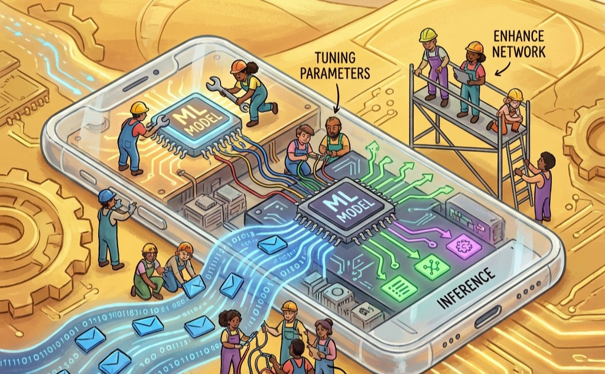

The Edge Learning Paradigm
Edge Intelligence

Purpose
Why must intelligence adapt where it operates rather than remain frozen from distant training?
A model trained in a datacenter encounters a world it has never seen when deployed to a user’s device. The user’s vocabulary differs from training data. Local conditions (lighting, acoustics, usage patterns) diverge from the distributions that shaped the model’s parameters. Over time, the gap widens as user behavior evolves while the model remains static. On-device learning exists because centralized training cannot anticipate every context, personalize for every user, or adapt to continuous change. It also exists because data cannot always travel: privacy constraints, bandwidth limitations, and latency requirements may prohibit sending raw observations to distant servers. The alternative to on-device learning is accepting that deployed models grow stale, that personalization requires privacy sacrifice, and that disconnected operation means degraded intelligence. On-device learning rejects these compromises by bringing the learning process to where the data lives and where the adaptation matters.
Learning Objectives
- Contrast centralized cloud training, on-device learning, and federated learning by analyzing their data flow, privacy properties, and operational trade-offs.
- Quantify training overhead on edge devices by calculating memory amplification (4-12\(\times\)), compute costs (2-3\(\times\)), and energy impacts relative to inference-only deployment.
- Select model adaptation strategies (weight freezing, LoRA, sparse updates) by comparing memory footprints, expressivity, and convergence for specific device capabilities.
- Apply data efficiency techniques (few-shot learning, experience replay, contrastive learning) to enable effective learning from limited local datasets while preventing catastrophic forgetting.
- Design federated learning systems that aggregate privacy-preserving updates across heterogeneous devices while managing non-IID data, communication efficiency, and stragglers.
- Integrate on-device learning into production MLOps by implementing device-aware deployment, distributed validation, and privacy-preserving monitoring across heterogeneous populations.
Imagine a voice assistant trained on millions of generic audio samples in a cloud datacenter. When deployed, it struggles to understand a user’s heavy regional accent or specific household vocabulary. If the model cannot adapt locally on the device itself, it remains permanently frozen and increasingly useless. The Edge Learning Paradigm shifts ML from a centralized factory model to a decentralized, continuously adapting network.
The preceding chapters established the infrastructure for distributed ML at scale: datacenter architectures optimized for GPU clusters (Compute Infrastructure), storage systems engineered for petabyte datasets (Data Storage), distributed training across thousands of accelerators (Distributed Training Systems), communication patterns that coordinate gradient synchronization (Collective Communication), and fault tolerance mechanisms that handle inevitable failures (Fault Tolerance and Reliability). The preceding chapter (Inference at Scale) then addressed load balancing, model sharding, and autoscaling for centralized inference systems. All of these chapters share a common assumption: controlled environments where computational resources are abundant, network connectivity is reliable, and system behavior is predictable.
A smartphone learning to predict user text input, a smart home device adapting to household routines, or an autonomous vehicle updating its perception models based on local driving conditions all demonstrate scenarios where traditional centralized training approaches prove inadequate. The smartphone encounters linguistic patterns unique to individual users that were not present in global training data. The smart home device must adapt to seasonal changes and family dynamics that vary dramatically across households. The autonomous vehicle faces local road conditions, weather patterns, and traffic behaviors that differ from its original training environment.
These scenarios require on-device learning, where models train and adapt directly on the devices where they operate.1 The consequence is a fundamental shift: machine learning moves from centralized training to distributed learning across millions of heterogeneous devices, each operating under unique constraints and local conditions. Within the Fleet Stack, distributed learning pushes the physical layer to its thermodynamic limits.
1 A11 Bionic (2017): The first mobile system on chip (SoC) with a dedicated Neural Engine, delivering 0.6 TOPS vs. the A10’s 0.2 TOPS. This 3\(\times\) jump enabled gradient computation on a phone for the first time, but the real systems consequence was establishing the mobile NPU as a distinct power domain: on-device training became feasible only when inference-optimized silicon freed enough thermal headroom for backpropagation bursts.
Napkin Math 1.1: NPU: The Silicon Dividend
The Math: The dividend is the ratio of general-purpose to specialized efficiency.
- Latency Speedup: 400 ms / 20 ms = 20\(\times\).
- Energy Efficiency: 0.8 J (CPU) / 0.016 J (NPU) = 50\(\times\).
The Systems Insight: Specialized hardware does not just make the model faster; it makes it feasible. A 50\(\times\) energy gain means you can run 50 times more inferences on the same battery charge. On the edge, the CPU is for Coordination, but the NPU is for Survival. If you miss the NPU target and fall back to the CPU, you have not just lost performance—you have likely made the application unusable due to rapid battery drain and thermal throttling.
The transition to on-device learning introduces fundamental tension in machine learning systems design. While cloud-based architectures use abundant computational resources and controlled operational environments, edge devices must function within severely constrained resource envelopes. Memory is measured in megabytes rather than gigabytes; power budgets are measured in milliwatts rather than watts; and network connectivity may be intermittent or entirely absent.
Throughout this chapter, we trace these constraints through Archetype C (Federated MobileNet) (Three systems archetypes), the Autonomous Health Monitor, where autonomy demands that learning happen on-device under severe resource limits. Archetype C represents the extreme end of this spectrum. Operating on milliwatt power budgets, it cannot afford the energy cost of transmitting raw data to the cloud. Data locality is therefore a physical necessity imposed by the power wall, not merely a privacy feature. The techniques developed in this chapter, including quantized training, sparse updates, and federated coordination, are the survival strategies that allow Archetype C to exist.
Navigating this architectural tension requires computational efficiency principles including quantization, pruning, and knowledge distillation, combined with algorithmic techniques, design patterns, and system principles that enable effective learning under extreme resource constraints. The challenge extends beyond conventional optimization of training algorithms: it requires rethinking the entire machine learning pipeline for deployment environments where traditional computational assumptions fail.
Definition 1.1: On-Device Learning
On-Device Learning is the local training or adaptation of machine learning models directly on deployed hardware without requiring server connectivity.
- Significance (Quantitative): It enables Hyper-Personalization and autonomous operation under severe resource constraints. Within the iron law, On-Device Learning must maximize Energy Efficiency (\(\eta\)) because every gradient update consumes limited battery power and must compete with other system tasks for Peak Throughput (\(R_{\text{peak}}\)).
- Distinction (Durable): Unlike Edge Inference, which only executes a fixed model, On-Device Learning involves a Local Optimization Loop (Forward and Backward passes) that requires significantly more memory and compute.
- Common Pitfall: A frequent misconception is that on-device learning requires training from scratch. In reality, it is almost always On-Device Adaptation: fine-tuning a small subset of a pretrained “Teacher” model to fit the specific data distribution of a local environment.
The consequences reach beyond technical optimization into every phase of the machine learning lifecycle. Models transition from predictable versioning patterns to continuous divergence and adaptation trajectories. Performance evaluation shifts from centralized monitoring dashboards to distributed assessment across heterogeneous user populations. Privacy preservation becomes a core architectural requirement that shapes system design decisions rather than a downstream compliance concern.
Motivations and benefits
Machine learning systems have traditionally relied on centralized training pipelines. Models are developed and refined using large, curated datasets and powerful cloud-based infrastructure (Dean et al. 2012). Once trained, these models are deployed to client devices for inference, creating a clear separation between the training and deployment phases. While this architectural separation has served most use cases well, it imposes significant limitations in modern applications where local data is dynamic, private, or highly personalized.
2 Privacy-Preserving (Differential Privacy): While Federated Learning avoids moving raw data, research has shown that raw gradients can be “inverted” to reconstruct input samples (for example, a user’s credit card number). True privacy preservation requires Differential Privacy, which adds calibrated noise to gradients to mathematically guarantee that no individual sample’s contribution can be identified.
On-device learning challenges this established model by enabling systems to train or adapt directly on the device, without relying on constant connectivity to the cloud. The shift reflects changing application requirements and user expectations that demand responsive, personalized, and privacy-preserving2 machine learning systems.
Consider a smartphone keyboard adapting to a user’s unique vocabulary and typing patterns. To personalize predictions, the system must perform gradient updates on a compact language model using locally observed text input. A single gradient update for even a minimal language model requires 50–100 MB of memory for activations and optimizer state. Modern smartphones typically allocate 200–300 MB to background applications like keyboards (varies by OS and device generation). This razor-thin margin demonstrates the central engineering challenge of on-device learning: a single training step can consume 25 percent of available memory. The system must achieve meaningful personalization while operating within constraints so severe that traditional training approaches become architecturally infeasible. This quantitative reality drives the need for specialized techniques that make adaptation possible within extreme resource limitations.
On-device learning benefits
Traditional machine learning systems rely on a clear division of labor between model training and inference. Centralized environments with high-performance compute resources and large-scale datasets handle training; client devices receive the trained models and operate in a static inference-only mode.
The centralized paradigm works well when data collection is feasible, connectivity is reliable, and a single global model can serve all users. It breaks down when data is user-specific, behavior is dynamic, or connectivity is intermittent.
On-device learning addresses these limitations by enabling deployed devices to perform model adaptation using locally available data. The capability extends beyond efficiency optimization into a cornerstone of trustworthy AI systems. Keeping data local provides a structural foundation for privacy. Adapting to individual users enhances fairness and utility. Enabling offline operation improves robustness against network failures and infrastructure dependencies.
Four key considerations motivate the shift from centralized to decentralized learning (Li et al. 2020): personalization, latency and availability, privacy, and infrastructure efficiency.
Personalization represents the most compelling motivation, as deployed models often encounter usage patterns and data distributions that differ from their training environments. Local adaptation allows models to refine behavior in response to user-specific data, capturing linguistic preferences, physiological baselines, sensor characteristics, or environmental conditions. This capability is essential in applications with high inter-user variability, where a single global model cannot serve all users effectively.
Latency and availability constraints provide additional justification for local learning. In edge computing scenarios, connectivity to centralized infrastructure may be unreliable, delayed, or intentionally limited to preserve bandwidth or reduce energy consumption. On-device learning enables autonomous improvement of models even in fully offline or delay-sensitive contexts, where round-trip updates to the cloud are architecturally infeasible.
Privacy considerations provide a third compelling driver. Many modern applications involve sensitive or regulated data including biometric measurements, typed input, location traces, or health information. Local learning mitigates privacy concerns by keeping raw data on the device and operating within privacy-preserving boundaries. This potentially aids adherence to regulations such as the General Data Protection Regulation (GDPR),3 the Health Insurance Portability and Accountability Act (HIPAA)4 (Tomes 1996), or region-specific data sovereignty laws.
3 GDPR (General Data Protection Regulation): Effective May 2018, GDPR made centralized ML training on personal data illegal without explicit consent and introduced the “right to be forgotten,” which can require models to unlearn specific users. These constraints made on-device learning an architectural compliance strategy: training locally avoids cross-border data transfer restrictions and eliminates the need for server-side consent management.
4 HIPAA (Health Insurance Portability and Accountability Act, 1996): Requires physical, technical, and administrative safeguards for protected health information (PHI), mandating encrypted storage, audit trails, and Business Associate Agreements with any cloud provider processing PHI. On-device learning sidesteps this compliance burden: training locally on wearables means PHI never leaves the device, reducing a multi-party legal problem to a single-device security boundary.
Infrastructure efficiency provides economic motivation for distributed learning approaches. Centralized training pipelines require substantial backend infrastructure to collect, store, and process user data from potentially millions of devices. By shifting learning to the edge, systems reduce communication costs and distribute training workloads across the deployment fleet, relieving pressure on centralized resources while improving scalability.
Alternative approaches and decision criteria
On-device learning demands significant engineering investment that may not always be justified. Simpler alternatives can often achieve comparable results with lower operational overhead, and premature adoption introduces complexity without proportional value.
Several alternative approaches often suffice for personalization and adaptation requirements without local training complexity. Feature-based personalization provides effective customization by storing user preferences, interaction history, and behavioral features locally. Rather than adapting model weights, the system feeds these stored features into a static model to achieve personalization. News recommendation systems exemplify this approach by storing user topic preferences and reading patterns locally, then combining these features with a centralized content model to provide personalized recommendations without model updates.
Cloud-based fine-tuning with privacy controls enables personalization through centralized adaptation with appropriate privacy safeguards. User data is processed in batches during off-peak hours using privacy-preserving techniques such as differential privacy5 or federated analytics. This approach often achieves superior accuracy compared to resource-constrained on-device updates while maintaining acceptable privacy properties for many applications.
5 Differential Privacy (DP): A mathematical framework that bounds information leakage by adding calibrated noise to computations. The key parameter \(\varepsilon\) controls the privacy-utility trade-off: typical federated deployments use \(\varepsilon = 1\)–\(8\), where smaller values provide stronger privacy but reduce model accuracy by 1–5 percent and increase communication overhead by 2–10\(\times\). This noise tax is the fundamental cost of privacy-preserving on-device learning: every gradient update becomes noisier, requiring more communication rounds to converge.
User-specific lookup tables combine global models with personalized retrieval mechanisms. The system maintains a lightweight, user-specific lookup table for frequently accessed patterns while using a shared global model for generalization. This hybrid approach provides personalization benefits with minimal computational and storage overhead.
The decision to implement on-device learning should be driven by quantifiable requirements that preclude these simpler alternatives. True data privacy constraints that legally prohibit cloud processing, genuine network limitations that prevent reliable connectivity, quantitative latency budgets that preclude cloud round-trips, or demonstrable performance improvements that justify the operational complexity represent legitimate drivers for on-device learning adoption.
For applications with critical timing requirements, network round-trip times make cloud-based alternatives architecturally infeasible. Camera processing under 33 ms, voice response under 500 ms, AR/VR motion-to-photon latency under 20 ms, or safety-critical control under 10 ms all face network round-trip times typically ranging from 50 to 200 ms. In such scenarios, on-device learning becomes necessary regardless of complexity considerations. Teams should thoroughly evaluate simpler solutions before committing to the significant engineering investment that on-device learning requires.
These motivations are grounded in the broader concept of knowledge transfer, where a pretrained model transfers useful representations to a new task or domain. This foundational principle makes on-device learning both feasible and effective, enabling sophisticated adaptation with minimal local resources. Figure 1 illustrates how knowledge transfer occurs between closely related tasks such as playing different board games or musical instruments, or across domains that share structure such as from riding a bicycle to driving a scooter. In the context of on-device learning, this means using a model pretrained in the cloud and adapting it efficiently to a new context using only local data and limited updates, allowing fast adaptation without relearning from scratch even when the new task diverges in input modality or goal.
This conceptual shift, enabled by transfer learning and adaptation, enables real-world on-device applications. Whether adapting a language model for personal typing preferences, adjusting gesture recognition to individual movement patterns, or recalibrating a sensor model in changing environments, on-device learning allows systems to remain responsive, efficient, and user-aligned over time.
Real-world application domains
The motivations for on-device learning manifest concretely across consumer technologies, healthcare, industrial systems, and embedded applications, each domain presenting scenarios where personalization, latency, privacy, and infrastructure efficiency become essential.
Mobile input prediction represents the most mature and widely deployed example of on-device learning. In systems such as smartphone keyboards, predictive text and autocorrect features benefit substantially from continuous local adaptation. User typing patterns are highly personalized and evolve dynamically, making centralized static models insufficient for optimal user experience. On-device learning allows language models to fine-tune their predictions directly on the device, achieving personalization while maintaining data locality.
For instance, Google’s Gboard6 employs federated learning7 to improve shared models across a large population of users while keeping raw data local to each device (Hard et al. 2018).
6 Gboard (2017): The first commercial federated learning deployment at planetary scale, aggregating model updates across over 1 billion devices. Gboard demonstrated 10–20 percent accuracy improvements over static models while maintaining differential privacy guarantees, proving that the communication overhead of federated coordination (each device uploading only a few KB of compressed updates) was architecturally viable even over constrained mobile networks.
7 Federated Learning: Named by direct analogy to a political federation (for example, the United States), where individual states (devices) maintain Local Autonomy over their data while participating in a Global Union to improve a shared model. This decentralization is the primary mechanism for meeting strict data residency requirements (GDPR, HIPAA) that prohibit raw data movement.
Figure 2 demonstrates how different prediction strategies enable local adaptation in real time. Next-word prediction suggests likely continuations based on prior text, while Smart Compose uses on-the-fly rescoring to offer dynamic completions. These techniques demonstrate the sophistication of local inference mechanisms.

Wearable and health monitoring devices present equally compelling use cases with additional regulatory constraints. These systems rely on real-time data from accelerometers, heart rate sensors, and electrodermal activity monitors to track user health and fitness. Physiological baselines vary dramatically between individuals, creating a personalization challenge that static models cannot address effectively. On-device learning allows models to adapt to these individual baselines over time, substantially improving the accuracy of activity recognition, stress detection, and sleep staging while meeting regulatory requirements for data localization.
Voice interaction technologies present another important application domain with unique acoustic challenges. Wake-word detection8 and voice interfaces in devices such as smart speakers and earbuds must recognize voice commands quickly and accurately even in noisy or dynamic acoustic environments.
8 Wake-Word Detection: Always-on keyword spotting that runs continuously at approximately 1 mW, roughly 1000\(\times\) less than full speech recognition, using approximately 100 KB neural networks optimized for sub-100 ms latency and $<$0.1 false activations per hour. This extreme power constraint defines the design space: the model must be small enough to run on a dedicated always-on processor, making on-device personalization critical for reducing false activations without increasing model size.
These systems face strict latency requirements. Voice interfaces must maintain end-to-end response times under 500 ms to preserve natural conversation flow, with wake-word detection requiring sub-100 ms response times to avoid user frustration. Local training allows models to adapt to the user’s unique voice profile and changing ambient context, reducing false positives and missed detections while meeting these demanding performance constraints. This adaptation is particularly valuable in far-field audio settings, where microphone configurations and room acoustics vary dramatically across deployments.
Beyond consumer applications, industrial IoT and remote monitoring systems demonstrate the value of on-device learning in resource-constrained environments. In applications such as agricultural sensing, pipeline monitoring, or environmental surveillance, connectivity to centralized infrastructure may be limited, expensive, or entirely unavailable. On-device learning allows these systems to detect anomalies, adjust thresholds, or adapt to seasonal trends without continuous communication with the cloud. This capability is necessary for maintaining autonomy and reliability in edge-deployed sensor networks, where system downtime or missed detections can have significant economic or safety consequences.
The most demanding applications emerge in embedded computer vision systems including robotics, AR/VR, and smart cameras. These combine complex visual processing with extreme timing constraints. Camera applications must process frames within 33 ms to maintain 30 FPS real-time performance. AR/VR systems demand motion-to-photon latencies under 20 ms to prevent nausea and maintain immersion. Safety-critical control systems require even tighter bounds, typically under 10 ms, where delayed decisions can have severe consequences. These systems operate in novel or rapidly changing environments that differ substantially from their original training conditions. On-device adaptation allows models to recalibrate to new lighting conditions, object appearances, or motion patterns while meeting these critical latency budgets that fundamentally drive the architectural decision between on-device vs. cloud-based processing.
Each domain reveals a common pattern. Deployment environments introduce variation and context-specific requirements that cannot be anticipated during centralized training. These applications demonstrate how the motivational drivers manifest as concrete engineering constraints. Mobile keyboards face memory limitations for storing user-specific patterns. Wearable devices encounter energy budgets that restrict training frequency. Voice interfaces must meet sub-100 ms latency requirements that preclude cloud coordination. Industrial IoT systems operate in network-constrained environments that demand autonomous adaptation. This pattern illuminates the fundamental design requirement shaping all subsequent technical decisions. Learning must be performed efficiently, privately, and reliably under significant resource constraints. Section 1.1 analyzes these constraints systematically, Section 1.2 presents techniques for adapting models within tight resource envelopes, and Section 1.4 establishes protocols for privacy-preserving coordination across device populations.
Architectural trade-offs: Centralized vs. decentralized training
The diversity of these applications reveals how fundamentally on-device learning differs from traditional ML architectures. The differences extend beyond deployment choices into a complete reimagining of the training lifecycle.
Most machine learning systems today follow a centralized learning paradigm that has served the field well but increasingly shows strain under modern deployment requirements. Models train in data centers using large-scale, curated datasets aggregated from many sources, deploy to client devices in static form for inference without further modification, and receive updates periodically through offline retraining using newly collected or labeled data sent back from the field.
The centralized model offers proven advantages: high-performance computing infrastructure, access to diverse data distributions, and robust debugging and validation pipelines. It also depends on assumptions that increasingly fail in modern deployments: reliable data transfer, trust in data custodianship, and infrastructure capable of managing global updates across device fleets.
On-device learning inverts these assumptions. Each device maintains its own model copy and adapts it locally using data unavailable to centralized infrastructure. Training occurs asynchronously under varying resource conditions driven by device usage patterns, battery levels, and thermal states. Data never leaves the device, reducing privacy exposure but complicating coordination. Hardware capabilities, runtime environments, and usage patterns vary dramatically across devices, making the learning process heterogeneous and difficult to standardize.
Decentralization introduces a new class of systems challenges. Devices may operate with different model versions, leading to behavioral inconsistencies across the deployment fleet. Evaluation and validation grow more complex without a central point from which to measure performance (McMahan et al. 2017). Model updates must be carefully managed to prevent degradation, and safety guarantees become harder to enforce without centralized testing infrastructure.
Managing thousands of heterogeneous edge devices exceeds typical distributed systems complexity. Device heterogeneity extends beyond hardware differences to include varying operating system versions, security patches, network configurations, and power management policies. At any given time, 20–40 percent of devices are offline (Bonawitz et al. 2019). Others have been disconnected for weeks or months, creating persistent coordination challenges.
When disconnected devices reconnect, they require state reconciliation to avoid version conflicts. Update verification becomes critical as devices can silently fail to apply updates or report success while running outdated models. Robust systems implement multi-stage verification. Cryptographic signatures confirm update integrity, functional tests validate model behavior, and telemetry confirms deployment success. Rollback strategies must handle partial deployments where some devices received updates while others remain on previous versions. Maintaining system consistency during failure recovery requires sophisticated orchestration that draws on distributed systems principles while introducing edge-specific complexities.
Despite these challenges, decentralization enables deep personalization without centralized oversight, supports learning in disconnected or bandwidth-limited environments, and reduces the operational cost of model updates. The central question is how to coordinate learning across devices: through periodic synchronization, federated aggregation, or hybrid approaches that balance local and global objectives.
The transformation from centralized to decentralized learning creates three distinct operational phases, each with different characteristics and challenges.
The traditional centralized paradigm begins with cloud-based training on aggregated data, followed by static model deployment to client devices. This approach works well when data collection is feasible, network connectivity is reliable, and a single global model can serve all users effectively. However, it breaks down when data becomes personalized, privacy-sensitive, or collected in environments with limited connectivity.
Once deployed, local differences begin to emerge as each device encounters its own unique data distribution. Devices collect data that reflects individual user patterns, environmental conditions, and usage contexts. This data is often non-IID9 and noisy, requiring local model adaptation to maintain performance. This transition marks the shift from global generalization to local specialization.
9 Non-IID (Non-Independent and Identically Distributed): Data where samples are not drawn from the same distribution, the default condition in federated learning where each device reflects a single user’s patterns. Non-IID data causes federated averaging to diverge: experiments show accuracy drops of 10–50 percent compared to IID baselines when label distributions are skewed across clients, forcing systems to adopt techniques like local adaptation layers or clustered aggregation to maintain convergence.
The final phase introduces federated coordination, where devices periodically synchronize their local adaptations through aggregated model updates rather than raw data sharing. This enables privacy-preserving global refinement while maintaining the benefits of local personalization.
Figure 3 traces this evolution from centralized training through local adaptation to federated coordination. Each phase increases coordination complexity while enabling capabilities impossible in purely centralized deployments.
{kind=link}
Decentralized, continuous learning rewrites the rules of system design. We are no longer operating in climate-controlled datacenters with effectively infinite power; we must confront the severe physical and algorithmic limits of edge devices.
Design Constraints
Attempting to fine-tune a neural network on a smartphone is a thermodynamic battle. A typical GPU training cluster consumes megawatts of power, while a smartphone must execute backpropagation on a 10-Watt thermal budget without burning the user’s hand or draining the battery in five minutes. These severe constraints force us to radically redesign our learning algorithms to be hyper-efficient in compute, memory, and data.
Three efficiency dimensions define the on-device learning design space: algorithmic efficiency (how many parameters must change), compute efficiency (how many operations per update), and data efficiency (how many examples are needed). These dimensions interact multiplicatively rather than additively, creating a constrained optimization problem far more challenging than inference-only deployment. Compression techniques including quantization, pruning, and knowledge distillation (foundations established in model optimization principles) enable deployment on resource-constrained devices, but on-device learning amplifies these constraints dramatically.
On-device learning operates under the same efficiency constraints as inference but with training-specific amplifications that make optimization far more demanding. Where inference requires a single forward pass through the network, training demands forward propagation, gradient computation through backpropagation, and weight updates, increasing memory requirements by 3-5\(\times\) and computational costs by 2-3\(\times\). The model compression techniques that enable efficient inference become baseline requirements rather than optimizations, as training within edge device constraints would be impossible without aggressive compression.
The fundamental engineering challenges that shape on-device learning implementation follow directly from these motivations. Enabling learning on the device requires completely rethinking conventional assumptions about where and how machine learning systems operate. In centralized environments, models are trained with access to extensive compute infrastructure, large and curated datasets, and generous memory and energy budgets. At the edge, none of these assumptions hold, creating a fundamentally different design space.
On-device learning constraints fall into three critical dimensions that define the efficiency framework. The first dimension is model compression requirements, which determine algorithmic efficiency. The second is sparse and non-uniform data characteristics, which determine data efficiency. The third is severely limited computational resources, which determine compute efficiency. These three dimensions form an interconnected constraint space that defines the feasible region for on-device learning systems. Each dimension imposes distinct limitations that influence algorithmic choices, system architecture, and deployment strategies.
Quantifying training overhead on edge devices
The transition from inference-only deployment to on-device training creates multiplicative rather than additive complexity. These constraints interact and amplify each other in ways that reshape system design requirements, extending resource optimization principles including quantization, pruning, and knowledge distillation while introducing new challenges specific to distributed learning environments.
Standard efficiency constraints apply to both inference and training. These constraints include quantization, pruning, and knowledge distillation. However, training amplifies the memory constraint dimension by 4 to 12 times. Table 1 quantifies how compute operations grow 2-3\(\times\) and energy consumption can balloon 10–50\(\times\), while Figure 4 shows that memory requirements increase 4-12\(\times\) when transitioning from inference to on-device training.
| Constraint Dimension | Inference | Training Amplification | Impact on Design |
|---|---|---|---|
| Memory Footprint | Model weights + single activation map | Weights + full activation cache + gradients + optimizer state | 4-12\(\times\) increase; forces aggressive compression |
| Compute Operations | Forward pass only | Forward + backward + weight update | 2-3\(\times\) increase; limits model complexity |
| Memory Bandwidth | Sequential weight reads | Bidirectional data flow for gradients | 5-10\(\times\) increase; creates bottlenecks |
| Energy per Sample | Single inference operation | Multiple gradient steps with convergence | 10-50\(\times\) increase; requires opportunistic scheduling |
| Data Requirements | Pre-collected, curated datasets | Sparse, noisy, streaming local data | Necessitates sample-efficient methods |
| Hardware Utilization | Optimized for forward passes | Different access patterns for backprop | Inference accelerators may not help training |
As Figure 4 shows, this amplification manifests as a 4–12× memory footprint increase across model scales.
{kind=link}
Peak memory usage
As Figure 4 illustrates, memory consumption during training is not static. It fluctuates dynamically, reaching a maximum during the backward pass when activations, gradients, and optimizer states must coexist. This peak memory usage determines whether a model can be trained on a device. For a 10M parameter model on a smartphone with 8 GB RAM, the 40 MB of FP32 weights might spike to over 200 MB during backpropagation as activations, gradients, and optimizer states accumulate—competing directly with the operating system and foreground applications for the device’s limited memory. Techniques like gradient checkpointing mitigate this by discarding intermediate activations during the forward pass and recomputing them on-demand during the backward pass. This approach trades increased computation (20 to 30 percent) for a dramatic reduction in peak memory, often achieving 3 to 4 times reduction.
These amplifications explain why standard optimization techniques fail when applied to training workloads without modification. Each constraint category shapes on-device learning system design, requiring approaches that build on but extend beyond inference-focused methods.
Checkpoint 1.1: On-Device Training Constraints
Verify your understanding of how training amplifies edge constraints:
Figure 5 illustrates how the complete training pipeline combines offline pretraining with online adaptive learning on resource-constrained IoT devices. The system first undergoes meta-training with generic data. During deployment, device-specific constraints such as data availability, compute, and memory shape the adaptation strategy by ranking and selecting layers and channels to update. This allows efficient on-device learning within limited resource envelopes.
{kind=link}
Model constraints
The structure and size of the machine learning model directly determine whether on-device training is possible. Cloud-deployed models can span billions of parameters and rely on multi-gigabyte memory budgets; models intended for on-device learning must conform to tight constraints on memory, storage, and computational complexity. These constraints tighten further during training, where gradient computation, parameter updates, and optimizer state management all demand additional resources beyond inference.
The scale of these constraints becomes concrete across the device spectrum. MobileNetV2, commonly used in mobile vision tasks, requires approximately 14 MB of storage in its standard configuration. While feasible for modern smartphones with gigabytes of available RAM, this far exceeds the 256 KB of SRAM and 1 MB of flash storage on microcontrollers such as the Arduino Nano 33 BLE Sense10. On such severely constrained platforms, even a single convolutional layer may exceed available RAM during training due to intermediate feature maps and gradient storage.
10 Arduino Nano 33 BLE Sense: With 256 KB SRAM, roughly 65,000\(\times\) smaller than a flagship smartphone’s 16 GB, a single \(224 \times 224\)$\(3 RGB image (150 KB) consumes 60 percent of available memory. Training amplifies this by 3--5\)$ for gradients and activations, meaning even a tiny convolutional neural network (CNN) layer can exceed total SRAM during backpropagation. This memory wall forces 8-bit or 4-bit quantization as a prerequisite, not an optimization.
The training process itself dramatically expands the effective memory footprint. Standard backpropagation caches activations for each layer during the forward pass, then reuses them during gradient computation in the backward pass. As the amplification analysis above established, this activation caching multiplies memory requirements compared to inference-only deployment. A seemingly modest 10-layer convolutional model processing \(64 \times 64\) images may require 1 to 2 MB, well beyond the SRAM capacity of most embedded systems.
Model complexity also directly affects runtime energy consumption and thermal limits. In smartwatches or battery-powered wearables, sustained model training can rapidly deplete energy reserves or trigger thermal throttling that degrades performance. Training a full model using floating-point operations on these devices is often infeasible from an energy perspective, even when memory constraints are satisfied. Ultra-lightweight model variants such as the MLPerf Tiny benchmark networks (Banbury et al. 2021) address this by fitting within 100–200 KB and adapting through partial gradient updates, using aggressive quantization and pruning to maintain sufficient expressiveness.
The practical implications of battery and thermal constraints extend beyond just limiting training duration. Mobile devices must carefully balance training opportunities with user experience. Aggressive on-device training can cause noticeable device heating and rapid battery drain, leading to user dissatisfaction and potential app uninstalls. Modern smartphones typically limit sustained processing to 2–3 W for ML workloads to prevent thermal discomfort, though they can burst to 5–10 W for brief periods before thermal throttling kicks in. Training even modest models can easily exceed these sustainable power limits. This reality necessitates intelligent scheduling strategies: training during charging periods when thermal dissipation is improved, using low-power cores for gradient computation when possible, and implementing thermal-aware duty cycling that pauses training when temperature thresholds are exceeded. Some systems even use device usage patterns, scheduling intensive adaptation only during overnight charging when the device is idle and connected to power.
These constraints demand that model architectures be designed for on-device learning from the outset. Large transformers and deep convolutional networks are simply not viable for on-device adaptation due to their size and computational complexity. Specialized lightweight architectures such as MobileNets11, SqueezeNet (Iandola et al. 2016), and EfficientNet (Tan and Le 2019) address resource-constrained environments through depthwise separable convolutions12, bottleneck layers, and aggressive quantization, dramatically reducing memory and compute requirements while maintaining sufficient performance.
11 MobileNet (2017): Google’s architecture achieved 8–9\(\times\) FLOPs reduction over standard CNNs through depthwise separable convolutions. The systems consequence: MobileNetV2 runs ImageNet classification in approximately 75 ms on a Pixel phone versus 1.8 seconds for ResNet-50, crossing the threshold where real-time on-device inference and adaptation become thermally sustainable within a smartphone’s 2–3 W power envelope.
12 Depthwise Separable Convolutions: Decomposes a standard convolution into a per-channel depthwise filter followed by a \(1 \times 1\) pointwise combination. For a \(3 \times 3\) convolution with 512 input/output channels, this reduces parameters from 2.4 M to 13.8 K, a 174\(\times\) reduction. The savings are not just theoretical: this decomposition is what makes real-time CNN inference possible on mobile CPUs, and it equally reduces the memory needed for activation caching during on-device training.
Modularity is a key design property. MobileNets (Howard et al. 2017) and MobileNetV2 (Sandler et al. 2018) can be configured with different width multipliers and resolution settings to balance performance and resource usage. MobileNetV2 with width multiplier alpha=1.0 requires 3.4 M parameters (13.6 MB in FP32), but with alpha=0.5 this drops to 0.7 M parameters (2.8 MB), enabling deployment on devices with just 4 MB available RAM.
Model architecture determines the memory and computational baseline for on-device learning, but data availability and quality introduce equally fundamental limitations that shape every aspect of the learning process.
Data constraints
Data available to on-device ML systems differs dramatically from the large, curated datasets used in cloud-based training. At the edge, data is locally collected, temporally sparse, and often unstructured or unlabeled. The resulting challenges in volume, quality, and statistical distribution directly affect the reliability and generalizability of on-device learning.
Data volume is severely limited by both storage constraints and the sporadic nature of user interaction. A smart fitness tracker may collect motion data only during physical activity, generating relatively few labeled samples per day. If a user exercises for 30 minutes, only a few hundred data points might be available for training, compared to the thousands or millions required for effective supervised learning. The scarcity forces a shift from data-rich to data-efficient algorithms.
On-device data is also frequently non-IID (Zhao et al. 2018), creating statistical challenges that cloud-based systems rarely encounter. A voice assistant deployed across households encounters wide variation in accents, languages, speaking styles, and command patterns. Smartphone keyboards adapt to individual typing patterns, autocorrect preferences, and multilingual usage that varies widely between users. The heterogeneity complicates both model convergence and the design of update mechanisms that must generalize across devices while maintaining personalization.
Label scarcity compounds the distribution problem. Most edge-collected data is unlabeled by default, requiring systems to learn from weak or implicit supervision signals. A smartphone camera may capture thousands of images throughout the day, but only a few are associated with meaningful user actions (tagging, favoriting, or sharing) that could serve as implicit labels. In many applications, including anomaly detection in sensor data and gesture recognition adaptation, explicit labels may be entirely unavailable, making traditional supervised learning infeasible without alternative methods for weak supervision or unsupervised adaptation.
Data quality introduces further challenges. Embedded systems such as environmental sensors or automotive ECUs experience fluctuations in sensor calibration, environmental interference, or mechanical wear, leading to corrupted or drifting input signals over time. Without centralized validation systems to detect and filter these errors, they silently degrade learning performance.
Privacy and security concerns impose the most restrictive constraints, often making data sharing architecturally impossible rather than merely undesirable. Sensitive information such as health data, personal communications, or behavioral patterns must be protected from unauthorized access under legal and ethical requirements. On-device learning must therefore rely on techniques that enable local adaptation without ever exposing sensitive information, fundamentally reshaping how learning systems are designed and validated.
Compute constraints
The edge hardware landscape provides computational substrate for machine learning, spanning from microcontrollers like STM32F4 and ESP32 at the most constrained end, to mobile-class processors with dedicated AI accelerators (Apple Neural Engine, Qualcomm Hexagon, Google Tensor) in the middle, and high-capability edge devices at the upper end. While these devices offer varying levels of inference capabilities (computational throughput, memory bandwidth, and energy efficiency when executing pretrained models), training workloads exhibit fundamentally different computational characteristics that reshape hardware utilization patterns.
On-device learning must operate within computational envelopes that differ from cloud-based training infrastructure by factors of hundreds or thousands in raw capacity. The key difference: backpropagation requires significantly higher memory bandwidth than inference due to gradient computation and activation caching, weight updates create write-heavy access patterns unlike inference’s read-only operations, and optimizer state management demands additional memory allocation. Hardware perfectly adequate for inference may prove entirely inadequate for adaptation, even when updating only a small parameter subset.
At the most constrained end, devices such as the STM32F413 or ESP3214 microcontrollers offer only a few hundred kilobytes of SRAM and lack hardware floating-point support (Warden and Situnayake 2020). Libraries like CMSIS-NN (Lai et al. 2018) provide optimized neural network kernels for Arm Cortex-M processors, achieving 4.6\(\times\) runtime improvement through fixed-point arithmetic and single instruction, multiple data (SIMD) optimizations. These severe limitations preclude conventional deep learning libraries and require models designed for integer arithmetic and minimal runtime memory allocation. Even simple models require quantization-aware training15 and selective parameter updates to execute training loops without exceeding memory or power budgets.
13 STM32F4 Microcontroller: With 192 KB SRAM and 168 MHz clock speed, integer-only arithmetic runs 10–100\(\times\) slower than the floating-point units in mobile chips. A 10-neuron hidden layer requires approximately 40 KB for weights in FP32, consuming over 20 percent of total SRAM before accounting for activations or gradients. At approximately 100 mW active power, even simple gradient updates must be duty-cycled to preserve battery life on these platforms.
14 ESP32: Provides 520 KB SRAM and dual-core 240 MHz processing with built-in WiFi and Bluetooth, making it the cheapest platform capable of both local training and federated coordination. Without hardware floating-point, all ML operations require integer quantization, but 8-bit models achieve 95 percent of FP32 accuracy while fitting in approximately 50 KB, enabling basic on-device adaptation for sensor anomaly detection.
15 Quantization-Aware Training (QAT): Simulates low-precision arithmetic during training so the model learns robust representations despite reduced precision, unlike post-training quantization which converts a trained FP32 model after the fact. The systems payoff is direct: INT8 operations consume 4\(\times\) less power and run 4\(\times\) faster than FP32, while QAT preserves 95–99 percent of original accuracy. On edge devices, QAT is not optional but a prerequisite for fitting training within thermal and memory budgets.
16 SGD (Stochastic Gradient Descent): Updates parameters from single-sample or small-batch gradients, storing only current parameters and their gradients. This minimal memory footprint is what makes SGD the only viable optimizer on microcontrollers: Adaptive Moment Estimation (Adam) requires 3\(\times\) the memory of SGD for its per-parameter moment estimates, exceeding the SRAM budget on devices with $<$512 KB. The trade-off is slower convergence, requiring more gradient steps to reach comparable accuracy.
The practical implications are stark: while the STM32F4 microcontroller can run a simple linear regression model with a few hundred parameters, training even a small convolutional neural network would immediately exceed its memory capacity. In these severely constrained environments, training is often limited to simple algorithms such as stochastic gradient descent (SGD)16 or \(k\)-means clustering, which can be implemented using integer arithmetic and minimal memory overhead, representing a fundamental departure from modern machine learning practice.
Moving up the computational hierarchy, mobile-class hardware represents improvement but still operates under severe constraints. Platforms including the Qualcomm Snapdragon, Apple Neural Engine17, and Google Tensor SoC18 provide significantly more compute power than microcontrollers, often featuring dedicated AI accelerators and optimized support for 8-bit or mixed-precision19 matrix operations. These accelerators offer dedicated matrix multiplication units, on-chip memory hierarchies, and power management features specifically designed for neural network inference and, increasingly, training workloads. While these platforms can support more sophisticated training routines, including full backpropagation over compact models, they still fall far short of the computational throughput and memory bandwidth available in centralized data centers. For instance, training a lightweight transformer20 on a smartphone is technically feasible but must be tightly bounded in both time and energy consumption to avoid degrading the user experience, highlighting the persistent tension between learning capabilities and practical deployment constraints.
17 Apple Neural Engine: From the A11 (0.6 TOPS) to the A17 Pro (50 TOPS), a 58\(\times\) improvement in six years. The systems consequence: fine-tuning a MobileNet classifier takes approximately 2 seconds on the Neural Engine versus 45 seconds on CPU, while consuming only approximately 500 mW additional power. This 20\(\times\) speedup at minimal power cost is what makes on-device adaptation thermally feasible during normal phone usage.
18 Google Tensor SoC (2021): Features a custom Edge Tensor Processing Unit (TPU) derived from Google’s datacenter TPU v1, optimized for 8-bit integer ML operations at 2 W. Unlike general-purpose NPUs, Tensor is co-designed with TensorFlow Lite and federated learning infrastructure, reducing the software overhead of local training. This tight hardware-software coupling demonstrates the trend toward ML-specific SoC design for on-device adaptation.
19 Mixed-Precision Training: Assigns different numerical precisions to different operations: FP16 for forward and backward passes, FP32 for parameter accumulation. This halves memory usage and doubles throughput on hardware with Tensor Cores. Mobile implementations go further, using INT8 for inference and FP16 for gradients, which reduces training memory by 4\(\times\) compared to full FP32 while keeping accumulation errors bounded through loss scaling.
20 Lightweight Transformers: Mobile-optimized architectures like MobileBERT achieve 4–6\(\times\) speedup over full models through knowledge distillation and attention head pruning, retaining 97 percent of BERT-base accuracy at approximately 40 ms inference on mobile CPUs versus 160 ms for full BERT. The constraint that matters for on-device learning: even these compressed transformers require 50–200 MB for training activations, pushing against the 2–4 GB available on mid-range phones.
Published benchmark results from MLPerf Tiny and official vendor data make these hardware tiers concrete. Figure 6 plots inference latency against energy per inference for representative devices, revealing three distinct clusters separated by approximately 100\(\times\) in energy consumption. Dedicated neural processors such as the Syntiant Core 2 and STM32N6 NPU achieve keyword spotting in under 5 ms at 30 to 160 microjoules, while edge GPUs like the Jetson AGX Orin deliver sub-millisecond latency at 15 millijoules. The 100\(\times\) energy gap between tiers determines which devices can operate on battery power for months versus hours, fundamentally shaping the feasible design space for on-device learning.
{kind=link}
These computational limitations become especially acute in real-time or battery-operated systems, as demonstrated in camera processing requirements, where specific latency budgets create hard architectural constraints. Camera applications processing at 30 FPS cannot exceed 33 ms per frame, voice interfaces require rapid response times for natural interaction, AR/VR systems demand sub-20 ms motion-to-photon latency to prevent user discomfort, and safety-critical control systems must respond within 10 ms to ensure operational safety. These quantitative constraints determine whether on-device learning is feasible or whether cloud-based alternatives become architecturally necessary. In a smartphone-based speech recognizer, on-device adaptation must seamlessly coexist with primary inference workloads without interfering with response latency or system responsiveness. Similarly, in wearable medical monitors, training must occur opportunistically during carefully managed windows (typically during periods of low activity or charging) to preserve battery life and avoid thermal management issues.
Beyond raw computational capacity, the architectural implications of these hardware constraints extend into fundamental system design choices. Training operations exhibit fundamentally different memory access patterns than inference workloads: backpropagation requires 3–5\(\times\) higher memory bandwidth due to gradient computation and activation caching, creating bottlenecks that pure computational metrics do not capture. Modern edge accelerators attempt to address these challenges through increasingly specialized hardware features. Adaptive precision datapaths allow dynamic switching between INT4 for forward passes and FP16 for gradient computation, optimizing both accuracy and efficiency within power budgets. Sparse computation units accelerate selective parameter updates by skipping zero gradients, a capability critical for efficient bias-only and LoRA adaptations. Near-memory compute architectures21 reduce data movement costs by performing gradient updates directly adjacent to weight storage, addressing the memory bandwidth bottleneck. However, most current edge accelerators remain fundamentally optimized for inference workloads, creating significant hardware-software co-design opportunities for future generations of on-device training accelerators specifically designed to handle the unique demands of local adaptation.
21 Near-Memory Computing: Places processing elements adjacent to or within memory arrays, bypassing the von Neumann bottleneck where traditional architectures spend 100–1000\(\times\) more energy moving data than computing on it. Near-memory designs achieve 10–100\(\times\) better energy efficiency for matrix operations by eliminating memory bus transfers. For edge training, where gradient computation generates write-heavy access patterns that overwhelm cache hierarchies, this architectural shift could make on-device backpropagation energy-competitive with inference.
The mobile memory wall
While mobile NPUs deliver impressive TOPS, the “memory wall” that Compute Infrastructure examines becomes an impassable barrier for large-scale models on edge devices. Recent analysis (Ma and Patterson 2024) highlights that autoregressive “Decode” operations are strictly bandwidth-bound.
The quantitative disparity is stark:
- Datacenter (H100): HBM3 provides 3,350 GB/s bandwidth.
- Flagship Mobile (A17/Snapdragon 8 Gen 3): LPDDR5X provides 64–100 GB/s bandwidth.
A 30–50\(\times\) bandwidth gap means that even if a model fits in mobile RAM, it will generate tokens 30–50\(\times\) slower than a datacenter GPU. On-device large language model (LLM) serving therefore requires aggressive quantization (INT4 or even INT2) as a bandwidth survival strategy, not just a capacity optimization. Reducing model size by 8\(\times\) effectively increases the relative bandwidth, making interactive generation speeds possible on mobile hardware.
Edge hardware integration challenges
Beyond the individual constraints of models, data, and computation, on-device learning systems must navigate the underlying physics of mobile computing: power dissipation, thermal limits, and energy budgets. These physical constraints are fundamental design drivers that determine the entire feasible space of on-device learning algorithms.
Energy and thermal constraint analysis
Energy and thermal management represent the most challenging aspects of on-device learning system design, as they directly impact user experience and device longevity. Mobile devices operate under strict power budgets that fundamentally determine feasible model complexity and training schedules.
Napkin Math 1.2: Battery Drain: The Cost of Edge Learning
The Math:
- Total Energy: 4.5 W \(\times\) (30/60) hours = 2.25 Wh.
- Battery Impact: 2.25 Wh/15 Wh = 15.0 percent.
The Systems Insight: Consuming 15.0 percent of a user’s battery for a background task is a severe violation of mobile UX principles—it is equivalent to losing an hour of screen-on time. This is why on-device training is typically restricted to Opportunistic Scheduling: it only runs when the device is plugged in, connected to Wi-Fi, and thermally stable. Designing for the edge means respecting the user’s energy budget as strictly as the model’s accuracy budget.
Because these energy constraints are a primary driver of sustainable system design, we provide a detailed quantitative analysis of the Battery Wall, the Energy Hierarchy (compute vs. communication), and the feasibility of on-device fine-tuning in On-device learning and the battery wall.
Memory hierarchy optimization
Complementing the thermal and power challenges, memory hierarchy constraints create another fundamental bottleneck that shapes on-device learning system design. As established in the constraint amplification analysis above, these limitations affect both static model storage and the dynamic memory requirements during training, often pushing systems beyond their practical limits.
The device memory hierarchy spans several orders of magnitude across different device classes, each presenting distinct constraints for on-device learning. The iPhone 15 Pro provides 8 GB total system memory, but only approximately 2-4 GB remains available for application workloads after accounting for operating system requirements and background processes. Budget Android devices operate with 4 GB total system memory, leaving just 1-2 GB available for ML workloads after OS overhead consumes significant resources. IoT embedded systems provide 64 MB-1 GB total memory that must be shared between system tasks and application data, creating severe constraints for any learning algorithms. Microcontrollers offer only 256 KB-2 MB SRAM, requiring extreme optimization and careful memory management that fundamentally limits the complexity of models that can adapt on such platforms.
The memory expansion during training creates particularly acute challenges that often determine system feasibility. Standard backpropagation requires caching intermediate activations for each layer during the forward pass, which are then reused during gradient computation in the backward pass, creating substantial memory overhead. A MobileNetV2 model requiring just 14 MB for inference balloons to 50–70 MB during training, often exceeding the available memory budget on many mobile devices and making training impossible without aggressive optimization. This dramatic expansion necessitates sophisticated model compression techniques that must compound multiplicatively: INT8 quantization provides 4\(\times\) memory reduction, structured pruning achieves 10\(\times\) parameter reduction, and knowledge distillation enables 5\(\times\) model size reduction while maintaining accuracy within 2-5 percent of the original model. These techniques must be carefully combined to achieve the aggressive compression ratios required for practical deployment.
Cache optimization therefore becomes critical for achieving acceptable performance with constrained memory pools. Modern mobile SoCs feature complex memory hierarchies with L1 cache (32–64 KB), L2 cache (1–8 MB), and system memory (4–16 GB) that exhibit 10–100\(\times\) latency differences between levels, creating severe performance cliffs when working sets exceed cache capacity. Training workloads that exceed cache capacity face dramatic performance degradation due to memory bandwidth bottlenecks that can slow training by orders of magnitude. Successful on-device learning systems must carefully design data access patterns to maximize cache hit rates, often requiring specialized memory layouts that group related parameters for spatial locality, carefully sized mini-batches that fit entirely within cache constraints, and sophisticated gradient accumulation strategies that minimize expensive memory bus traffic.
The memory bandwidth limitations become particularly acute during training. While inference workloads primarily read model weights sequentially, training requires bidirectional data flow for gradient computation and weight updates. This increased memory traffic can saturate the memory subsystem, creating bottlenecks that limit training throughput regardless of computational capacity. Advanced implementations employ techniques such as gradient checkpointing22 to trade computation for memory, and mixed-precision training to reduce bandwidth requirements while maintaining numerical stability.
22 Gradient Checkpointing: Trades computation for memory by recomputing intermediate activations during the backward pass instead of storing them, reducing memory requirements by 50–80 percent at the cost of 20–30 percent additional compute. On edge devices where memory is the binding constraint and compute cycles are relatively cheap, this trade-off is almost always favorable: it can make the difference between a model that fits in 2 GB RAM and one that requires 8 GB.
Mobile AI accelerator optimization
Different mobile platforms provide distinct acceleration capabilities that determine achievable model complexity and feasible learning paradigms. The architectural differences between these accelerators shape the design space for on-device training algorithms.
Current generation mobile accelerators span a wide range of capabilities and optimization targets. Apple’s Neural Engine in the A17 Pro delivers 50 TOPS peak performance specialized for 8-bit and 16-bit operations, optimized primarily for CoreML inference patterns with limited training support, making it ideal for inference-heavy adaptation techniques. Qualcomm’s Hexagon DSP in the Snapdragon 8 Gen 3 achieves 45 TOPS with flexible precision support and programmable vector units, enabling mixed-precision training workflows that can adapt precision dynamically based on training phase and memory constraints. Google’s Tensor TPU in the Pixel 8 is optimized specifically for TensorFlow Lite operations with strong INT8 performance and tight integration with federated learning frameworks, reflecting Google’s strategic focus on distributed learning scenarios. The energy efficiency comparison reveals why dedicated neural processing units are essential: NPUs achieve 1–5 TOPS per watt versus general-purpose CPUs at just 0.1-0.2 TOPS per watt, representing a 5-50\(\times\) efficiency advantage that makes the difference between feasible and infeasible on-device training.
Each accelerator implies different learning paradigms. Apple’s Neural Engine excels at fixed-precision inference but provides limited support for dynamic precision gradient computation, making it better suited for inference-heavy adaptation techniques like few-shot learning. Qualcomm’s Hexagon DSP offers greater training flexibility through programmable vector units and mixed-precision arithmetic, enabling full backpropagation on compact models. Google’s Tensor TPU integrates tightly with federated learning frameworks and provides optimized communication primitives for distributed training.
The architectural implications extend beyond throughput to memory access patterns. Training workloads exhibit fundamentally different characteristics than inference: gradient computation requires significantly higher memory bandwidth, weight updates create write-heavy access patterns, and optimizer state demands additional memory allocation. Modern edge accelerators address these challenges through adaptive precision datapaths (INT4 for forward passes, FP16 for gradient computation), sparse computation units that skip zero gradients, and near-memory compute architectures that perform gradient updates adjacent to weight storage.
However, most current edge accelerators remain primarily optimized for inference workloads, creating a significant hardware-software co-design opportunity. Future on-device training accelerators will need to efficiently handle the unique demands of local adaptation, including support for dynamic precision scaling, efficient gradient accumulation, and specialized memory hierarchies optimized for the bidirectional data flow patterns characteristic of training workloads. Architecture selection influences everything from model quantization strategies and gradient computation approaches to federated communication protocols and thermal management policies.
Holistic resource management strategies
The constraint analysis above reveals three challenge categories that define the on-device learning design space. Each constraint category drives a corresponding solution pillar.
The resource amplification effects, where training increases memory requirements by 3–10\(\times\), computational costs by 2–3\(\times\), and energy consumption proportionally, directly necessitate Model Adaptation approaches. When traditional training becomes impossible due to resource constraints, systems must fundamentally reduce the scope of parameter updates while preserving learning capability.
The information scarcity constraints, including limited local datasets, non-IID distributions, privacy restrictions on data sharing, and minimal supervision, directly drive Data Efficiency solutions. When conventional data-hungry approaches fail due to insufficient local information, systems must extract maximum learning signal from minimal examples.
The coordination challenges, such as device heterogeneity, intermittent connectivity, distributed validation complexity, and scalability requirements, directly motivate Federated Coordination mechanisms. When isolated on-device learning limits collective intelligence, systems must enable privacy-preserving collaboration across device populations.
Table 2 reveals how this constraint-to-solution mapping creates a systematic engineering framework: Model Adaptation addresses memory and compute limits through selective parameter updates, Data Efficiency maximizes learning from scarce private samples, and Federated Coordination enables privacy-preserving collaboration. Rather than viewing these as independent techniques, successful systems orchestrate all three approaches to create coherent adaptive systems that operate effectively within edge constraints.
| Constraint Category | Key Challenges | Solution Approach |
|---|---|---|
| Resource Amplification | • Training workloads (3-10\(\times\) memory) • Memory limitations • Power constraints |
Model Adaptation • Parameter-efficient updates • Selective layer fine-tuning • Low-rank adaptations |
| Information Scarcity | • Limited local datasets • Non-IID distributions |
Data Efficiency |
| • Privacy restrictions | • Few-shot learning | |
| • Meta-learning • Transfer learning |
Each solution pillar extends model optimization principles and distributed systems frameworks to address a specific constraint category. No single pillar suffices on its own, but their integration creates systems capable of meaningful adaptation within the severe constraints of edge deployment environments.
Self-Check: Question
The chapter states that on-device training requires 4-12× the memory of inference for the same model. What is the dominant mechanism behind this amplification?
- Backpropagation requires cached forward activations, per-parameter gradients, and optimizer state to coexist in memory alongside the weights, so the peak footprint scales as 4-12× inference.
- Training duplicates the operating system image in RAM every epoch, which dominates memory use on phones.
- Inference compresses weights to zero during execution, but training has to restore them at full size.
- Training uses only sequential weight reads, so the memory increase comes mainly from longer runtimes rather than additional state.
A phone has 8 GB of advertised RAM, but an engineer hits out-of-memory errors trying to train a 100M-parameter model locally. Explain why total installed RAM is a misleading feasibility check, and name the measurement that actually determines feasibility.
True or False: Gradient checkpointing makes an attractive memory-compute trade-off on edge devices because it reduces peak memory at the cost of roughly 20-30 percent additional compute, which is usually the favorable direction when memory is the binding constraint.
A mobile NPU advertises 16 TOPS of peak integer throughput, yet a large language model still generates tokens far slower on the phone than on an H100. The chapter attributes this to a specific physical constraint. What is it?
- The phone’s CPU cannot compile the model graph quickly enough before each token is emitted.
- Mobile LPDDR5X delivers 64-100 GB/s of bandwidth while datacenter HBM3 delivers roughly 3,350 GB/s, a 30-50× gap that makes autoregressive decode memory-bandwidth-bound rather than compute-bound.
- Token generation fails because mobile NPUs cannot perform integer arithmetic of the required precision.
- The bottleneck is that phones have too much on-chip cache, which lowers arithmetic intensity below the roofline ridge.
A background training job draws 4.5 W for 30 minutes on a phone with a 15 Wh battery. What systems conclusion best matches the chapter’s interpretation of this scenario?
- The job consumes about 15 percent of the battery (2.25 Wh / 15 Wh), which is unacceptable for an invisible background process and argues for scheduling training only during charging, Wi-Fi, and thermally stable windows.
- The cost is negligible, so background training should run whenever new data arrives.
- The job mainly stresses storage, not energy, because battery drain is dominated by flash writes.
- The drain is only acceptable if the model is larger than 100M parameters.
The chapter’s three-pillar framework pairs each design constraint category with a primary solution pillar. Order the following pillars according to the constraint category they address, starting with resource amplification, then information scarcity, then coordination: (1) Data Efficiency, (2) Model Adaptation, (3) Federated Coordination.
Model Adaptation
Personalizing a billion-parameter model on a smartwatch with 500 MB of total system memory is impossible without abandoning the goal of updating the complete model. The answer is that we do not update the whole model. We freeze the vast majority of the network and only train a tiny, strategically placed set of new parameters. This is the essence of resource-efficient model adaptation.
Napkin Math 1.3: The Hidden Cost of Personalization
The Math:
- Full Fine-Tuning: 10 contexts \(\times\) 40 MB = 400 MB.
- Adapter Approach: (1 \(\times\) 40 MB backbone) + (10 \(\times\) 200 KB adapters) \(\approx\) 42 MB.
- Storage Savings: 400 MB/42 MB \(\approx\) 9.5\(\times\) total device storage reduction.
- Per-Context Efficiency: 40 MB/0.2 MB = 200\(\times\).
The Systems Insight: Personalization is a Storage Density problem. On a device with limited flash memory, storing 10 versions of the same 400 MB model is impossible. By sharding the model into a Frozen Backbone and Dynamic Adapters, you reduce the marginal cost of a new user context by 200\(\times\). In the edge fleet, modularity is the only way to scale intelligence without exhausting the physical hardware.
The engineering challenge centers on navigating a fundamental trade-off space: adaptation expressivity versus resource consumption. At one extreme, updating all parameters provides maximum flexibility but exceeds edge device capabilities. At the other extreme, no adaptation preserves resources but fails to capture user-specific patterns. Effective on-device learning systems must operate in the middle ground, selecting adaptation strategies based on three key engineering criteria.
First, available memory, compute, and energy determine which adaptation approaches are feasible. A smartwatch with 1 MB RAM requires fundamentally different strategies than a smartphone with 8 GB. Second, the degree of user-specific variation drives adaptation complexity needs. Simple preference learning may require only bias updates, while complex domain shifts demand more sophisticated approaches. Third, adaptation techniques must integrate with existing inference pipelines, federated coordination protocols, and operational monitoring systems for model deployment and lifecycle management.
The selection of adaptation techniques follows the same logic, starting with lightweight approaches (Section 1.2.1) and progressing to more expressive but resource-intensive methods (Section 1.2.3). Each technique represents a different point in the engineering trade-off space.
Where compression techniques such as quantization, pruning, and knowledge distillation serve as one-time optimizations in inference pipelines, on-device learning transforms them into ongoing constraints. Complete model retraining is neither necessary nor feasible at the edge. Systems can use pretrained representations strategically and adapt only the minimal parameter subset required to capture local variations: preserve what works globally, adapt what matters locally.
Three complementary adaptation strategies address different device constraint profiles. Weight freezing addresses severe memory limitations by updating only bias terms or final layers. Structured updates use low-rank and residual adaptations to balance expressiveness with computational efficiency. Sparse updates enable selective parameter modification based on gradient importance, concentrating learning capacity on the most impactful parameters.
Weight freezing
The most direct approach to on-device learning is to freeze the majority of a model’s parameters and adapt only a minimal subset. Bias-only adaptation holds all weights fixed and updates only the bias terms (scalar offsets applied after linear or convolutional layers). The constraint reduces trainable parameters by 100–1000\(\times\), simplifies memory management during backpropagation, and helps mitigate overfitting when training data is sparse or noisy.
Consider a standard neural network layer: \[ y = W x + b \] where \(W \in \mathbb{R}^{m \times n}\) is the weight matrix, \(b \in \mathbb{R}^m\) is the bias vector, and \(x \in \mathbb{R}^n\) is the input. In full training, gradients are computed for both \(W\) and \(b\). In bias-only adaptation, we constrain: \[ \frac{\partial \mathcal{L}}{\partial W} = 0, \quad \frac{\partial \mathcal{L}}{\partial b} \neq 0 \] so that only the bias is updated via gradient descent: \[ b \leftarrow b - \eta \frac{\partial \mathcal{L}}{\partial b} \]
This reduces the number of stored gradients and optimizer states, enabling training to proceed under memory-constrained conditions. On embedded devices that lack floating-point units, this reduction enables on-device learning.
Listing 1 demonstrates the PyTorch implementation of this bias-only approach, freezing all convolutional and fully-connected weights while allowing only bias terms to adapt to local data.
# Freeze all parameters
for name, param in model.named_parameters():
param.requires_grad = False
# Enable gradients for bias parameters only
for name, param in model.named_parameters():
if "bias" in name:
param.requires_grad = TrueThis pattern ensures that only bias terms participate in the backward pass and optimizer update, simplifying the training process while maintaining adaptation capability. This is valuable when adapting pretrained models to user-specific or device-local data where the core representations remain relevant but require calibration.
The practical effectiveness of this approach is demonstrated by TinyTL (Cai et al. 2020), a framework explicitly designed to enable efficient adaptation of deep neural networks on microcontrollers and other severely memory-limited platforms. Rather than updating all network parameters during training (impossible on such constrained devices), TinyTL strategically freezes both the convolutional weights and the batch normalization statistics, training only the bias terms and, in some cases, lightweight residual components. This architectural constraint creates a profound shift in memory requirements during backpropagation, since the largest memory consumers (intermediate activations) no longer need to be stored for gradient computation across frozen layers.
Figure 7 visualizes this architectural impact by contrasting standard training with the TinyTL approach. Where conventional backpropagation requires storing activations across all layers, TinyTL freezes backbone weights and batch normalization statistics, training only the final classifier and lightweight bias modules. This eliminates the need to store activations for frozen layers, making adaptation possible within the severe memory constraints established earlier.
{kind=link}
In contrast, the TinyTL architecture freezes all weights and updates only the bias terms inserted after convolutional layers. These bias modules are lightweight and require minimal memory, enabling efficient training with a drastically reduced memory footprint. The frozen convolutional layers act as a fixed feature extractor, and only the trainable bias components are involved in adaptation. By avoiding storage of full activation maps and limiting the number of updated parameters, TinyTL allows on-device training under severe resource constraints.
Because the base model remains unchanged, TinyTL assumes that the pretrained features are sufficiently expressive for downstream tasks. The bias terms allow for minor but meaningful shifts in model behavior, particularly for personalization tasks. When domain shift is more significant, TinyTL can optionally incorporate small residual adapters to improve expressivity, all while preserving the system’s tight memory and energy profile.
These design choices allow TinyTL to reduce training memory usage by 10\(\times\). For instance, adapting a MobileNetV2 model using TinyTL can reduce the number of updated parameters from over 3 million to fewer than 50,00023. Combined with quantization, this allows local adaptation on devices with only a few hundred kilobytes of memory, making on-device learning truly feasible in constrained environments.
23 TinyTL Memory Savings: The 60\(\times\) parameter reduction (3.4 M to 50 K) collapses MobileNetV2 training memory from approximately 20 MB (weights + activations in FP32) to approximately 600 KB, fitting within a 1 MB microcontroller budget. Real deployments on STM32H7 achieve 85 percent of full fine-tuning accuracy while completing updates in approximately 30 seconds versus 8 minutes, demonstrating that bias-only adaptation trades expressivity for feasibility on the most constrained hardware.
Structured parameter updates
While weight freezing provides computational efficiency and clear memory bounds, it severely limits model expressivity by constraining adaptation to a small parameter subset. When bias-only updates prove insufficient for capturing complex domain shifts or user-specific patterns, residual and low-rank techniques provide increased adaptation capability while maintaining computational tractability. These approaches represent a middle ground between the extreme efficiency of weight freezing and the full expressivity of unrestricted fine-tuning.
Rather than modifying existing parameters, these methods extend frozen models by adding trainable components, such as residual adaptation modules (Houlsby et al. 2019) or low-rank parameterizations (Hu et al. 2021), that provide controlled increases in model capacity. This architectural approach enables more sophisticated adaptation while preserving the computational benefits that make on-device learning feasible.
These methods extend a frozen model by adding trainable layers, which are typically small and computationally inexpensive, that allow the network to respond to new data. The main body of the network remains fixed, while only the added components are optimized. This modularity makes the approach well-suited for on-device adaptation in constrained settings, where small updates must deliver meaningful changes.
Adapter-based adaptation
A common implementation involves inserting adapters, which are small residual bottleneck layers, between existing layers in a pretrained model. Consider a hidden representation \(h\) passed between layers. A residual adapter introduces a transformation: \[ h' = h + A(h) \] where \(A(\cdot)\) is a trainable function, typically composed of two linear layers with a nonlinearity: \[ A(h) = W_2 \, \sigma(W_1 h) \] with \(W_1 \in \mathbb{R}^{r \times d}\) and \(W_2 \in \mathbb{R}^{d \times r}\), where \(r \ll d\). This bottleneck design ensures that only a small number of parameters are introduced per layer.
The adapters act as learnable perturbations on top of a frozen backbone. Because they are small and sparsely applied, they add negligible memory overhead, yet they allow the model to shift its predictions in response to new inputs.
Low-rank techniques
Another efficient strategy is to constrain weight updates themselves to a low-rank structure. Rather than updating a full matrix \(W\), we approximate the update as: \[ \Delta W \approx U V^\top \] where \(U \in \mathbb{R}^{m \times r}\) and \(V \in \mathbb{R}^{n \times r}\), with \(r \ll \min(m,n)\). This reduces the number of trainable parameters from \(mn\) to \(r(m + n)\).
The mathematical intuition behind this decomposition connects to fundamental linear algebra principles: any matrix can be expressed as a sum of rank-one matrices through singular value decomposition. By constraining our updates to low rank (typically \(r = 4\) to \(16\)), we capture the most significant modes of variation while reducing parameters. For a typical transformer layer with dimensions \(768 \times 768\), full fine-tuning requires updating 589,824 parameters. With rank-4 decomposition, we update only \(768 \times 4 \times 2 = 6,144\) parameters, a 96 percent reduction, while empirically retaining 85–90 percent of the adaptation quality.
During adaptation, the new weight is computed as: \[ W_{\text{adapted}} = W_{\text{frozen}} + U V^\top \]
This formulation is commonly used in LoRA (Low-Rank Adaptation)24 techniques, originally developed for transformer models (Hu et al. 2021) but broadly applicable across architectures. From a systems engineering perspective, LoRA addresses critical connectivity and resource trade-offs in on-device learning deployment.
24 LoRA (Low-Rank Adaptation, 2021): Learns rank-\(r\) decomposition matrices \(A\) and \(B\) instead of updating full weight matrices, reducing trainable parameters by 100–10,000\(\times\) while maintaining 90–95 percent adaptation quality. For on-device learning, this compression is decisive: a 7B-parameter model requiring 14 GB for full fine-tuning drops to approximately 100 MB of trainable state with rank-16 LoRA, making smartphone adaptation architecturally feasible.
Consider a mobile deployment where a 7B parameter language model requires 14 GB for full fine-tuning, which is impossible on typical smartphones with 6–8 GB total memory. LoRA with rank-16 reduces this to approximately 100 MB of trainable parameters (0.7 percent of original), enabling local adaptation within mobile memory constraints.
LoRA’s efficiency becomes critical in intermittent connectivity scenarios. A full model update over cellular networks would require 14 GB download (potential cost $140+ in mobile data charges), while LoRA adapter updates are typically 10–50 MB. For periodic federated coordination, devices can synchronize LoRA adapters in under 30 seconds on 3G networks, compared to hours for full model transfers. This enables practical federated learning even with poor network conditions.
Systems typically deploy different LoRA configurations based on device capabilities. Flagship phones use rank-32 adapters for higher expressivity, mid-range devices use rank-16 for balanced performance, and budget devices use rank-8 to stay within 2 GB memory limits. Low-rank updates can be implemented efficiently on edge devices, particularly when \(U\) and \(V\) are small and fixed-point representations are supported. Listing 2 implements this approach, showing how two small matrices \(A\) and \(B\) with intermediate rank \(r\) replace the full weight update while preserving adaptation expressiveness.
War Story 1.1: Apple's On-Device Keyboard Learning
class Adapter(nn.Module):
def __init__(self, dim, bottleneck_dim):
super().__init__()
# Project from full dimension to bottleneck (e.g., 768 -> 16)
self.down = nn.Linear(
dim, bottleneck_dim
) # W1: learns compression
# Project back to original dimension (e.g., 16 -> 768)
self.up = nn.Linear(
bottleneck_dim, dim
) # W2: learns expansion
self.activation = nn.ReLU()
def forward(self, x):
# Residual connection: original + low-rank adaptation
# Only adapter params trained; base model frozen
return x + self.up(self.activation(self.down(x)))This adapter adds a small residual transformation to a frozen layer. When inserted into a larger model, only the adapter parameters are trained.
Edge personalization
Adapters enable an efficient multi-tenant architecture for edge intelligence, where a single frozen backbone supports multiple personalized contexts. Consider a 10M parameter vision model deployed on a smartphone with 8 GB RAM. Full fine-tuning would require storing a separate 40 MB copy of the model weights for each personalization context (home, office, outdoor), rapidly consuming the device’s storage. A rank-64 adapter introduces only approximately 50,000 parameters (roughly 200 KB) per context—a 200\(\times\) reduction in storage. This efficiency allows the device to store dozens of specialized adapters that share the same frozen backbone, swapping them dynamically based on the user’s location or activity.
This adapter switching pattern transforms the smartphone from a static inference engine into a context-aware learning system. When the user enters a low-light environment, the system hot-swaps the appropriate adapter into the vision pipeline in milliseconds. The modularity extends naturally to federated learning: instead of transmitting 40 MB full-model updates over bandwidth-constrained cellular connections, the device transmits only the 200 KB adapter weights. Empirical studies show that these lightweight adapters capture over 90 percent of the quality gains of full fine-tuning (Rebuffi et al. 2017), offering a Pareto-optimal trade-off between personalization quality and system resources. The frozen backbone ensures that fundamental visual representations remain robust, while adapters act as specialized lenses that refocus the model’s attention on user-specific details without risking catastrophic forgetting of general knowledge.
In smartphone camera pipelines, environmental lighting, user preferences, and lens distortion vary between users. A shared model can be frozen and fine-tuned per-device using a few residual modules, allowing lightweight personalization without destabilizing the base model. In voice-based systems, adapter modules reduce word error rates in personalized speech recognition without retraining the full acoustic model. They also allow easy rollback or switching between user-specific versions—a critical operational capability when local adaptation occasionally degrades rather than improves performance.
Checkpoint 1.2: Edge Personalization
Verify your understanding of efficient on-device adaptation:
Performance vs. resource trade-offs
Selecting the right adaptation strategy requires quantitative analysis of the resource-expressivity spectrum. For a 10M parameter model, the trade-offs are concrete. Bias-only updates are the most efficient, requiring just 50 KB of trainable parameters and negligible compute overhead, but they struggle to adapt to structural domain shifts like changing sensor geometries or new object categories. At the other extreme, full fine-tuning offers maximum expressivity but demands 40 MB or more of gradients and optimizer states, making it infeasible for background training on typical mobile devices. Low-rank techniques (LoRA) and residual adapters occupy the strategic middle ground: a rank-16 LoRA configuration requires approximately 2 MB of trainable memory, while a standard residual adapter needs approximately 5 MB.
The decision between LoRA and residual adapters often hinges on inference latency constraints. LoRA matrices can be mathematically merged into the frozen backbone weights during inference (\(W_{\text{final}} = W_{\text{frozen}} + AB\)), resulting in zero additional inference latency. This makes LoRA ideal for latency-critical paths like real-time video processing where every millisecond matters. Residual adapters, conversely, remain distinct modules (\(y = f(x) + \text{Adapter}(x)\)), adding 1–3 percent to inference latency due to the extra forward pass through the adapter layers. However, this separation enables the hot-swapping capability described earlier: switching adapters requires loading only the small adapter weights rather than recomputing merged matrices.
Implementing these adaptation techniques requires system-level support for dynamic computation graphs and the ability to selectively inject trainable parameters. Not all deployment environments or inference engines support such capabilities natively. TensorFlow Lite and Open Neural Network Exchange (ONNX) Runtime Mobile provide increasingly robust support for adapter-style architectures, but custom inference stacks on microcontrollers may require manual implementation of the adapter forward pass.
System architects should apply a device-tier framework to this decision (Quiñonero-Candela et al. 2008). On flagship phones (Tier 1) with dedicated Neural Engines and 8+ GB RAM, residual adapters provide the best balance of modularity and speed, enabling context-aware switching with minimal latency impact. On mid-range devices (Tier 2) with 4–8 GB RAM, LoRA is preferred because weight merging eliminates runtime overhead entirely. For ultra-constrained IoT endpoints (Tier 3) with less than 1 GB RAM, bias-only updates remain the only viable option. This tiered approach ensures that the adaptation mechanism matches the physical reality of the hardware, preventing thermal throttling while delivering meaningful personalization at each capability level.
Sparse updates
Sparse updates represent the most advanced approach in the model adaptation hierarchy. While the previous techniques add new parameters or restrict updates to specific subsets, sparse updates dynamically identify which existing parameters provide the greatest adaptation benefit for each specific task or user. This approach maximizes adaptation expressivity while maintaining the computational efficiency essential for edge deployment.
Even when adaptation is restricted to a small number of parameters through the techniques discussed earlier, training remains resource-intensive on constrained devices. Sparse updates address this challenge by selectively updating only task-relevant subsets of model parameters, rather than modifying entire networks or introducing new modules. This approach, known as task-adaptive sparse updating, represents the culmination of principled parameter selection strategies.
The key insight is that not all layers of a deep model contribute equally to performance gains on a new task or dataset. If we can identify a minimal subset of parameters that are most impactful for adaptation, we can train only those, reducing memory and compute costs while still achieving meaningful personalization.
Sparse update design
Let a neural network be defined by parameters \(\theta = \{\theta_1, \theta_2, \ldots, \theta_L\}\) across \(L\) layers. In standard fine-tuning, we compute gradients and perform updates on all parameters: \[ \theta_i \leftarrow \theta_i - \eta \frac{\partial \mathcal{L}}{\partial \theta_i}, \quad \text{for } i = 1, \ldots, L \]
In task-adaptive sparse updates, we select a small subset \(\mathcal{S} \subset \{1, \ldots, L\}\) such that only parameters in \(\mathcal{S}\) are updated: \[ \theta_i \leftarrow \begin{cases} \theta_i - \eta \frac{\partial \mathcal{L}}{\partial \theta_i}, & \text{if } i \in \mathcal{S} \\ \theta_i, & \text{otherwise} \end{cases} \]
The challenge lies in selecting the optimal subset \(\mathcal{S}\) given memory and compute constraints.
Layer selection
A principled strategy for selecting \(\mathcal{S}\) is to use contribution analysis, an empirical method that estimates how much each layer contributes to downstream performance improvement. For example, one can measure the marginal gain from updating each layer independently:
- Freeze the entire model.
- Unfreeze one candidate layer.
- Finetune briefly and evaluate improvement in validation accuracy.
- Rank layers by performance gain per unit cost (e.g., per KB of trainable memory).
This layer-wise profiling yields a ranking from which \(\mathcal{S}\) can be constructed subject to a memory budget.
A concrete example is TinyTrain, a method designed to allow rapid adaptation on-device (Kwon et al. 2024). TinyTrain pretrains a model along with meta-gradients that capture which layers are most sensitive to new tasks. At runtime, the system dynamically selects layers to update based on task characteristics and available resources.
Selective layer update implementation
Listing 3 extends this pattern to profiling-driven layer selection, demonstrating how hardware profiling determines which layers to update based on contribution scores and memory constraints.
# Selective layer update based on contribution analysis
# Layers selected via profiling: conv2 and fc have highest
# accuracy-per-KB impact for this task
for name, param in model.named_parameters():
if "conv2" in name or "fc" in name:
param.requires_grad = True # Train high-impact layers
else:
param.requires_grad = False # Freeze low-impact layers
# Result: ~10% of params trainable, ~60% of adaptation quality
# Memory savings: gradient storage only for selected layersTinyTrain personalization
Consider a scenario where a user wears an augmented reality headset that performs real-time object recognition. As lighting and environments shift, the system must adapt to maintain accuracy, but training must occur during brief idle periods or while charging.
TinyTrain addresses this through meta-training during offline preparation: the model learns both to perform the task and which parameters are most important to adapt. At deployment, the device performs task-adaptive sparse updates, modifying only the layers most relevant for its current environment. The approach keeps adaptation fast, energy-efficient, and memory-aware.
Adaptation strategy trade-offs
Task-adaptive sparse updates introduce several system-level considerations. The overhead of contribution analysis, although primarily incurred during pretraining or initial profiling, represents a non-trivial computational cost. Since it occurs offline, the overhead is typically acceptable but must be factored into the deployment pipeline.
Stability also requires attention: if too few parameters are selected for updating, the model may underfit the target distribution. Careful validation of the selected parameter subset before deployment, potentially incorporating minimum thresholds for adaptation capacity, mitigates this risk.
The selection of updatable parameters must also account for hardware-specific execution costs. Some parameters show high contribution scores but prove expensive to update on certain architectures, requiring a selection strategy that balances statistical utility with runtime efficiency. Despite these tradeoffs, task-adaptive sparse updates provide a practical mechanism to scale adaptation across deployment contexts from microcontrollers to mobile devices (Diao et al. 2023).
Adaptation strategy comparison
Each adaptation strategy offers a distinct balance between expressivity, resource efficiency, and implementation complexity.
Bias-only adaptation is the most lightweight approach, updating only scalar offsets in each layer while freezing all other parameters. This reduces memory requirements and computational burden, making it suitable for devices with tight memory and energy budgets. However, its limited expressivity means it is best suited to applications where the pretrained model already captures most of the relevant task features and only minor local calibration is required.
Residual adaptation, often implemented via adapter modules, introduces a small number of trainable parameters into the frozen backbone of a neural network. This allows for greater flexibility than bias-only updates, while still maintaining control over the adaptation cost. Because the backbone remains fixed, training can be performed efficiently and safely under constrained conditions. This method supports modular personalization across tasks and users, making it a favorable choice for mobile settings where moderate adaptation capacity is needed.
Task-adaptive sparse updates offer the greatest potential for task-specific finetuning by selectively updating only a subset of layers or parameters based on their contribution to downstream performance. While this method allows expressive local adaptation, it requires a mechanism for layer selection, through profiling, contribution analysis, or meta-training, which introduces additional complexity. Nonetheless, when deployed carefully, it allows for dynamic tradeoffs between accuracy and efficiency, particularly in systems that experience large domain shifts or evolving input conditions.
Table 3 contrasts these three approaches across memory footprint, storage requirements, and update granularity, revealing how the optimal choice depends on application domain, available hardware, latency constraints, and expected distribution shift:
| Technique | Trainable Parameters | Memory Overhead | Expressivity | Use Case Suitability | System Requirements |
|---|---|---|---|---|---|
| Bias-Only Updates | Bias terms only | Minimal | Low | Simple personalization; low variance | Extreme memory/compute limits |
| Residual Adapters | Adapter modules | Moderate | Moderate to High | User-specific tuning on mobile | Mobile-class SoCs with runtime support |
| Sparse Layer Updates | Selective parameter subsets | Variable | High (task-adaptive) | Real-time adaptation; domain shift | Requires profiling or meta-training |
While freezing weights and training adapters solves the memory bottleneck, it leaves us with a statistical problem. We have created a highly efficient learning mechanism, but edge devices rarely have the thousands of labeled examples required to properly train even these small adapters. We must now tackle the second pillar of on-device learning: data efficiency.
Self-Check: Question
Why is bias-only adaptation often the first viable adaptation strategy on extremely constrained devices?
- Biases capture all structural domain shifts, so bias-only adaptation is more expressive than full fine-tuning.
- Freezing every weight except biases collapses the set of trainable parameters by roughly two orders of magnitude, which proportionally shrinks gradient tensors, optimizer moments, and the activation cache needed to compute those gradients.
- It eliminates the need for a forward pass, so only backward computation remains.
- It requires more trainable state than LoRA but less runtime support from the software stack.
When a device cannot afford to train an entire weight matrix \(W \in \mathbb{R}^{d \times k}\), it can restrict the update to the product of two small matrices \(A \in \mathbb{R}^{d \times r}\) and \(B \in \mathbb{R}^{r \times k}\) with \(r \ll \min(d,k)\); this low-rank perturbation of frozen weights is commonly called ____.
A smartphone supports ten personalized contexts (home, office, gym, driving, etc.) with a 10M-parameter backbone. Explain why residual adapters are preferable to storing ten fully fine-tuned model copies, and quantify the approximate storage difference.
A real-time video pipeline has zero tolerance for additional inference latency after personalization is applied. Which adaptation method is the direct match according to the chapter’s inference-overhead analysis?
- Residual adapters, because the extra adapter forward pass improves latency predictability.
- Bias-only adaptation, because it always adapts deeper representations better than low-rank methods.
- Sparse layer updates, because profiling automatically removes all latency costs during inference.
- LoRA, because its low-rank update matrices can be merged into the frozen weights at deployment, producing a single weight tensor that adds essentially zero inference-time overhead.
Which strategy best captures the logic of task-adaptive sparse updates?
- Randomly select layers each round so every parameter eventually receives equal training attention.
- Always update the earliest layers because they are closest to the input distribution shift.
- Profile or meta-learn which layers deliver the most performance gain per unit of memory or compute, then spend the update budget on that subset.
- Freeze the model completely and rely on experience replay to simulate adaptation.
A deployment targets three device tiers: flagship phones (>6 GB RAM), mid-range phones (2-4 GB RAM), and ultra-constrained IoT devices (<1 GB RAM). Justify the adaptation method you would pick at each tier and name the binding constraint that makes each choice correct.
Data Efficiency
A user corrects their smartphone keyboard’s autocorrect perhaps three times a day. We cannot ask them to type 10,000 labeled sentences to train our language model. Data efficiency at the edge means learning aggressively from an incredibly sparse, noisy, and uncurated trickle of implicit user feedback, maximizing the signal extracted from every single interaction.
The systems engineering challenge centers on a critical trade-off: data collection cost versus adaptation quality. Edge devices face severe data acquisition constraints that reshape learning system design in ways not encountered in centralized training. Understanding and navigating these constraints requires systematic analysis of four interconnected engineering dimensions.
First, every data point has acquisition costs in terms of user friction, energy consumption, storage overhead, and privacy risk. A voice assistant learning from audio samples must balance improvement potential against battery drain and user comfort with always-on recording. Second, limited data collection capacity forces systems to choose between broad coverage and deep examples. A mobile keyboard can collect many shallow typing patterns or fewer detailed interaction sequences, each strategy implying different learning approaches. Third, some applications demand rapid learning from minimal examples (emergency response scenarios), while others can accumulate data over time (user preference learning). This temporal dimension drives fundamental architectural choices. Fourth, data efficiency techniques must integrate with the model adaptation approaches from Section 1.2, federated coordination (Section 1.4), and operational monitoring for model deployment and lifecycle management.
These engineering constraints create a systematic trade-off space where different data efficiency approaches serve different combinations of constraints. Rather than choosing a single technique, successful on-device learning systems typically combine multiple approaches, each addressing specific aspects of the data scarcity challenge.
Four complementary data efficiency strategies address different facets of the data scarcity challenge. Few-shot learning enables adaptation from minimal labeled examples, allowing systems to personalize based on just a handful of user-provided samples rather than requiring extensive training datasets. Streaming updates accommodate data that arrives incrementally over time, enabling continuous adaptation as devices encounter new patterns during normal operation without needing to collect and store large batches. Experience replay maximizes learning from limited data through intelligent reuse, replaying important examples multiple times to extract maximum learning signal from scarce training data. Data compression reduces memory requirements while preserving learning signals, enabling systems to maintain replay buffers and training histories within the tight memory constraints of edge devices.
Each technique addresses different aspects of the data constraint problem, enabling robust learning even when traditional supervised learning would fail.
Few-shot learning and data streaming
In conventional machine learning workflows, effective training typically requires large labeled datasets, carefully curated and preprocessed to ensure sufficient diversity and balance. On-device learning, by contrast, must often proceed from only a handful of local examples, collected passively through user interaction or ambient sensing, and rarely labeled in a supervised fashion. These constraints motivate two complementary adaptation strategies: few-shot learning, in which models generalize from a small, static set of examples, and streaming adaptation, where updates occur continuously as data arrives.
Few-shot adaptation is particularly relevant when the device observes a small number of labeled or weakly labeled instances for a new task or user condition (Wang et al. 2020). In such settings, it is often infeasible to perform full finetuning of all model parameters without overfitting. Instead, methods such as bias-only updates, adapter modules, or prototype-based classification are employed to make use of limited data while minimizing capacity for memorization. Let \(D = \{(x_i, y_i)\}_{i=1}^K\) denote a \(K\)-shot dataset of labeled examples collected on-device. The goal is to update the model parameters \(\theta\) to improve task performance under constraints such as:
- Limited number of gradient steps: \(T \ll 100\)
- Constrained memory footprint: \(\|\theta_{\text{updated}}\| \ll \|\theta\|\)
- Preservation of prior task knowledge (to avoid catastrophic forgetting)
Keyword spotting (KWS) systems offer a concrete example of few-shot adaptation in a real-world, on-device deployment (Warden 2018). These models are used to detect fixed phrases, including phrases like “Hey Siri”25 or “OK Google”, with low latency and high reliability. A typical KWS model consists of a pretrained acoustic encoder (e.g., a small convolutional or recurrent network that transforms input audio into an embedding space) followed by a lightweight classifier. In commercial systems, the encoder is trained centrally using thousands of hours of labeled speech across multiple languages and speakers. However, supporting custom wake words (e.g., “Hey Jarvis”) or adapting to underrepresented accents and dialects is often infeasible via centralized training due to data scarcity and privacy concerns.
25 “Hey Siri” Power Budget: The always-on detector consumes $<$1 mW while monitoring audio continuously, using a 192 KB model at approximately 0.5 TOPS. The constraint envelope is extreme: $<$100 ms detection latency, $<$0.1 false activations per hour, and $>$95 percent true positive rate across accents and noise conditions. Few-shot personalization must improve accuracy within this fixed power and model-size budget, meaning adaptation can tune classifier weights but cannot expand the model.
Few-shot adaptation solves this problem by finetuning only the output classifier or a small subset of parameters, including bias terms, using just a few example utterances collected directly on the device. For example, a user might provide 5–10 recordings of their custom wake word. These samples are then used to update the model locally, while the main encoder remains frozen to preserve generalization and reduce memory overhead. This allows personalization without requiring additional labeled data or transmitting private audio to the cloud.
The approach is computationally efficient and aligned with privacy-preserving design principles. Because only the output layer is updated, often involving a single gradient step or prototype computation, the total memory footprint and runtime compute are compatible with mobile-class devices or even microcontrollers.
Beyond static few-shot learning, many on-device scenarios benefit from streaming adaptation, where models must learn incrementally as new data arrives (Hayes et al. 2020). Streaming adaptation generalizes this idea to continuous, asynchronous settings where data arrives incrementally over time. Let \(\{x_t\}_{t=1}^{\infty}\) represent a stream of observations. In streaming settings, the model must update itself after observing each new input, typically without access to prior data, and under bounded memory and compute. The model update can be written generically as: \[ \theta_{t+1} = \theta_t - \eta_t \nabla \mathcal{L}(x_t; \theta_t) \] where \(\eta_t\) is the learning rate at time \(t\). This form of adaptation is sensitive to noise and drift in the input distribution, and thus often incorporates mechanisms such as learning rate decay, meta-learned initialization, or update gating to improve stability.
Aside from KWS, practical examples of these strategies abound. In wearable health devices, a model that classifies physical activities may begin with a generic classifier and adapt to user-specific motion patterns using only a few labeled activity segments. In smart assistants, user voice profiles are fine-tuned over time using ongoing speech input, even when explicit supervision is unavailable. In such cases, local feedback, including correction, repetition, or downstream task success, can serve as implicit signals to guide learning.
Few-shot and streaming adaptation form the foundation for more advanced memory and replay strategies that address the stability challenges of continuous on-device learning.
Experience replay
Experience replay addresses the challenge of catastrophic forgetting, where learning new tasks causes models to forget previously learned information, in continuous learning scenarios by maintaining a buffer of representative examples from previous learning episodes. This technique, originally developed for reinforcement learning (Mnih et al. 2015), proves essential in on-device learning where sequential data streams can cause models to overfit to recent examples. We introduce experience replay here to address immediate stability needs; the deeper challenge of lifelong adaptation without forgetting receives comprehensive treatment in the bio-inspired learning section below (Section 1.6.2.3).
Unlike server-side replay strategies that rely on large datasets and extensive compute, on-device replay must operate with extremely limited capacity, often with tens or hundreds of samples, and must avoid interfering with user experience (Rolnick et al. 2019). Buffers may store only compressed features or distilled summaries, and updates must occur opportunistically (e.g., during idle cycles or charging). These system-level constraints reshape how replay is implemented and evaluated in the context of embedded ML.
Let \(\mathcal{M}\) represent a memory buffer that retains a fixed-size subset of training examples. At time step \(t\), the model receives a new data point \((x_t, y_t)\) and appends it to \(\mathcal{M}\). A replay-based update then samples a batch \(\{(x_i, y_i)\}_{i=1}^{k}\) from \(\mathcal{M}\) and applies a gradient step: \[ \theta_{t+1} = \theta_t - \eta \nabla_\theta \left[ \frac{1}{k} \sum_{i=1}^{k} \mathcal{L}(x_i, y_i; \theta_t) \right] \] where \(\theta_t\) are the model parameters, \(\eta\) is the learning rate, and \(\mathcal{L}\) is the loss function. Over time, this replay mechanism allows the model to reinforce prior knowledge while incorporating new information.
A practical on-device implementation might use a ring buffer to store a small set of compressed feature vectors rather than full input examples. Listing 4 implements this minimal replay buffer design, demonstrating how a circular storage mechanism enables efficient memory management while balancing historical knowledge retention with new information incorporation.
# Ring buffer for experience replay on memory-constrained devices
# Stores compressed features (not raw inputs) to minimize footprint
class ReplayBuffer:
def __init__(self, capacity):
self.capacity = capacity # Fixed size, e.g., 1000 examples
self.buffer = []
self.index = 0 # Circular write pointer
def store(self, feature_vec, label):
if len(self.buffer) < self.capacity:
self.buffer.append((feature_vec, label)) # Fill phase
else:
self.buffer[self.index] = (
feature_vec,
label,
) # Overwrite oldest
self.index = (self.index + 1) % self.capacity # Wrap around
def sample(self, k):
# Random sampling prevents recency bias during replay
return random.sample(self.buffer, min(k, len(self.buffer)))This implementation maintains a fixed-capacity cyclic buffer, storing compressed representations (e.g., last-layer embeddings) and associated labels. Such buffers are useful for replaying adaptation updates without violating memory or energy budgets.
In TinyML applications26, experience replay has been applied to problems such as gesture recognition, where devices must continuously improve predictions while observing a small number of events per day. Instead of training directly on the streaming data, the device stores representative feature vectors from recent gestures and uses them to finetune classification boundaries periodically. Similarly, in on-device keyword spotting, replaying past utterances can improve wake-word detection accuracy without the need to transmit audio data off-device.
26 TinyML Scale: Over 100 billion microcontrollers ship annually, but fewer than 1 percent support on-device learning due to memory ($<\(256 KB) and power (\)<$1 mW) constraints. The gap between deployed hardware and ML-capable hardware defines the engineering challenge: enabling experience replay and adaptation on chips costing under $1 requires algorithms designed for kilobytes, not gigabytes.
While experience replay improves stability in data-sparse or non-stationary environments, it introduces several tradeoffs. Storing raw inputs may breach privacy constraints or exceed storage budgets, especially in vision and audio applications. Replaying from feature vectors reduces memory usage but may limit the richness of gradients for upstream layers. Write cycles to persistent flash memory, which are frequently necessary for long-term storage on embedded devices, can also raise wear-leveling concerns. These constraints require careful co-design of memory usage policies, replay frequency, and feature selection strategies, particularly in continuous deployment scenarios.
Data compression
In many on-device learning scenarios, the raw training data may be too large, noisy, or redundant to store and process effectively. This motivates the use of compressed data representations, where the original inputs are transformed into lower-dimensional embeddings or compact encodings that preserve salient information while minimizing memory and compute costs.
Compressed representations serve two complementary goals. First, they reduce the footprint of stored data, allowing devices to maintain longer histories or replay buffers under tight memory budgets (Sanh et al. 2019). Second, they simplify the learning task by projecting raw inputs into more structured feature spaces, often learned via pretraining or meta-learning, in which efficient adaptation is possible with minimal supervision.
One common approach is to encode data points using a pretrained feature extractor and discard the original high-dimensional input. For example, an image \(x_i\) might be passed through a CNN to produce an embedding vector \(z_i = f(x_i)\), where \(f(\cdot)\) is a fixed feature encoder. This embedding captures visual structure (e.g., shape, texture, or spatial layout) in a compact representation, usually ranging from 64 to 512 dimensions, suitable for lightweight downstream adaptation.
Mathematically, training can proceed over compressed samples \((z_i, y_i)\) using a lightweight decoder or projection head. Let \(\theta\) represent the trainable parameters of this decoder model, which is typically a small neural network that maps from compressed representations to output predictions. As each example is presented, the model parameters are updated using gradient descent: \[ \theta_{t+1} = \theta_t - \eta \nabla_\theta \mathcal{L}\big(g(z_i; \theta), y_i\big) \] Here:
- \(z_i\) is the compressed representation of the \(i\)-th input,
- \(y_i\) is the corresponding label or supervision signal,
- \(g(z_i; \theta)\) is the decoder’s prediction,
- \(\mathcal{L}\) is the loss function measuring prediction error,
- \(\eta\) is the learning rate, and
- \(\nabla_\theta\) denotes the gradient with respect to the parameters \(\theta\).
This formulation highlights how only a compact decoder model, which has the parameter set \(\theta\), needs to be trained, making the learning process feasible even when memory and compute are limited.
Advanced approaches extend beyond fixed encoders by learning discrete or sparse dictionaries that represent data using low-rank or sparse coefficient matrices. A dataset of sensor traces can be factorized as \(X \approx DC\), where \(D\) is a dictionary of basis patterns and \(C\) is a block-sparse coefficient matrix indicating which patterns are active in each example. By updating only a small number of dictionary atoms or coefficients, the model adapts with minimal overhead.
Compressed representations prove useful in privacy-sensitive settings, as they allow raw data to be discarded or obfuscated after encoding. Compression acts as an implicit regularizer, smoothing the learning process and mitigating overfitting when only a few training examples are available.
In practice, these strategies have been applied in domains such as keyword spotting, where raw audio signals are first transformed into Mel-frequency cepstral coefficients (MFCCs)27, a compact, lossy representation of the power spectrum of speech. These MFCC vectors serve as compressed inputs for downstream models, enabling local adaptation using only a few kilobytes of memory.
27 MFCCs (Mel-Frequency Cepstral Coefficients): Audio features that apply mel-scale frequency warping (emphasizing lower frequencies where speech concentrates) followed by cepstral analysis, reducing a 320-sample audio window (20 ms at 16 kHz) from 640 bytes to approximately 50 bytes in 12–13 coefficients. This 13\(\times\) compression preserves speech intelligibility while making on-device keyword spotting feasible in kilobytes of memory, a compression ratio that directly determines replay buffer capacity for few-shot voice adaptation.
Data efficiency strategy comparison
Few-shot learning, experience replay, and compressed data representations each address different facets of on-device adaptation when data is scarce or streaming. Their effectiveness depends on system-level factors: memory capacity, data availability, task structure, and privacy requirements.
Few-shot adaptation excels when a small but informative set of labeled examples is available, particularly when personalization or rapid task-specific tuning is required. It minimizes compute and data needs, but its effectiveness depends on the quality of pretrained representations and the alignment between the initial model and the local task.
Experience replay addresses continual adaptation by mitigating forgetting and improving stability, especially in non-stationary environments. It allows reuse of past data, but requires memory to store examples and compute cycles for periodic updates. Replay buffers may also raise privacy or longevity concerns, especially on devices with limited storage or flash write cycles.
Compressed data representations reduce the footprint of learning by transforming raw data into compact feature spaces. This approach supports longer retention of experience and efficient finetuning, particularly when only lightweight heads are trainable. Compression can introduce information loss, and fixed encoders may fail to capture task-relevant variability if they are not well-aligned with deployment conditions. Table 4 summarizes the key tradeoffs across data requirements, memory overhead, and use case suitability for each technique:
| Technique | Data Requirements | Memory/Compute Overhead | Use Case Fit |
|---|---|---|---|
| Few-Shot Adaptation | Small labeled set (K-shots) | Low | Personalization, quick on-device finetuning |
| Experience Replay | Streaming data | Moderate (buffer & update) | Non-stationary data, stability under drift |
| Compressed | Unlabeled or encoded | Low to Moderate | Memory-limited devices, |
| Representations | data | privacy-sensitive contexts |
In practice, these methods are not mutually exclusive. Many real-world systems combine them to achieve robust, efficient adaptation. For example, a keyword spotting system may use compressed audio features (e.g., MFCCs), finetune a few parameters from a small support set, and maintain a replay buffer of past embeddings for continual refinement.
Efficient adaptation and data strategies enable a single device to learn from its user. Millions of isolated devices learning individually, however, waste a massive opportunity to share their localized insights. Aggregating this decentralized intelligence without compromising user privacy requires the mathematics of federated learning.
Self-Check: Question
Why is few-shot adaptation a central technique for on-device learning specifically, as opposed to a general convenience?
- Edge devices usually receive abundant labeled local data, so the main challenge is avoiding too much supervision.
- Local data arrives in small, noisy, and often weakly-labeled amounts (a fitness tracker might yield only a few hundred samples from a 30-minute session), so adaptation must improve the model from a handful of examples without overfitting.
- Few-shot methods eliminate the need for pretrained representations on the device.
- Few-shot learning is mainly a networking technique for reducing federated bandwidth.
Explain how experience replay enables continual on-device adaptation without catastrophic forgetting, and name two system constraints that make replay harder on an edge device than in a datacenter.
True or False: Compressed feature representations on edge devices are useful only for reducing memory footprint; they have no effect on privacy posture or regularization behavior.
A user records 5-10 examples of a custom wake word on their phone. Which adaptation strategy is the direct fit given the chapter’s data-scarcity analysis?
- Few-shot adaptation of a lightweight classifier or small parameter subset on top of a frozen pretrained speech encoder.
- Full-model retraining from scratch so the encoder can relearn speech representations locally.
- Only federated aggregation, because local adaptation is impossible with so few examples.
- Accumulating large replay buffers of raw audio over months before any update is attempted.
Why do on-device replay buffers typically store compressed feature vectors rather than raw inputs?
- Raw inputs improve privacy because they are easier to anonymize than embeddings.
- Feature vectors remove the need for any trainable model on the device.
- Compressed features reduce storage and replay compute cost, though they limit how much upstream-layer adaptation can be driven by the replayed samples.
- Compressed buffers guarantee that catastrophic forgetting cannot occur.
A smart doorbell deployment faces three sequential data-efficiency challenges: rapid initial personalization from few labeled faces, stable continual adaptation as lighting and seasons change, and finally memory-bounded retention of past samples so the device can still learn after weeks of operation. Order these techniques to match the progression: (1) compressed representations for memory-limited retention, (2) few-shot adaptation from a tiny labeled support set, (3) experience replay for continual learning under drift.
Federated Learning: Algorithms
Suppose a hospital wants to train an AI on patient records to predict complications, but stringent privacy laws make it illegal to move the raw patient data to a central server. How can multiple hospitals collaboratively train a global model without ever sharing their raw data? Federated Learning solves this by moving the computation to the data, broadcasting the model to the edge, and only aggregating the resulting mathematical gradients.
Consider a voice assistant deployed to 10 million homes. Each device adapts locally to its user’s voice, accent, and vocabulary. Device A learns that “data” is pronounced /ˈdeɪtə/, Device B learns /ˈdætə/. Device C encounters the rare phrase “machine learning” frequently (tech household), while Device D never sees it (non-tech household). After six months of local adaptation:
- Each device excels at its specific user’s patterns but only its patterns
- Rare vocabulary gets learned on some devices, forgotten on others
- Local biases accumulate without correction from broader population
- Valuable insights discovered on one device benefit no others
Individual on-device learning, while effective for local personalization, faces fundamental limitations when devices operate in isolation. Each device observes only a narrow slice of the full data distribution, limiting generalization. Device capabilities vary dramatically, creating learning imbalances across the population. Valuable insights learned on one device cannot benefit others, reducing overall system intelligence. Without coordination, models may diverge or degrade over time due to local biases.
Federated learning addresses these coordination constraints through privacy-preserving collaboration: devices contribute to collective intelligence without sharing raw data. The approach transforms data locality from a limitation into a privacy feature, allowing systems to learn from population-scale data while keeping individual information secure. The privacy requirements connect directly to the security and privacy principles examined in Security & Privacy.
Definition 1.2: Federated Learning
Federated Learning is a decentralized training paradigm where distributed devices collaboratively train a shared model using local data while exchanging only model updates (gradients or weights).
- Significance (Quantitative): It transforms the constraint of Data Locality into a privacy feature. Within the Iron Law, Federated Learning is constrained by the Wide-Area Bandwidth (\(\text{BW}\)) and the extreme Heterogeneity of the Fleet, where device-specific efficiency (\(\eta\)) and availability can vary by orders of magnitude.
- Distinction (Durable): Unlike Centralized Training, where data is moved to the compute, Federated Learning moves the Compute to the Data, ensuring that raw information never leaves the device.
- Common Pitfall: A frequent misconception is that Federated Learning is “inherently private.” In reality, model updates themselves can leak information through Gradient Inversion attacks, requiring additional protections like Differential Privacy or Secure Aggregation.
Napkin Math 1.4: Model Updates vs Raw Data
The Math: Bandwidth efficiency is the ratio of raw data volume to model update size.
- Raw Data Upload: 195 MB/week.
- Federated Update: A compressed model update (5M params) is only 2.5 MB.
- Bandwidth Reduction: 195 MB/2.5 MB = 78\(\times\) savings.
The Systems Insight: Federated learning is a Network Multiplier. For a user on a limited cellular plan, uploading 200 MB of raw data is expensive and slow. Uploading a 2.5 MB update is nearly invisible. By shifting the “Compute to the Data,” you reduce the network load by 78\(\times\), enabling continuous learning even in bandwidth-constrained environments. In the Machine Learning Fleet, this is how you scale to billions of users without bankrupting your networking budget or violating user privacy.
Figure 8 contrasts federated learning with other learning paradigms to clarify its unique position. In traditional offline learning, all data is collected and processed centrally. The model is trained in the cloud using curated datasets and is then deployed to edge devices without further adaptation. In contrast, on-device learning allows local model adaptation using data generated on the device itself, supporting personalization but in isolation, without sharing insights across users. Federated learning bridges these two extremes by enabling localized training while coordinating updates globally. It retains data privacy by keeping raw data local, yet benefits from distributed model improvements by aggregating updates from many devices.
{kind=link}
Privacy-preserving collaborative learning
Federated learning (FL) is a decentralized paradigm for training machine learning models across a population of devices without transferring raw data to a central server (McMahan et al. 2017). Unlike traditional centralized training pipelines, which require aggregating all training data in a single location, federated learning distributes the training process itself. Each participating device computes updates based on its local data and contributes to a global model through an aggregation protocol, typically coordinated by a central server. This shift in training architecture aligns closely with the needs of mobile, edge, and embedded systems, where privacy, communication cost, and system heterogeneity impose significant constraints on centralized approaches.
28 Non-IID Data: “Independently and Identically Distributed.” In the cloud, we shuffle data to ensure every batch represents the global distribution. On the edge, each user’s data is inherently biased (non-IID): a user in Tokyo mostly types Japanese, while a user in London types English. This bias creates Gradient Divergence, making standard FedAvg 2–5\(\times\) slower to converge than centralized SGD.
Across the application domains discussed earlier, from Gboard’s keyboard personalization to wearable health monitoring to voice interfaces, federated learning bridges the gap between model improvement and the system-level constraints that define edge deployment. It enables the personalization, privacy, and connectivity benefits motivating on-device learning while addressing the resource constraints through coordinated but distributed training. However, these benefits introduce new challenges including client variability, communication efficiency, and non-IID data distributions28 that require specialized protocols and coordination mechanisms.
Three areas define federated learning in on-device settings: the core learning protocols that govern coordination across devices, strategies for scheduling and communication efficiency, and approaches to personalization.
Learning protocols
The protocols that make distributed coordination practical at scale must solve three engineering challenges simultaneously: ensuring that local training produces compatible updates despite non-IID data distributions, aggregating those updates efficiently despite bandwidth constraints, and coordinating timing across devices with heterogeneous availability patterns.
Local training
Individual devices compute model updates based on their local data, adapting the shared model to their specific contexts without transferring raw data. The local training process follows these steps:
Model Initialization: Each device initializes its local model parameters, often by downloading the latest global model from the server.
Local Data Sampling: The device samples a subset of its local data for training. This data may be non-IID, meaning that it may not be uniformly distributed across devices.
Local Training: The device performs a number of training iterations on its local data, updating the model parameters based on the computed gradients.
Model Update: After local training, the device computes a model update (e.g., the difference between the updated and initial parameters) and prepares to send it to the server.
Communication: The device transmits the model update to the server, typically using a secure communication channel to protect user privacy.
Model Aggregation: The server aggregates the updates from multiple devices to produce a new global model, which is then distributed back to the participating devices.
The process repeats iteratively, with devices periodically downloading the latest global model and performing local training. Update frequency varies based on system constraints, device availability, and communication costs.
Federated aggregation protocols
The central coordination mechanism in federated learning allows devices with small, local datasets to collaboratively train a shared model. Client devices perform local training and transmit model updates to a central server, which aggregates them into a refined global model and redistributes it for the next training round. The cyclical procedure decouples learning from centralized data collection, suiting environments where user data is private, bandwidth is constrained, and device participation is sporadic.
The most widely used baseline for this process is Federated Averaging (FedAvg)29, which has become a canonical algorithm for federated learning (McMahan et al. 2017). In FedAvg, each device trains its local copy of the model using stochastic gradient descent (SGD) on its private data.
29 FedAvg (Federated Averaging, 2017): Averages model weights instead of individual gradients, allowing each client to perform multiple local SGD steps (typically 1–20) before a single upload. This reduces communication by 10–100\(\times\) compared to distributed SGD, making federated learning viable over mobile networks where upload bandwidth is the binding constraint. The trade-off: more local steps improve communication efficiency but increase divergence on non-IID data, requiring careful tuning per deployment.
Formally, let \(\mathcal{D}_k\) denote the local dataset on client \(k\), and let \(\theta_k^t\) be the parameters of the model on client \(k\) at round \(t\). Each client performs \(E\) steps of SGD on its local data, yielding an update \(\theta_k^{t+1}\). The central server then aggregates these updates as: \[ \theta^{t+1} = \sum_{k=1}^{K} \frac{n_k}{n} \theta_k^{t+1} \] where \(n_k = |\mathcal{D}_k|\) is the number of samples on device \(k\), \(n = \sum_k n_k\) is the total number of samples across participating clients, and \(K\) is the number of active devices in the current round.
Straggler mitigation
In a fleet of millions of heterogeneous devices, waiting for every selected client to report its update is impractical. Network latency, battery depletion, or background process contention can cause some devices (“stragglers”) to take 10\(\times\) longer than average.
To prevent the global model update from stalling, production FL systems employ Over-Selection. The server selects a candidate pool size \(K_{candidates}\) larger than the target number of updates \(K_{target}\) (typically \(K_{candidates} \approx 1.3 \times K_{target}\)). The server aggregates updates from the first \(K_{target}\) responders and discards the rest. This approach bounds the round duration by the speed of the \(K_{target}\)-th fastest device rather than the absolute slowest, dramatically accelerating convergence wall-clock time.
This cyclical coordination protocol forms the foundation of federated learning. Figure 9 breaks down the FedAvg process into four phases: client selection with over-selection to handle stragglers, local training on private data, parameter upload with optional compression, and weighted aggregation that produces the updated global model:
{kind=link}
This basic structure introduces a number of design choices and tradeoffs. The number of local steps \(E\) impacts the balance between computation and communication: larger \(E\) reduces communication frequency but risks divergence if local data distributions vary too much. The selection of participating clients affects convergence stability and fairness. In real-world deployments, not all devices are available at all times, and hardware capabilities may differ substantially, requiring robust participation scheduling and failure tolerance.
Federated learning convergence analysis
Whether federated learning converges and how fast it reaches acceptable accuracy are essential questions for system design. Unlike centralized training where convergence depends primarily on learning rate and batch size, federated learning convergence depends on the interplay between communication rounds, local computation, client participation, and data heterogeneity. These factors determine whether a federated deployment will reach target accuracy in hours, days, or never.
Convergence rate fundamentals
The theoretical convergence rate of FedAvg under standard assumptions (smooth, strongly convex objectives) follows:
\[ \mathbb{E}[F(\theta^R) - F(\theta)] \leq \mathcal{O}\left(\frac{1}{\sqrt{CER}}\right) \]
where \(C\) is the number of clients participating per round, \(E\) is the number of local epochs each client performs, and \(R\) is the total number of communication rounds (McMahan et al. 2017). This result reveals that convergence improves with the square root of total computation: doubling clients, local epochs, or rounds each provides diminishing returns. To halve the optimality gap, the system must quadruple total computation.
The product \(CER\) represents total client-epochs, the fundamental unit of federated computation. A system with 10 clients performing 5 local epochs over 100 rounds (\(CER = 5000\)) achieves similar convergence to one with 50 clients performing 2 epochs over 50 rounds (\(CER = 5000\)), assuming identical data distributions. This equivalence enables flexible resource allocation: bandwidth-constrained deployments can compensate with more local computation, while computation-constrained devices can rely on more frequent communication.
Non-IID data impact
The convergence rate above assumes IID data across clients, an assumption that rarely holds in practice. When client data distributions differ, a heterogeneity penalty \(\beta\) degrades convergence:
\[ \mathbb{E}[F(\theta^R) - F(\theta)] \leq \mathcal{O}\left(\frac{\beta}{\sqrt{CER}} + \frac{\beta^2 E^2}{R}\right) \]
The heterogeneity factor \(\beta\) quantifies the divergence between local and global optima. Formally, \(\beta^2 = \frac{1}{K}\sum_{k=1}^{K} \|\nabla F_k(\theta) - \nabla F(\theta)\|^2\) measures how much local gradients disagree at the global optimum (Li et al. 2020; Zhao et al. 2018). When data is IID, \(\beta = 0\) and the bound reduces to the standard rate. When data is highly heterogeneous, \(\beta\) can exceed 1, significantly slowing convergence.
The second term \(\frac{\beta^2 E^2}{R}\) reveals a critical interaction: more local epochs \(E\) amplify the heterogeneity penalty. Each additional local step moves the local model further from the global optimum before aggregation, and these deviations compound across heterogeneous clients. This creates a communication-computation trade-off that depends on data distribution characteristics.
Quantifying heterogeneity in practice
Real-world federated deployments exhibit \(\beta\) values that vary dramatically by application domain. Keyboard prediction across users speaking the same language typically shows \(\beta \approx 0.3\)-\(0.8\), as vocabulary and typing patterns vary but share common linguistic structure. Cross-language keyboard prediction increases to \(\beta \approx 1.5\)-\(3.0\) due to fundamentally different character distributions and word patterns. Health monitoring with diverse patient populations can reach \(\beta \approx 2.0\)-\(5.0\) when physiological baselines vary dramatically across age groups, fitness levels, and medical conditions.
Worked Example: Federated Learning with 100 Clients. Consider a production deployment with the following parameters: \(K = 100\) total clients in the population, \(C = 10\) clients selected per round, \(E = 5\) local epochs per round, target optimality gap \(\epsilon = 0.01\), and two scenarios comparing IID data (\(\beta = 0\)) versus moderately non-IID data (\(\beta = 1.5\)).
IID Case (\(\beta = 0\)): Using the convergence bound \(\epsilon \leq \frac{\sigma}{\sqrt{CER}}\) where \(\sigma\) captures gradient variance (typically \(\sigma \approx 1\) for normalized objectives), we solve for required rounds:
\[ R_{\text{IID}} \geq \frac{\sigma^2}{C \cdot E \cdot \epsilon^2} = \frac{1}{10 \cdot 5 \cdot 0.0001} = 200 \text{ rounds} \]
With 10 clients per round and 5 local epochs, this represents \(200 \times 10 \times 5 = 10,000\) total client-epochs of computation.
Non-IID Case (\(\beta = 1.5\)): The heterogeneity penalty requires satisfying both terms of the bound. The dominant constraint becomes:
\[ \frac{\beta^2 E^2}{R} \leq \epsilon \implies R \geq \frac{\beta^2 E^2}{\epsilon} = \frac{2.25 \times 25}{0.01} = 5,625 \text{ rounds} \]
This represents a 28\(\times\) increase in communication rounds compared to the IID case. The non-IID scenario requires \(5,625 \times 10 \times 5 = 281,250\) client-epochs, demonstrating how data heterogeneity dominates convergence costs.
Reducing Local Epochs: The quadratic dependence on \(E\) suggests reducing local computation when heterogeneity is high. With \(E = 2\) instead of \(E = 5\):
\[ R \geq \frac{2.25 \times 4}{0.01} = 900 \text{ rounds} \]
This reduces total rounds by 6.25\(\times\) at the cost of 2.5\(\times\) more communication per unit of local computation. The total client-epochs become \(900 \times 10 \times 2 = 18,000\), a 15.6\(\times\) reduction from the \(E = 5\) non-IID case. This illustrates why adaptive local epoch selection based on estimated data heterogeneity significantly improves federated learning efficiency.
Communication-computation trade-off
The interaction between local epochs and communication rounds creates a fundamental design trade-off, visualized in Figure 10. More local epochs reduce communication frequency but increase client drift, while fewer local epochs maintain tighter synchronization at higher communication cost.
{kind=link}
The optimal operating point depends on deployment-specific factors. Communication cost (bandwidth, energy) favors larger \(E\), while convergence speed under heterogeneity favors smaller \(E\). Practical systems often use adaptive strategies that start with small \(E\) and increase as the model approaches convergence and client drift diminishes.
When does federated learning work?
Based on convergence analysis and empirical validation across production deployments, federated learning achieves practical convergence when several conditions are met (Kairouz and McMahan 2021). First, heterogeneity must remain bounded: \(\beta < 3\) ensures the heterogeneity penalty does not dominate training time. Applications with \(\beta > 5\) may require clustering clients into more homogeneous groups or using personalization techniques rather than training a single global model. Second, client participation must be sufficient: at least 1 percent of the total client population should be available per round (\(C/K > 0.01\)) to ensure adequate gradient diversity. With participation below this threshold, gradient estimates become too noisy for stable convergence. Third, local data must be adequate: each participating client needs sufficient local data for meaningful gradient computation, typically at least 10–50 samples per round. Clients with fewer samples contribute high-variance updates that can destabilize training.
When these conditions are violated, alternative approaches become necessary. Extremely heterogeneous data (\(\beta > 5\)) suggests hierarchical federated learning with regional aggregation or fully personalized models without global aggregation. Very low participation rates indicate the need for asynchronous protocols that do not require synchronized rounds. Clients with minimal local data benefit from few-shot adaptation techniques rather than gradient-based training.
These mathematical aggregation protocols prove that decentralized learning is theoretically possible. However, executing the Federated Averaging algorithm across ten reliable nodes in a lab is trivial; executing it across ten million smartphones dropping on and off cellular networks is a monumental engineering feat. We must now translate these algorithms into robust federated systems at scale.
Self-Check: Question
What is the defining architectural move of federated learning relative to centralized distributed training?
- Raw data is centralized in a datacenter, but inference is distributed to save latency.
- Each device trains completely independently forever, with no coordination or aggregation.
- A central server performs all gradient updates and sends only predictions back to clients.
- Compute is moved to where the data already lives, and devices exchange model updates rather than raw data.
True or False: Because federated learning keeps raw data on the device, it is structurally immune to data-privacy leaks — a participating client’s training data cannot be reconstructed from anything the protocol exposes.
Explain why increasing the number of local epochs per federated round is simultaneously helpful and harmful, and name the workload property that determines the optimal setting.
Production federated systems commonly invite more clients to a round than they need updates from (e.g., 1,500 invited for a 1,000-update target). What problem does this ‘over-selection’ solve?
- It guarantees every invited device contributes even if it is offline for weeks.
- It forces slower devices to train longer so their updates carry more weight.
- It lets the server close the round as soon as the first 1,000 successful responses arrive, bounding wall-clock round time by the 67th-percentile response rather than the slowest straggler.
- It makes aggregation independent of local dataset size.
In the section’s convergence analysis, why does non-IID client data inflate the number of communication rounds required by FedAvg?
- Because only IID data can be encrypted during secure aggregation.
- Heterogeneous local gradients add a variance-like penalty term to the convergence bound, and that penalty grows with both client drift and the number of local epochs per round.
- Because non-IID data reduces the number of model parameters, forcing smaller updates.
- Because the server must download all raw client data to estimate the true global distribution.
A federated deployment faces slow 3G mobile networks AND highly non-IID client data (each user’s data looks very different from the fleet average). A junior engineer proposes maximizing local epochs per round to minimize network usage. Justify whether this is correct and what configuration you would actually recommend.
Federated Learning: Systems at Scale
In a textbook algorithm, all 100 edge devices compute their updates perfectly and report back to the server exactly at the same time. In reality, a federated learning round spanning a million smartphones must deal with devices overheating, losing Wi-Fi, entering power-saving mode, or powering off. Building federated systems at scale means engineering an orchestrator that embraces chaos, asynchronous dropouts, and extreme stragglers as standard operating conditions.
Client scheduling
Federated learning operates under the assumption that clients, devices, which hold local data, periodically become available for participation in training rounds. In real-world systems, client availability is intermittent and variable. Devices may be turned off, disconnected from power, lacking network access, or otherwise unable to participate at any given time. As a result, client scheduling plays a central role in the effectiveness and efficiency of distributed learning.
At a baseline level, federated ML systems define eligibility criteria for participation. Devices must meet minimum requirements such as being plugged in, connected to Wi-Fi, and idle, to avoid interfering with user experience or depleting battery resources. These criteria determine which subset of the total population is considered “available” for any given training round.
Beyond these operational filters, devices also differ in their hardware capabilities, data availability, and network conditions. Some smartphones contain many recent examples relevant to the current task, while others have outdated or irrelevant data. Network bandwidth and upload speed may vary widely depending on geography and carrier infrastructure. As a result, selecting clients at random can lead to poor coverage of the underlying data distribution and unstable model convergence.
Availability-driven selection introduces participation bias. Clients with favorable conditions are more likely to participate repeatedly. These favorable conditions include frequent charging, high-end hardware, and consistent connectivity. Meanwhile, others are systematically underrepresented. This can skew the resulting model toward behaviors and preferences of a privileged subset of the population, raising both fairness and generalization concerns.
The severity of participation bias becomes apparent when examining real deployment statistics. Studies of federated learning deployments show that the most active 10 percent of devices can contribute to over 50 percent of training rounds, while the bottom 50 percent of devices may never participate at all. This creates a feedback loop: models become increasingly optimized for users with high-end devices and stable connectivity, potentially degrading performance for resource-constrained users who need adaptation the most. A keyboard prediction model might become biased toward the typing patterns of users with flagship phones who charge overnight, missing important linguistic variations from users with budget devices or irregular charging patterns.
To address these challenges, systems must balance scheduling efficiency with client diversity. A key approach involves using stratified or quota-based sampling to ensure representative client participation across different groups. Some systems implement “fairness budgets” that track cumulative participation and actively prioritize underrepresented devices when they become available. Others use importance sampling techniques to reweight contributions based on estimated population statistics rather than raw participation rates. For instance, asynchronous buffer-based techniques allow participating clients to contribute model updates independently, without requiring synchronized coordination in every round (Nguyen et al. 2021). This model has been extended to incorporate staleness awareness (Rodio and Neglia 2024) and fairness mechanisms (Ma et al. 2024), preventing bias from over-active clients who might otherwise dominate the training process.
To address these challenges, federated ML systems implement adaptive client selection strategies. These include prioritizing clients with underrepresented data types, targeting geographies or demographics that are less frequently sampled, and using historical participation data to enforce fairness constraints. Systems incorporate predictive modeling to anticipate future client availability or success rates, improving training throughput.
Selected clients perform one or more local training steps on their private data and transmit their model updates to a central server. These updates are aggregated to form a new global model. Typically, this aggregation is weighted, where the contributions of each client are scaled, for example, by the number of local examples used during training, before averaging. This ensures that clients with more representative or larger datasets exert proportional influence on the global model.
These scheduling decisions directly impact convergence rate, model generalization, energy consumption, and overall user experience. Poor scheduling results in excessive stragglers, overfitting to narrow client segments, or wasted computation. Client scheduling is therefore a core component of system design in federated learning, demanding both algorithmic insight and infrastructure-level coordination.
Checkpoint 1.3: Federated System Design
You are architecting a federated learning system for a fleet of 10 million mobile devices. The data is highly non-IID (users have distinct, clustered typing patterns), and the network environment is constrained (1-10 Mbps). Design Decision:
- Aggregation: Do you choose FedAvg for simplicity or FedProx to handle the system heterogeneity and drift?
- Privacy: With a strict privacy budget of \(\epsilon < 5\), how much noise must be injected, and how does that impact convergence time?
- Communication: given the bandwidth limits, should you implement gradient quantization (e.g., 8-bit) or structured sparsity?
Bandwidth-aware update compression
One of the principal bottlenecks in federated ML systems is the cost of communication between edge clients and the central server. Transmitting full model weights or gradients after every training round can overwhelm bandwidth and energy budgets, particularly for mobile or embedded devices operating over constrained wireless links30. To address this, a range of techniques have been developed to reduce communication overhead while preserving learning efficacy.
30 Wireless Upload Asymmetry: LTE uploads average 5–10 Mbps versus 50+ Mbps downloads, creating the asymmetric bottleneck that dominates federated learning design. Transmitting a 50 MB model update consumes approximately 100 mAh (2–3 percent of battery) and takes 40–80 seconds over LTE. Low-power protocols are far worse: LoRaWAN maxes at 50 kbps with 1 percent duty cycle, making uncompressed updates physically impossible. This asymmetry is why gradient compression is not optional but architecturally required.
These techniques fall into three primary categories: model compression, selective update sharing, and architectural partitioning.
Model compression methods aim to reduce the size of transmitted updates through quantization31, sparsification, or subsampling, as Figure 12 illustrates. Instead of sending full-precision gradients, a client transmits 8-bit quantized updates or communicates only the top-\(k\) gradient elements32 with highest magnitude.
31 Gradient Quantization: Converts FP32 gradients to lower precision (INT8, INT4, or 1-bit) before transmission. Techniques like signSGD transmit only gradient signs, achieving 32\(\times\) compression, while error compensation accumulates quantization residuals for later transmission to preserve convergence. Real deployments achieve 8–16\(\times\) communication reduction with $<$1 percent accuracy loss, making federated rounds feasible over constrained mobile links.
32 Gradient Sparsification: Transmits only the top 1–10 percent of gradients by magnitude, exploiting the observation that most gradient elements are near-zero and contribute minimally to convergence. Local gradient accumulation stores the untransmitted residuals until they grow large enough to send, achieving 10–100\(\times\) compression while preserving training quality. The trade-off: aggressive sparsification can bias updates toward frequently active parameters, potentially reducing personalization for rare user patterns.
Selective update sharing further reduces communication by transmitting only subsets of model parameters or updates. In layer-wise selective sharing, clients update only certain layers, typically the final classifier or adapter modules, while keeping the majority of the backbone frozen. This reduces both upload cost and the risk of overfitting shared representations to non-representative client data.
Split models and architectural partitioning divide the model into a shared global component and a private local component. Clients train and maintain their private modules independently while synchronizing only the shared parts with the server. This allows for user-specific personalization with minimal communication and privacy leakage.
All of these approaches operate within the context of a federated aggregation protocol. A standard baseline for aggregation is Federated Averaging (FedAvg), in which the server updates the global model by computing a weighted average of the client updates received in a given round. Let \(\mathcal{K}_t\) denote the set of participating clients in round \(t\), and let \(\theta_k^t\) represent the locally updated model parameters from client \(k\). The server computes the new global model \(\theta^{t+1}\) as: \[ \theta^{t+1} = \sum_{k \in \mathcal{K}_t} \frac{n_k}{n_{\mathcal{K}_t}} \theta_k^t \]
Here, \(n_k\) is the number of local training examples at client \(k\), and \(n_{\mathcal{K}_t} = \sum_{k \in \mathcal{K}_t} n_k\) is the total number of training examples across all participating clients. This data-weighted aggregation ensures that clients with more training data exert a proportionally larger influence on the global model, while also accounting for partial participation and heterogeneous data volumes.
While Figure 11 illustrates the fundamental tradeoff between local computation and network bandwidth, other communication-efficient updates introduce their own tradeoffs. Compression may degrade gradient fidelity, selective updates can limit model capacity, and split architectures may complicate coordination. As a result, effective federated learning requires careful balancing of bandwidth constraints, privacy concerns, and convergence dynamics, a balance that depends heavily on the capabilities and variability of the client population.
{kind=link}
{kind=link}
Federated personalization
While compression and communication strategies improve scalability, they do not address a important limitation of the global federated learning paradigm, its inability to capture user-specific variation. In real-world deployments, devices often observe distinct and heterogeneous data distributions. A one-size-fits-all global model may underperform when applied uniformly across diverse users. This motivates the need for personalized federated learning, where local models are adapted to user-specific data without compromising the benefits of global coordination.
Let \(\theta_k\) denote the model parameters on client \(k\), and \(\theta_{\text{global}}\) the aggregated global model. Traditional FL seeks to minimize a global objective: \[ \min_\theta \sum_{k=1}^K w_k \mathcal{L}_k(\theta) \] where \(\mathcal{L}_k(\theta)\) is the local loss on client \(k\), and \(w_k\) is a weighting factor (e.g., proportional to local dataset size). However, this formulation assumes that a single model \(\theta\) can serve all users well. In practice, local loss landscapes \(\mathcal{L}_k\) often differ significantly across clients, reflecting non-IID data distributions and varying task requirements.
Personalization modifies this objective to allow each client to maintain its own adapted parameters \(\theta_k\), optimized with respect to both the global model and local data: \[ \min_{\theta_1, \ldots, \theta_K} \sum_{k=1}^K \left( \mathcal{L}_k(\theta_k) + \lambda \cdot \mathcal{R}(\theta_k, \theta_{\text{global}}) \right) \]
Here, \(\mathcal{R}\) is a regularization term that penalizes deviation from the global model, and \(\lambda\) controls the strength of this penalty. This formulation allows local models to deviate as needed, while still benefiting from global coordination.
Real-world use cases illustrate the importance of this approach. Consider a wearable health monitor that tracks physiological signals to classify physical activities. While a global model may perform reasonably well across the population, individual users exhibit unique motion patterns, gait signatures, or sensor placements. Personalized finetuning of the final classification layer or low-rank adapters allows improved accuracy, particularly for rare or user-specific classes.
Several personalization strategies have emerged to address the tradeoffs between compute overhead, privacy, and adaptation speed. One widely used approach is local finetuning, in which each client downloads the latest global model and performs a small number of gradient steps using its private data. While this method is simple and preserves privacy, it may yield suboptimal results when the global model is poorly aligned with the client’s data distribution or when the local dataset is extremely limited.
Another effective technique involves personalization layers, where the model is partitioned into a shared backbone and a lightweight, client-specific head, typically the final classification layer (Arivazhagan et al. 2019). Only the head is updated on-device, reducing memory usage and training time. This approach is particularly well-suited for scenarios in which the primary variation across clients lies in output categories or decision boundaries.
Clustered federated learning offers an alternative by grouping clients according to similarities in their data or performance characteristics, and training separate models for each cluster. This strategy can enhance accuracy within homogeneous subpopulations but introduces additional system complexity and may require exchanging metadata to determine group membership.
Finally, meta-learning approaches, such as Model-Agnostic Meta-Learning (MAML)33, aim to produce a global model initialization that can be quickly adapted to new tasks with just a few local updates (Finn et al. 2017). This technique is especially useful when clients have limited data or operate in environments with frequent distributional shifts.
33 MAML (Model-Agnostic Meta-Learning, 2017): Optimizes for a model initialization from which 1–5 gradient steps yield good performance on any new task, enabling personalization from just 5–20 examples. The cost structure is asymmetric: meta-training in the cloud requires 2–3\(\times\) standard training compute, but deployment adaptation requires only a few gradient steps and minimal memory. This makes MAML well-suited for edge scenarios where inference compute is cheap but training data is scarce.
Each of these strategies reflects a different point in the trade-off space. Examine Table 5 to see how compute overhead, privacy guarantees, and adaptation latency vary across local finetuning, personalization layers, clustered federated learning, and meta-learning approaches.
| Strategy | Personalization Mechanism | Compute Overhead | Privacy Preservation | Adaptation Speed |
|---|---|---|---|---|
| Local Finetuning | Gradient descent on local loss post-aggregation | Low to Moderate | High (no data sharing) | Fast (few steps) |
| Personalization Layers | Split model: shared base + user-specific head | Moderate | High | Fast (train small head) |
| Clustered FL | Group clients by data similarity, train per group | Moderate to High | Medium (group metadata) | Medium |
| Meta-Learning | Train for fast adaptation across tasks/devices | High (meta-objective) | High | Very Fast (few-shot) |
Selecting the appropriate personalization method depends on deployment constraints, data characteristics, and the desired balance between accuracy, privacy, and computational efficiency. Figure 13 contrasts three architectural approaches: full fine-tuning offers maximum expressivity at high compute cost, head-only adaptation provides low-cost but limited adaptation, and adapter-based methods (PEFT) balance efficiency with deep representation adaptation through small trainable modules.
{kind=link}
The critical distinction Figure 13 reveals is the trade-off between adaptation expressivity and compute cost: full fine-tuning updates every parameter but demands resources unavailable on most edge devices, while adapter-based methods achieve deep representation adaptation at a fraction of the memory and compute budget.
Federated privacy
While federated learning is often motivated by privacy concerns, as it involves keeping raw data localized instead of transmitting it to a central server, the paradigm introduces its own set of security and privacy risks. Although devices do not share their raw data, the transmitted model updates (such as gradients or weight changes) can inadvertently leak information about the underlying private data. Techniques such as model inversion attacks34 and membership inference attacks35 demonstrate that adversaries may partially reconstruct or infer properties of local datasets by analyzing these updates.
34 Model Inversion Attack: Reconstructs training data from model outputs or gradients by optimizing inputs that maximize confidence scores. In federated learning, gradient updates leak more information than model outputs alone: a single gradient update can reveal whether specific data points were in the training batch. Defense requires gradient perturbation, secure aggregation, or differential privacy, each adding 10–50 percent computational overhead to the federated training pipeline.
35 Membership Inference Attack: Determines whether specific data points were used to train a model by exploiting the confidence gap between training data (high confidence, low loss) and unseen data. State-of-the-art attacks achieve 60–90 percent accuracy on overfitted models. In federated learning on personal data, this means an adversary could infer whether a specific patient’s records trained a health model, making regularization and differential privacy not optional but architecturally required.
36 Secure Aggregation: Cryptographic protocol where client pairs exchange random masks that cancel in the server-side sum, revealing only the aggregate gradient without exposing individual contributions. Google’s Gboard implementation handles millions of clients with $<$10 percent communication overhead, but requires at least 100 participants per round for security guarantees. This minimum-participation constraint shapes federated round scheduling: the system must wait for enough eligible devices before aggregation can proceed.
37 Differential Privacy (DP): A mathematical framework that bounds information leakage by adding calibrated noise to computations. The key parameter \(\varepsilon\) controls the privacy-utility trade-off: typical federated deployments use \(\varepsilon = 1\)–\(8\), where smaller values provide stronger privacy but reduce model accuracy by 1–5 percent and increase communication overhead by 2–10\(\times\). This noise tax is the fundamental cost of privacy-preserving on-device learning: every gradient update becomes noisier, requiring more communication rounds to converge.
To mitigate such risks, modern federated ML systems commonly employ protective measures. Secure Aggregation36 protocols ensure that individual model updates are encrypted and aggregated in a way that the server only observes the combined result, not any individual client’s contribution. Differential Privacy37 techniques inject carefully calibrated noise into updates to mathematically bound the information that can be inferred about any single client’s data.
While these techniques enhance privacy, they introduce additional system complexity and tradeoffs between model utility, communication cost, and robustness. Figure 14 illustrates the secure aggregation protocol, showing how pairs of clients exchange shared random masks that cancel out during server-side summation, revealing only the aggregate gradient without exposing individual contributions. A deeper exploration of these attacks, defenses, and their implications requires dedicated coverage of security principles in distributed ML systems.
{kind=link}
The key property Figure 14 demonstrates is that pairwise masks cancel algebraically during summation, so the server learns only the aggregate gradient without ever observing any individual client’s contribution. This cancellation property is what makes secure aggregation composable with differential privacy for layered defense.
Large-scale device orchestration
Federated learning transforms machine learning into a massive distributed systems challenge that extends far beyond traditional algorithmic considerations. Coordinating thousands or millions of heterogeneous devices with intermittent connectivity requires sophisticated distributed systems protocols that handle Byzantine failures, network partitions, and communication efficiency at unprecedented scale. These challenges fundamentally differ from the controlled environments of data center distributed training, where high-bandwidth networks and reliable infrastructure enable straightforward coordination protocols.
Network and bandwidth optimization
The communication bottleneck represents the primary scalability constraint in federated learning systems. Quantifying the actual transfer requirements exposes the design constraints on model architectures, update compression strategies, and client participation policies that determine system viability.
The federated communication hierarchy reveals the severe bandwidth constraints under which distributed learning must operate. Full model synchronization requires 10–500 MB per training round for typical deep learning models, prohibitive for mobile networks with limited upload bandwidth that averages just 5-50 Mbps in practice. Gradient compression achieves 10–100\(\times\) reduction through quantization (reducing FP32 to INT8), sparsification (transmitting only nonzero gradients), and selective gradient transmission (sending only the most significant updates). Practical deployments demand even more aggressive 100–1000\(\times\) compression ratios, reducing 100 MB models to manageable 100 KB-1 MB updates that mobile devices can transmit within reasonable timeframes and without exhausting data plans. Communication frequency introduces a critical trade-off between model update freshness, more frequent updates enable faster adaptation to changing conditions, and network efficiency constraints that limit sustainable bandwidth consumption.
Network infrastructure constraints directly impact participation rates and overall system viability. Modern 4G networks typically provide upload speeds ranging from 5-50 Mbps under optimal conditions (with significant geographic and carrier variation), meaning an 8 MB model update requires 1.3-13 seconds of sustained transmission. However, real-world mobile networks exhibit extreme variability: rural areas may experience 1 Mbps upload speeds while urban 5G deployments enable 100+ Mbps. This 100\(\times\) variance in network capability necessitates adaptive communication strategies that optimize for lowest-common-denominator connectivity while enabling high-capability devices to contribute more effectively.
The relationship between communication requirements and participation rates exhibits sharp threshold effects. Empirical studies demonstrate that federated learning systems requiring model transfers exceeding 10 MB achieve less than 10 percent sustained client participation, while systems maintaining updates below 1 MB can sustain 40–60 percent participation rates across diverse mobile populations. This communication efficiency directly translates to model quality improvements: higher participation rates provide better statistical diversity and more robust gradient estimates for global model updates.
Advanced compression techniques become essential for practical deployment. Gradient quantization reduces precision from FP32 to INT8 or even binary representations, achieving 4-32\(\times\) compression with minimal accuracy loss. Sparsification techniques transmit only the largest gradient components, exploiting the natural sparsity in neural network updates. Top-k gradient selection further reduces communication by transmitting only the most significant parameter updates, while error accumulation ensures that small gradients are not permanently lost.
Asynchronous device synchronization
Federated learning operates at the complex intersection of distributed systems and machine learning, inheriting fundamental challenges from both domains while introducing unique complications that arise from the mobile, heterogeneous, and unreliable nature of edge devices.
Federated learning must contend with Byzantine fault tolerance requirements that extend beyond typical distributed systems challenges. Device failures occur frequently as clients crash, lose power, or disconnect during training rounds due to battery depletion or network connectivity issues, far more common than server failures in traditional distributed training. Malicious updates present security concerns as adversarial clients can provide corrupted gradients deliberately designed to degrade global model performance or extract private information from the aggregation process. Robust aggregation protocols implementing Byzantine-resilient averaging ensure system reliability despite the presence of compromised or unreliable participants, though these protocols introduce significant computational overhead. Consensus mechanisms must coordinate millions of unreliable participants without the overhead of traditional distributed consensus protocols like Paxos or Raft, which were designed for small clusters of reliable servers.
Network partitions pose particularly acute challenges for federated coordination protocols. Unlike traditional distributed systems operating within reliable data center networks, federated learning must gracefully handle prolonged client disconnection events where devices may remain offline for hours or days while traveling, in poor coverage areas, or simply powered down. Asynchronous coordination protocols enable continued training progress despite missing participants, but must carefully balance staleness (accepting potentially outdated contributions) against freshness (prioritizing recent but potentially sparse updates).
Fault recovery and resilience strategies form an essential layer of federated learning infrastructure. Checkpoint synchronization through periodic global model snapshots enables recovery from server failures and provides rollback points when corrupted training rounds are detected, though checkpointing large models across millions of devices introduces substantial storage and communication overhead. Partial update handling ensures systems gracefully handle incomplete training rounds when significant subsets of clients fail or disconnect mid-training, requiring careful weighting strategies to prevent bias toward more reliable device cohorts. State reconciliation protocols enable clients rejoining after extended offline periods, potentially days or weeks, to efficiently resynchronize with the current global model while minimizing communication overhead that could overwhelm bandwidth-constrained devices. Dynamic load balancing addresses uneven client availability patterns that create computational hotspots, requiring intelligent load redistribution across available participants to maintain training throughput despite time-varying participation rates.
The asynchronous nature of federated coordination introduces additional complexity in maintaining training convergence guarantees. Traditional synchronous training assumes all participants complete each round, but federated systems must handle stragglers38 and dropouts gracefully.
38 Straggler Problem: In datacenter training, stragglers cause 10–30 percent throughput loss. In federated learning, the slowest 10 percent of mobile devices can be 100\(\times\) slower than the fastest, making synchronous protocols impractical. Solutions like asynchronous aggregation and bounded staleness (ignoring updates older than \(k\) rounds) improve throughput but introduce a fairness trade-off: aggressive straggler mitigation biases models toward users with high-end devices, potentially degrading performance for the most constrained users who need personalization most.
Managing million-device heterogeneity
Real-world federated learning deployments exhibit extreme heterogeneity across multiple dimensions simultaneously: hardware capabilities, network conditions, data distributions, and availability patterns. This multi-dimensional heterogeneity fundamentally challenges traditional distributed machine learning assumptions about homogeneous participants operating under similar conditions.
Real-world federated learning deployments face multi-dimensional device heterogeneity that creates extreme variation across every system dimension. Computational variation spans 1000\(\times\) differences in processing power between flagship smartphones running at 50 TOPS and IoT microcontrollers operating at just 0.03 TOPS, fundamentally limiting what models can train on different device tiers. Memory constraints exhibit even more dramatic 100–10,000\(\times\) differences in available RAM across device categories, ranging from 256 KB on microcontrollers to 16 GB on premium smartphones, determining whether devices can perform any local training at all or must rely purely on inference. Energy limitations force training sessions to be carefully scheduled around charging patterns, thermal constraints, and battery preservation requirements, with mobile devices typically limiting ML workloads to 500–1000 mW sustained power consumption. Network diversity introduces orders-of-magnitude performance differences as WiFi, 4G, 5G, and satellite connectivity exhibit vastly different bandwidth (ranging from 1 Mbps to 1 Gbps), latency (10 ms to 600 ms), and reliability characteristics that determine feasible update frequencies and compression requirements.
Adaptive coordination protocols address this heterogeneity through sophisticated tiered participation strategies that optimize resource utilization across the device spectrum. High-capability devices such as flagship smartphones can perform complex local training with large batch sizes and multiple epochs, while resource-constrained IoT devices contribute through lightweight updates, specialized subtasks, or even simple data aggregation. This creates a natural computational hierarchy where powerful devices act as “super-peers” performing disproportionate computation, while edge devices contribute specialized local knowledge and coverage.
The scale challenges extend far beyond device heterogeneity to fundamental coordination overhead limitations. Traditional distributed consensus algorithms such as Raft or PBFT are designed for dozens of nodes in controlled environments, but federated learning requires coordination among millions of participants across unreliable networks. This necessitates hierarchical coordination architectures where regional aggregation servers reduce communication overhead by performing local consensus before contributing to global aggregation. Edge computing infrastructure provides natural hierarchical coordination points, enabling federated learning systems to use existing content delivery networks (CDNs) and mobile edge computing (MEC) deployments for efficient gradient aggregation.
Modern federated systems implement sophisticated client selection strategies that balance statistical diversity with practical constraints. Random sampling ensures unbiased representation but may select many low-capability devices, while capability-based selection improves training efficiency but risks statistical bias. Hybrid approaches use stratified sampling across device tiers, ensuring both statistical representativeness and computational efficiency. These selection strategies must also consider temporal patterns: office workers’ devices may be available during specific hours, while IoT sensors provide continuous but limited computational resources.
With robust orchestration handling the chaos of millions of devices, the individual components for decentralized AI are in place. The final engineering hurdle is synthesizing these isolated techniques (model adapters, sparse data collection, and federated averaging) into a cohesive, deployable application.
Self-Check: Question
Why is naive random client selection often inadequate in production federated learning, even when the randomness is statistically unbiased?
- Random selection guarantees identical data distributions across participants, which reduces personalization.
- The pool of eligible clients at any moment is itself filtered by availability (charging, Wi-Fi, idle, adequate battery), so random-within-available systematically overrepresents flagship devices on fast networks and underrepresents users with older hardware or constrained connectivity.
- Random selection prevents secure aggregation from masking individual updates.
- Random selection always picks too few clients for weighted averaging to work.
Explain why update compression in federated learning is not merely an optimization but an architectural requirement on large mobile deployments, and quantify the bandwidth savings typical of production systems.
A federated deployment needs per-user adaptation while still benefiting from global coordination. Client memory budgets are tight, and analysis shows most user variation lives in the output decision boundary rather than in the shared representation. Which personalization design is the direct match?
- Personalization layers with a shared backbone and a lightweight client-specific head.
- Full-model fine-tuning on every client after each round.
- Elimination of the global model in favor of isolated local models only.
- Clustered federated learning with dozens of client clusters, because local heads cannot express any user variation.
What specific privacy property does secure aggregation provide in a federated round, and what is it not?
- It proves that no differential-privacy noise is ever needed.
- It lets the server inspect every client’s gradient individually and then decide which ones to keep.
- It ensures only the aggregate update is revealed at the server, because pairwise masks between clients cancel in the sum — but it does not by itself defend against reconstruction of aggregates over time, which is why differential privacy is often layered on top.
- It eliminates the need for a minimum client count per round.
True or False: Aggressive straggler mitigation that drops slow or stale clients speeds up federated round times but can simultaneously introduce a fairness problem by systematically underrepresenting constrained devices.
Order the following concerns as they logically build from round-local execution to fleet-wide governance when scaling federated learning from prototype to production: (1) client scheduling, (2) update compression, (3) million-device orchestration.
Production Integration
It is one thing to write a proof-of-concept script that fine-tunes an adapter on a Raspberry Pi. It is an entirely different discipline to ship that capability to 50 million consumer devices within a strict CI/CD pipeline, ensuring that a bad gradient update does not brick the app. Production integration is where the theoretical elegance of edge intelligence collides with the unforgiving realities of mobile software engineering.
MLOps integration challenges
Integrating on-device learning into existing MLOps workflows requires extending operational frameworks to handle distributed training, heterogeneous devices, and privacy-preserving coordination. Traditional continuous integration pipelines, model versioning systems, and monitoring infrastructure provide essential foundations, but must be adapted to address unique edge deployment challenges. Standard MLOps pipelines assume centralized data access, controlled deployment environments, and unified monitoring capabilities that do not directly apply to edge learning scenarios, requiring new approaches to technical debt management and operational excellence.
Deployment pipeline transformations
Traditional MLOps deployment pipelines follow a standardized CI/CD process for model training, validation, staging, and production deployment of a single model artifact to uniform infrastructure. On-device learning requires device-aware deployment pipelines that distribute different adaptation strategies across heterogeneous device tiers. Microcontrollers receive bias-only updates, mid-range phones use LoRA adapters, and flagship devices perform selective layer updates. The deployment artifact evolves from a static model file to a collection of adaptation policies, initial model weights, and device-specific optimization configurations.
The architectural shift requires extending deployment pipelines with device capability detection, strategy selection logic, and tiered orchestration that maintains the reliability guarantees of conventional MLOps.
Version management grows correspondingly more complex. While centralized systems maintain a single model version, on-device learning systems must simultaneously track multiple versioning dimensions. The pretrained backbone distributed to all devices represents the base model version, which serves as the foundation for all local adaptations. Different update mechanisms deployed per device class constitute adaptation strategies, varying from simple bias adjustments on microcontrollers to full layer fine-tuning on flagship devices. Local model states naturally diverge from the base as devices encounter unique data distributions, creating device-specific checkpoints that reflect individual adaptation histories. Finally, federated learning rounds that periodically synchronize device populations establish aggregation epochs, marking discrete points where distributed knowledge converges into updated global models. Successful deployments implement tiered versioning schemes where base models evolve slowly, typically through monthly updates, while local adaptations occur continuously, creating a hierarchical version space rather than the linear version history familiar from traditional deployments.
Monitoring system evolution
Traditional monitoring practices aggregate metrics from centralized inference servers. On-device learning monitoring must operate within fundamentally different constraints that reshape how systems observe, measure, and respond to model behavior across distributed device populations.
Privacy-preserving telemetry represents the first fundamental departure from traditional monitoring. Collecting performance metrics without compromising user privacy requires federated analytics where devices share only aggregate statistics or differentially private summaries. Systems cannot simply log individual predictions or training samples as centralized systems do. Instead, devices report distribution summaries such as mean accuracy and confidence histograms rather than per-example metrics. All reported statistics must include differential privacy guarantees that bound information leakage through carefully calibrated noise addition. Secure aggregation protocols prevent the server from observing individual device contributions, ensuring that even the aggregation process itself cannot reconstruct private information from any single device’s data.
Drift detection presents additional challenges without access to ground truth labels. Traditional monitoring compares model predictions against labeled validation sets maintained on centralized infrastructure. On-device systems must detect drift using only local signals available during deployment. Confidence calibration tracks whether predicted probabilities match empirical frequencies, detecting degradation when the model’s confidence estimates become poorly calibrated to actual outcomes. Input distribution monitoring detects when feature distributions shift from training data through statistical techniques that require no labels. Task performance proxies use implicit feedback such as user corrections or task abandonment as quality signals that indicate when the model fails to meet user needs. Shadow baseline comparison runs a frozen base model alongside the adapted model to measure divergence, flagging cases where local adaptation degrades rather than improves performance relative to the known-good baseline.
Heterogeneous performance tracking addresses a third critical challenge: global averages mask critical failures when device populations exhibit high variance. Monitoring systems must segment performance across multiple dimensions to identify systematic issues that affect specific device cohorts. Capability-based performance gaps reveal when flagship devices achieve substantially better results than budget devices, indicating that adaptation strategies may need adjustment for resource-constrained hardware. Regional bias issues surface when models perform well in some geographic markets but poorly in others, potentially reflecting data distribution shifts or cultural factors not captured during initial training. Temporal patterns emerge when performance degrades for devices running stale base models that have not received recent updates from federated aggregation. Participation inequality becomes visible when comparing devices that adapt frequently against those that rarely participate in training, revealing potential fairness issues in how learning benefits are distributed across the user population.
Continuous training orchestration
Traditional continuous training executes scheduled retraining jobs on centralized infrastructure with predictable resource availability and coordinated execution. On-device learning transforms this into continuous distributed training where millions of devices train independently without global synchronization, creating orchestration challenges that require fundamentally different coordination strategies.
Asynchronous device coordination represents the first major departure from centralized training. Millions of devices train independently on their local data, but the orchestration system cannot rely on synchronized participation. Only 20–40 percent of devices are typically available in any training round due to network connectivity limitations, battery constraints, and varying usage patterns. The system must exhibit straggler tolerance, ensuring that slow devices on limited hardware or poor network connections cannot block faster devices from progressing with their local adaptations. Devices often operate on different base model versions simultaneously, creating version skew that the aggregation protocol must handle gracefully without forcing all devices to maintain identical model states. State reconciliation becomes necessary when devices reconnect after extended offline periods, potentially days or weeks, requiring the system to integrate their accumulated local adaptations despite having missed multiple federated aggregation rounds.
Resource-aware scheduling ensures that training respects both device constraints and user experience. Orchestration policies implement opportunistic training windows that execute adaptation only when the device is idle, charging, and connected to WiFi, avoiding interference with active user tasks or consuming metered cellular data. Thermal budgets suspend training when device temperature exceeds manufacturer-specified thresholds, preventing user discomfort and hardware damage from sustained computational loads. Battery preservation policies limit training energy consumption to less than 5 percent of battery capacity per day, ensuring that on-device learning does not noticeably impact device runtime from the user’s perspective. Network-aware communication compresses model updates aggressively when devices must use metered connections, trading computational overhead for reduced bandwidth consumption to minimize user data charges.
Convergence assessment without global visibility poses the final orchestration challenge. Traditional training monitors loss curves on centralized validation sets, providing clear signals about training progress and convergence. Distributed training must assess convergence through indirect signals aggregated across the device population. Federated evaluation aggregates validation metrics from devices that maintain local held-out sets, providing approximate measures of global model quality despite incomplete device participation. Update magnitude tracking monitors how much local gradients change the global model in each aggregation round, with diminishing update sizes signaling potential convergence. Participation diversity ensures broad device representation in aggregated updates, preventing convergence metrics from reflecting only a narrow subset of the deployment environment. Temporal consistency detects when model improvements plateau across multiple aggregation rounds, indicating that the current adaptation strategy has exhausted its potential gains and may require adjustment.
Validation strategy adaptation
Traditional validation approaches assume access to held-out test sets and centralized evaluation infrastructure where model quality can be measured directly against known ground truth. On-device learning requires distributed validation that respects privacy and resource constraints while still providing reliable quality signals across heterogeneous device populations.
Shadow model evaluation provides the primary validation mechanism by maintaining multiple model variants on each device and comparing their behavior. Devices simultaneously run a baseline shadow model, a frozen copy of the last known-good base model that provides a stable reference point, alongside the current locally-adapted version that reflects recent on-device training. Many systems also maintain the latest federated aggregation result as a global model variant, enabling comparison between individual device adaptations and the collective knowledge aggregated from the entire device population. By comparing predictions across these variants on incoming data streams, systems detect when local adaptation degrades performance relative to established baselines. This comparison occurs continuously during normal operation, requiring no additional labeled validation data. When the adapted model consistently underperforms the baseline shadow, the system triggers automatic rollback to the known-good version, preventing performance degradation from persisting in production.
Confidence-based quality gates provide an additional validation signal when labeled validation data is unavailable. Without ground truth labels, systems use prediction confidence as a quality proxy that correlates with model performance. Well-calibrated models should exhibit high confidence on in-distribution samples that resemble their training data, with confidence scores that accurately reflect the probability of correct predictions. Confidence drops indicate either distributional shift, where input data no longer matches training distributions, or model degradation from problematic local adaptations. Threshold-based gating implements this validation mechanism by continuously monitoring average prediction confidence and suspending adaptation when confidence falls below baseline levels established during initial deployment. This approach catches many failure modes without requiring labeled validation data, though it cannot detect all performance issues since overconfident but incorrect predictions can maintain high confidence scores.
Federated A/B testing enables validation of new adaptation strategies or model architectures across distributed device populations. To validate proposed changes, systems implement distributed experiments that randomly assign devices to treatment and control groups while maintaining statistical balance across device tiers and usage patterns. Both groups collect federated metrics using privacy-preserving aggregation protocols that prevent individual device data from being exposed while enabling population-level comparisons. The system compares adaptation success rates, measuring how frequently local adaptations improve over baseline models, along with convergence speed that indicates how quickly devices reach optimal performance, and final performance metrics that reflect ultimate model quality after adaptation completes. Successful strategies demonstrating clear improvements in treatment groups are rolled out gradually across the device population, starting with small percentages and expanding only after confirming that benefits generalize beyond the experimental cohort.
These operational transformations necessitate new tooling and infrastructure that systematically extends traditional MLOps practices. The CI/CD pipelines, monitoring dashboards, A/B testing frameworks, and incident response procedures established for centralized deployments form the foundation for on-device learning operations. The federated learning protocols presented in Section 1.4 provide the coordination mechanisms for distributed training, while Section 1.7.4 addresses the observability gaps created by decentralized adaptation.
The shadow validation approach described earlier operates as a continuous comparison pipeline running on each device (Figure 15), where incoming data flows through both a frozen baseline and the locally adapted model before an arbiter decides whether to accept or roll back adaptations.
{kind=link}
Successful on-device learning deployments build on proven MLOps methodologies while adapting them to the unique challenges of distributed, heterogeneous learning environments. This evolutionary approach ensures operational reliability while enabling the benefits of edge learning.
Bio-inspired learning efficiency
The operational patterns examined above, from opportunistic scheduling to distributed validation, address immediate engineering requirements. Yet these patterns gain deeper motivation from how nature solved similar problems. The human brain operates at just 20 watts while continuously learning from limited supervision without catastrophic forgetting. This efficiency, refined through billions of years of evolutionary optimization, provides both theoretical grounding and practical inspiration for edge intelligence design.
Biological solutions illuminate why certain engineering approaches work. The sparse representations that enable efficient model adaptation mirror how only 1-2 percent of neurons activate during any cognitive task. The experience replay buffers that stabilize learning parallel how sleep consolidates memories through neural replay. The federated coordination patterns that balance local and global learning reflect how biological systems maintain individual adaptation while benefiting from population-level evolution. These connections transform production patterns from arbitrary design choices into principled approaches grounded in proven optimization strategies.
Learning from biological neural efficiency
The human brain operates at approximately 20 watts while continuously learning from limited supervision, precisely the efficiency target for on-device learning systems39. This efficiency emerges from several architectural principles that directly inform edge learning design, demonstrating what is theoretically achievable with highly optimized learning systems.
39 Brain Power Efficiency: At 20 W, the brain processes approximately \(10^{15}\) operations per second, roughly 50,000\(\times\) more energy-efficient per operation than current AI accelerators. This efficiency derives from extreme sparsity (only 1–2 percent of 86 billion neurons active simultaneously) and event-driven processing that activates computation only on input change. These two principles directly inform edge ML design: sparse activation patterns and opportunistic training scheduling are not heuristics but attempts to approach biological efficiency limits.
The brain’s efficiency characteristics reveal multiple dimensions of optimization that on-device systems should target. From a power perspective, the brain consumes just 20 W total, with approximately 10 W dedicated to active learning and memory consolidation, an energy budget comparable to what mobile devices can sustainably allocate to on-device learning during charging periods. Memory efficiency comes from sparse, distributed representations where only 1-2 percent of neurons activate simultaneously during any cognitive task, dramatically reducing the computational and storage requirements compared to dense neural networks. Learning efficiency manifests through few-shot learning capabilities that enable adaptation from single exposures, along with continuous adaptation mechanisms that avoid catastrophic forgetting when integrating new knowledge. Hierarchical processing organizes information across multiple scales, from low-level sensory inputs to high-level abstract reasoning, enabling efficient reuse of learned features across different tasks and contexts.
Biological learning exhibits several features that on-device systems must replicate to achieve similar efficiency. Sparse representations ensure efficient use of limited neural resources, only a tiny fraction of brain neurons fire during any cognitive task. This sparsity directly parallels the selective parameter updates and pruned architectures essential for mobile deployment. Event-driven processing minimizes energy consumption by activating computation only when sensory input changes, analogous to opportunistic training during device idle periods.
Unlabeled data exploitation strategies
Mobile devices continuously collect rich sensor streams ideal for self-supervised learning: visual data from cameras, temporal patterns from accelerometers, spatial patterns from GPS, and interaction patterns from touchscreen usage. This abundant unlabeled data enables sophisticated representation learning without external supervision.
The scale of sensor data generation on mobile devices creates unprecedented opportunities for self-supervised learning. Visual streams from cameras operating at 30 frames per second provide approximately 2.6 million frames daily, offering abundant data for contrastive learning approaches that learn visual representations by comparing augmented versions of the same image40. Motion data from accelerometers sampling at 100 Hz generates 8.6 million data points daily, capturing temporal patterns suitable for learning representations of human activities and device movement. Location traces from GPS sensors enable spatial representation learning and behavioral prediction by capturing movement patterns and frequently visited locations without requiring explicit labels. Interaction patterns from touch events, typing dynamics, and app usage sequences create rich behavioral embeddings that reveal user preferences and habits, enabling personalized model adaptation without manual annotation.
40 Mobile Sensor Data Scale: A typical smartphone generates 2–4 GB of sensor data daily: cameras (1–2 GB), accelerometers (approximately 50 MB), GPS (approximately 10 MB), and touch events (approximately 5 MB). Modern contrastive learning can extract useful representations from just 1 percent of this data, making self-supervised on-device learning feasible without labels or cloud processing. The constraint becomes storage policy, not data availability: deciding what to retain and what to discard before memory fills.
41 Contrastive Learning: Self-supervised technique that learns representations by distinguishing similar (positive) from dissimilar (negative) pairs without labels. SimCLR and MoCo (2020) achieve ImageNet accuracy within 1–5 percent of supervised training using only unlabeled data. For edge devices, contrastive pretraining on abundant sensor streams creates transferable representations that reduce labeled data requirements by 10–100\(\times\), converting the data-scarcity problem into a compute-scheduling problem that fits within idle-time training budgets.
Contrastive learning41 from temporal correlations offers particularly promising opportunities for exploiting this sensor data. Consecutive frames from mobile cameras naturally provide positive pairs for visual representation learning, images captured milliseconds apart typically show the same scene from slightly different perspectives, while augmentation techniques such as color jittering and random cropping create negative examples.
The biological inspiration extends to continual learning without forgetting. Brains continuously integrate new experiences while retaining decades of memories through mechanisms like synaptic consolidation and replay. On-device systems must implement analogous mechanisms: elastic weight consolidation42 (Kirkpatrick et al. 2017) prevents catastrophic forgetting by protecting weights important for previous tasks, experience replay maintains stability during adaptation by interleaving new training with replayed examples from previous tasks, and progressive neural architectures expand model capacity as new tasks emerge rather than forcing all knowledge into fixed-capacity networks.
42 EWC (Elastic Weight Consolidation): Estimates per-parameter importance for previous tasks using the Fisher Information Matrix, then penalizes changes to important parameters during new learning. This adds only 10–15 percent computation per training step but requires storing one importance score per parameter (4 bytes each), roughly doubling weight memory. The trade-off vs. replay buffers is explicit: EWC trades memory proportional to model size for memory proportional to data history, favoring large-model-small-data edge scenarios.
Lifelong adaptation without forgetting
Real-world on-device deployment demands continual adaptation to changing environments, user behavior, and task requirements. This presents the fundamental challenge of the stability-plasticity trade-off: models must remain stable enough to preserve existing knowledge while plastic enough to learn new patterns.
Continual learning on edge devices faces several interconnected challenges that compound the difficulty of distributed adaptation. Catastrophic forgetting occurs when new learning overwrites previously acquired knowledge, causing models to lose performance on earlier tasks as they adapt to new ones, a particularly severe problem when devices cannot access historical training data. Task interference emerges when multiple learning objectives compete for limited model capacity, forcing difficult tradeoffs between different capabilities that the model must maintain simultaneously. Data distribution shift manifests as deployment environments differ significantly from training conditions, requiring models to adapt to new patterns while maintaining performance on the original distribution. Resource constraints fundamentally limit the available solutions, as limited memory prevents storing all historical data for replay-based approaches that work well in centralized settings but exceed edge device capabilities.
Meta-learning approaches address these challenges by learning algorithms themselves rather than just learning specific tasks. Model-Agnostic Meta-Learning (MAML) trains models to quickly adapt to new tasks with minimal data, exactly the capability required for personalized on-device adaptation where collecting large user-specific datasets is impractical. Few-shot learning techniques enable rapid specialization from small user-specific datasets, allowing models to personalize based on just a handful of examples while maintaining general capabilities learned during pretraining.
The theoretical foundation suggests that optimal on-device learning systems will combine three elements. These are sparse representations, self-supervised pretraining on sensor data, and meta-learning for rapid adaptation. These principles directly influence practical system design. Sparse model architectures reduce memory and compute requirements. Self-supervised objectives use abundant unlabeled sensor data. Meta-learning enables efficient personalization from limited user interactions.
A key principle in building practical systems is to minimize the adaptation footprint. Full-model fine-tuning is typically infeasible on edge platforms, instead, localized update strategies, including bias-only optimization, residual adapters, and lightweight task-specific heads, should be prioritized. These approaches allow model specialization under resource constraints while mitigating the risks of overfitting or instability.
The feasibility of lightweight adaptation depends critically on the strength of offline pretraining (Bommasani et al. 2021). Pretrained models should encapsulate generalizable feature representations that allow efficient adaptation from limited local data. Shifting the burden of feature extraction to centralized training reduces the complexity and energy cost of on-device updates, while improving convergence stability in data-sparse environments.
Even when adaptation is lightweight, opportunistic scheduling remains important to preserve system responsiveness and user experience. Local updates should be deferred to periods when the device is idle, connected to external power, and operating on a reliable network. Such policies minimize the impact of background training on latency, battery consumption, and thermal performance.
The sensitivity of local training artifacts necessitates careful data security measures. Replay buffers, support sets, adaptation logs, and model update metadata must be protected against unauthorized access or tampering. Lightweight encryption or hardware-backed secure storage can mitigate these risks without imposing prohibitive resource costs on edge platforms.
However, security measures alone do not guarantee model robustness. As models adapt locally, monitoring adaptation dynamics becomes important. Lightweight validation techniques, including confidence scoring, drift detection heuristics, and shadow model evaluation, can help identify divergence early, enabling systems to trigger rollback mechanisms before severe degradation occurs (Gama et al. 2014).
Robust rollback procedures depend on retaining trusted model checkpoints. Every deployment should preserve a known-good baseline version of the model that can be restored if adaptation leads to unacceptable behavior. This principle is especially important in safety-important and regulated domains, where failure recovery must be provable and rapid.
In decentralized or federated learning contexts, communication efficiency becomes a first-order design constraint. Compression techniques such as quantized gradient updates, sparsified parameter sets, and selective model transmission must be employed to allow scalable coordination across large, heterogeneous fleets of devices without overwhelming bandwidth or energy budgets (Konečný et al. 2016).
When personalization is required, systems should aim for localized adaptation wherever possible. Restricting updates to lightweight components, including final classification heads or modular adapters, constrains the risk of catastrophic forgetting, reduces memory overhead, and accelerates adaptation without destabilizing core model representations.
Finally, throughout the system lifecycle, privacy and compliance requirements must be architected into adaptation pipelines. Mechanisms to support user consent, data minimization, retention limits, and the right to erasure must be considered core aspects of model design, not post-hoc adjustments. Meeting regulatory obligations at scale demands that on-device learning workflows align inherently with principles of auditable autonomy.
Consider Figure 16 for a systematic decision framework: the flowchart guides practitioners through key decision points about adaptation complexity, compute availability, and data sharing requirements, mapping these choices to concrete implementation strategies from bias-only updates to full federated learning with privacy measures.
{kind=link}
Following this systematic flowchart yields a functional deployment, but exposing an adapting ML model to the real world inevitably surfaces novel failure modes. Models will drift, malicious actors will attempt to poison the aggregated gradients, and diverse hardware will expose edge-case bugs. We must anticipate and harden our system against these specific engineering challenges and mitigations.
Self-Check: Question
How does on-device learning fundamentally change model versioning relative to a traditional centralized deployment where a single artifact ships to every replica?
- Versioning disappears because local models should never be tracked once deployed.
- Versioning becomes hierarchical: the system must simultaneously track a shared backbone version, an adaptation-strategy version, the per-device adapted state, and the federated aggregation epoch.
- A single linear version number still suffices because all devices receive identical updates at the same time.
- Only the optimizer version matters, because local model parameters are too dynamic to record.
Explain how privacy-preserving telemetry changes what a production monitoring system can observe in on-device learning deployments, and name two concrete metrics that remain safe to report at the fleet level.
A production on-device learning system adds a shadow validation mechanism. What specific function does shadow validation serve?
- It increases training speed by running two adapting models in parallel and averaging their gradients.
- It eliminates the need for device-side monitoring by outsourcing validation to a server.
- It guarantees that local adaptation always improves accuracy for every user.
- It runs a frozen known-good baseline in parallel with the adapting model and compares their behavior on the same inputs, giving the device a labels-free drift signal that can trigger rollback.
A team debates when on-device training should actually run on consumer phones. Which scheduling policy matches the chapter’s resource-aware recommendation?
- Avoid any ML-aware policy and let the OS’s default process scheduler decide training timing.
- Train immediately whenever new local data arrives, because adaptation quality should dominate UX concerns.
- Train only during opportunistic windows when the device is idle, charging, thermally stable, and typically on Wi-Fi.
- Train continuously during active use so adaptation reflects the freshest user context.
True or False: The chapter invokes biological learning mainly as a metaphor for intuition-building, not as a source of concrete design principles that show up in actual edge-learning systems.
Why is strong offline pretraining especially important before deploying lightweight local adaptation methods such as bias-only updates or adapters? Explain the feature-learning division of labor this creates.
Engineering Challenges and Mitigations
When a billion-user predictive text model begins learning from live keyboard inputs, what prevents a coordinated group of malicious users from repeatedly typing a specific slur to poison the global federated update? The shift to on-device learning exposes the system to unprecedented security and robustness threats. Engineering mitigations must actively defend against both adversarial attacks and the natural statistical drift of the real world.
Consider a production voice assistant deployment across 50 million heterogeneous devices. The system architecture demonstrates systematic integration across three complementary layers that work together to enable effective learning under diverse constraints.
The model adaptation layer stratifies techniques by device capability, matching sophistication to available resources. Flagship phones representing the top 20 percent of the deployment use LoRA rank-32 adapters that enable sophisticated voice pattern learning through high-dimensional parameter updates. Mid-tier devices comprising 60 percent of the fleet employ rank-16 adapters that balance adaptation expressiveness with the tighter memory constraints typical of mainstream smartphones. Budget devices making up the remaining 20 percent rely on bias-only updates that stay comfortably within 1 GB memory limits while still enabling basic personalization.
The data efficiency layer implements adaptive strategies across the entire device population while respecting individual resource constraints. All devices implement experience replay43, but with device-appropriate buffer sizes, 10 MB on budget devices vs. 100 MB on flagship models, ensuring that memory-constrained devices can still benefit from replay-based learning. Few-shot learning enables rapid adaptation to new users within their first 10 interactions, reducing the cold-start problem44 that plagues systems requiring extensive training data. Streaming updates accommodate continuous voice pattern evolution as users’ speaking styles naturally change over time or as they use the assistant in new acoustic environments.
43 Experience Replay: Borrowed from reinforcement learning, stores past input-output pairs in a buffer and interleaves them with new training data to prevent catastrophic forgetting. Memory-efficient implementations store compressed embeddings (64–512 dimensions) rather than raw inputs, reducing per-example storage from MB to KB. The buffer size directly determines forgetting rate: too small and old tasks degrade, too large and it competes with model weights for scarce edge memory.
44 Cold-Start Problem: New users or devices have no local data for personalization, reducing initial engagement by 30–50 percent compared to personalized users. Meta-learned initializations (MAML) or privacy-preserving population statistics can bootstrap personalization, but the fundamental trade-off remains: faster cold-start requires more information from the global model, which may not represent the new user’s distribution. Few-shot adaptation from 5–10 interactions offers the best balance of speed and local relevance.
The federated coordination layer orchestrates privacy-preserving collaboration across the device population. Devices participate in federated training rounds opportunistically based on connectivity status and battery level, ensuring that coordination does not degrade user experience. LoRA adapters aggregate efficiently with just 50 MB per update compared to 14 GB for full model synchronization, making federated learning practical over mobile networks. Privacy-preserving aggregation protocols ensure that individual voice patterns never leave devices while still enabling population-scale improvements in accent recognition and language understanding that benefit all users.
Effective systems integration requires adherence to key engineering principles that ensure robust operation across heterogeneous device populations:
Hierarchical Capability Matching: Deploy more sophisticated techniques on capable devices while ensuring basic functionality across the device spectrum. Never assume uniform capabilities.
Graceful Degradation: Systems must operate effectively when individual components fail. Poor connectivity should not prevent local adaptation; low battery should trigger minimal adaptation modes.
Conflict Resolution: Model adaptation and data efficiency techniques can conflict (limited memory vs. buffer size). Systematic resource allocation prevents these conflicts through predefined priority hierarchies.
Performance Validation: Integration creates emergent behaviors that individual techniques do not exhibit. Systems require comprehensive testing across device combinations and network conditions.
This integrated approach transforms on-device learning from a collection of techniques into a coherent systems capability that provides robust personalization within real-world deployment constraints. A tiered adaptation strategy (Figure 17) maps these techniques to device capabilities.
{kind=link}
Persistent technical and operational challenges
The solution techniques explored above, model adaptation, data efficiency, and federated coordination, address many fundamental constraints of on-device learning but also reveal persistent challenges that emerge from their interaction in real-world deployments. These challenges represent the current frontiers of on-device learning research and highlight areas where the techniques discussed earlier reach their limits or create new operational complexities. They provide critical context for evaluating when on-device learning approaches are appropriate and where alternative strategies may be necessary.
Unlike conventional centralized systems, where training occurs in controlled environments with uniform hardware and curated datasets, edge systems must contend with heterogeneity in devices, fragmentation in data, and the absence of centralized validation infrastructure. These factors give rise to new systems-level tradeoffs that test the boundaries of the adaptation strategies, data efficiency methods, and coordination mechanisms we have examined.
Device and data heterogeneity management
Federated and on-device ML systems must operate across a vast and diverse ecosystem of devices, ranging from smartphones and wearables to IoT sensors and microcontrollers. This heterogeneity spans multiple dimensions: hardware capabilities, software stacks, network connectivity, and power availability. Unlike cloud-based systems, where environments can be standardized and controlled, edge deployments encounter a wide distribution of system configurations and constraints. These variations introduce significant complexity in algorithm design, resource scheduling, and model deployment.
At the hardware level, devices differ in terms of memory capacity, processor architecture (for example, ARM Cortex-M vs. A-series)45, instruction set support (for example, availability of SIMD or floating-point units), and the presence or absence of AI accelerators. Some clients may possess powerful NPUs capable of running small training loops, while others may rely solely on low-frequency CPUs with minimal RAM. These differences affect the feasible size of models, the choice of training algorithm, and the frequency of updates.
45 ARM Cortex Spectrum: Spans 6 orders of magnitude: Cortex-M0+ (48 MHz, 32 KB RAM, approximately 10 \(\mu\)W) to Cortex-A78 (3 GHz, multi-core NEON SIMD, 1–5 W). This diversity forces federated learning to tier algorithms by device class: quantized inference only on M0+, lightweight bias-only training on M7, and full backpropagation on A78. A single federated round must accommodate all three simultaneously without biasing the global model toward any tier.
46 TensorFlow Lite: Google’s mobile inference runtime, optimized for ARM with specialized 8-bit and 16-bit kernels that achieve 3\(\times\) faster inference than full TensorFlow. TFLite Micro extends to microcontrollers with $<$1 MB memory. The systems consequence for federated learning: runtime differences between TFLite and other frameworks can cause numerically different gradient updates from identical models, introducing aggregation noise that compounds across heterogeneous device fleets.
47 ONNX Runtime Mobile: Microsoft’s cross-platform inference engine using the vendor-neutral Open Neural Network Exchange format, enabling training in one framework and deployment across iOS, Android, and embedded Linux. The mobile variant achieves 2–3\(\times\) faster inference than TFLite on some models through operator fusion. For federated learning, ONNX’s portability reduces the numerical divergence problem: a single model representation across heterogeneous devices produces more consistent gradient updates during aggregation.
Software heterogeneity compounds the challenge. Devices may run different versions of operating systems, kernel-level drivers, and runtime libraries. Some environments support optimized ML runtimes like TensorFlow Lite46 Micro or ONNX Runtime Mobile47, while others rely on custom inference stacks or restricted APIs. These discrepancies can lead to subtle inconsistencies in behavior, especially when models are compiled differently or when floating-point precision varies across platforms.
In addition to computational heterogeneity, devices exhibit variation in connectivity and uptime. Some are intermittently connected, plugged in only occasionally, or operate under strict bandwidth constraints. Others may have continuous power and reliable networking, but still prioritize user-facing responsiveness over background learning. These differences complicate the orchestration of coordinated learning and the scheduling of updates.
Finally, system fragmentation affects reproducibility and testing. With such a wide range of execution environments, it is difficult to ensure consistent model behavior or to debug failures reliably. This makes monitoring, validation, and rollback mechanisms more important, but also more difficult to implement uniformly across the fleet.
Consider a federated learning deployment for mobile keyboards. A high-end smartphone might feature 8 GB of RAM, a dedicated AI accelerator, and continuous Wi-Fi access. In contrast, a budget device may have just 2 GB of RAM, no hardware acceleration, and rely on intermittent mobile data. These disparities influence how long training runs can proceed, how frequently models can be updated, and even whether training is feasible at all. To support such a range, the system must dynamically adjust training schedules, model formats, and compression strategies, ensuring equitable model improvement across users while respecting each device’s limitations.
Non-IID data distribution challenges
In centralized machine learning, data can be aggregated, shuffled, and curated to approximate independent and identically distributed (IID) samples, a key assumption underlying many learning algorithms. On-device and federated learning systems fundamentally challenge this assumption, requiring algorithms that can handle highly fragmented and non-IID data across diverse devices and contexts.
The statistical implications of this fragmentation create cascading challenges throughout the learning process. Gradients computed on different devices may conflict, slowing convergence or destabilizing training. Local updates risk overfitting to individual client idiosyncrasies, reducing performance when aggregated globally. The diversity of data across clients also complicates evaluation, as no single test set can represent the true deployment distribution.
These challenges necessitate robust algorithms that can handle heterogeneity and imbalanced participation. Techniques such as personalization layers, importance weighting, and adaptive aggregation schemes provide partial solutions, but the optimal approach varies with application context and the specific nature of data fragmentation. Recall from Section 1.1.3 that this statistical heterogeneity represents one of the core challenges distinguishing on-device learning from traditional centralized approaches, fundamentally reshaping assumptions about gradient convergence and model generalization.
Distributed system observability
Monitoring and observability frameworks must be fundamentally reimagined for distributed edge environments. Traditional centralized monitoring approaches that rely on unified data collection and real-time visibility become impractical when devices operate intermittently connected and data cannot be centralized. The drift detection and performance monitoring techniques established in MLOps provide conceptual foundations, but require adaptation to handle the distributed, privacy-preserving nature of on-device learning systems.
Unlike centralized machine learning systems, where model updates can be continuously evaluated against held-out validation sets, on-device learning introduces a core shift in visibility and observability. Once deployed, models operate in highly diverse and often disconnected environments, where internal updates may proceed without external monitoring. This creates significant challenges for ensuring that model adaptation is both beneficial and safe.
A core difficulty lies in the absence of centralized validation data. In traditional workflows, models are trained and evaluated using curated datasets that serve as proxies for deployment conditions. On-device learners, by contrast, adapt in response to local inputs, which are rarely labeled and may not be systematically collected. As a result, the quality and direction of updates, whether they enhance generalization or cause drift, are difficult to assess without interfering with the user experience or violating privacy constraints.
The risk of model drift is especially pronounced in streaming settings, where continual adaptation may cause a slow degradation in performance. For instance, a voice recognition model that adapts too aggressively to background noise may eventually overfit to transient acoustic conditions, reducing accuracy on the target task. Without visibility into the evolution of model parameters or outputs, such degradations can remain undetected until they become severe.
Mitigating this problem requires mechanisms for on-device validation and update gating. One approach is to interleave adaptation steps with lightweight performance checks, using proxy objectives or self-supervised signals to approximate model confidence. For example, a keyword spotting system might track detection confidence across recent utterances and suspend updates if confidence consistently drops below a threshold. Alternatively, shadow evaluation can be employed, where multiple model variants are maintained on the device and evaluated in parallel on incoming data streams, allowing the system to compare the adapted model’s behavior against a stable baseline.
Another strategy involves periodic checkpointing and rollback, where snapshots of the model state are saved before adaptation. If subsequent performance degrades, as determined by downstream metrics or user feedback, the system can revert to a known good state. This approach has been used in health monitoring devices, where incorrect predictions could lead to user distrust or safety concerns. However, it introduces storage and compute overhead, especially in memory-constrained environments.
In some cases, federated validation offers a partial solution. Devices can share anonymized model updates or summary statistics with a central server, which aggregates them across users to identify global patterns of drift or failure. While this preserves some degree of privacy, it introduces communication overhead and may not capture rare or user-specific failures.
Update monitoring and validation in on-device learning require rethinking traditional evaluation practices. Instead of centralized test sets, systems must rely on implicit signals, runtime feedback, and conservative adaptation policies to ensure robustness. The absence of global observability reflects a deeper systems challenge: aligning local adaptation with global reliability.
Performance evaluation in dynamic environments
Systematic approaches for measuring ML system performance include inference latency, throughput, energy efficiency, and accuracy metrics. These benchmarking methodologies provide foundations for characterizing model performance, but they were designed for static inference workloads. On-device learning requires extending these metrics to capture adaptation quality and training efficiency through training-specific benchmarks.
Beyond traditional inference metrics, adaptive systems require specialized training metrics that capture learning efficiency under edge constraints. Adaptation efficiency measures accuracy improvement per training sample consumed, quantified as the slope of the learning curve under resource constraints, a system achieving 2 percent accuracy gain per 100 training samples demonstrates higher adaptation efficiency than one requiring 500 samples for the same improvement, directly translating to faster personalization and reduced data collection requirements. Memory-constrained convergence evaluates the validation loss achieved within specified RAM budgets, such as “convergence within 512 KB training footprint,” capturing how effectively systems learn given fixed memory allocations, critical for comparing adaptation strategies across device classes from microcontrollers to smartphones. Energy-per-update quantifies millijoules consumed per gradient update, a metric critical for battery-powered devices where training energy directly impacts user experience, mobile devices typically budget 500–1000 mW for sustained ML workloads, translating to just 1.8-3.6 joules per hour of adaptation before noticeably affecting battery life. Time-to-adaptation measures wall-clock time from receiving new data to achieving measurable improvement, accounting for opportunistic scheduling constraints that defer training to idle periods, this metric captures real-world adaptation speed including waiting for device idleness, charging status, and thermal headroom rather than just raw computational throughput.
Evaluating whether local adaptation actually improves over global models requires personalization gain metrics that justify the overhead of on-device learning. Per-user performance delta measures accuracy improvement for the adapted model vs. the global baseline on user-specific holdout data, systems should demonstrate statistically significant improvements, typically exceeding 2 percent accuracy gains, to justify the computational overhead, energy consumption, and complexity that adaptation introduces. Personalization-privacy trade-off quantifies accuracy gain per unit of local data exposure, measuring the value extracted from privacy-sensitive information, this metric helps assess whether adaptation benefits outweigh the privacy costs of retaining user data locally, particularly important for applications handling sensitive information like health data or personal communications. Catastrophic forgetting rate measures degradation on the original task as the model adapts to local distributions through retention testing, acceptable forgetting rates depend on the application domain but typically should remain below 5 percent accuracy loss on original tasks to ensure that personalization does not come at the expense of the model’s general capabilities.
When devices coordinate through the federated protocols examined in Section 1.4, federated coordination cost metrics become critical for assessing system viability. Communication efficiency measures model accuracy improvement per byte transmitted, capturing the effectiveness of gradient compression and selective update strategies, modern federated systems achieve 10–100\(\times\) compression through quantization and sparsification techniques while maintaining 95 percent or more of uncompressed accuracy, making the difference between practical and impractical mobile deployment. Stragglers impact quantifies convergence delay caused by slow or unreliable devices, measured as the difference in convergence time with vs. without participation filters, effective straggler mitigation through asynchronous aggregation and selective participation reduces convergence time by 30–50 percent compared to synchronous approaches that wait for all devices. Aggregation quality evaluates global model performance as a function of device participation rate, revealing minimum viable participation thresholds below which federated learning fails to converge effectively, most federated systems require 10–20 percent device participation per round to maintain stable convergence, establishing clear requirements for client selection and availability management strategies.
These training-specific benchmarks complement inference metrics including latency, throughput, and accuracy, creating complete performance characterization for adaptive systems. Practical benchmarking must measure both dimensions: a system that achieves fast inference but slow adaptation, or efficient adaptation but poor final accuracy, fails to meet real-world requirements. The integration of inference and training benchmarks enables holistic evaluation of on-device learning systems across their full operational lifecycle.
Resource management
On-device learning introduces resource contention modes absent in conventional inference-only deployments. Many edge devices are provisioned to run pretrained models efficiently but are rarely designed with training workloads in mind. Local adaptation therefore competes for scarce resources, including compute cycles, memory bandwidth, energy, and thermal headroom, with other system processes and user-facing applications.
The most direct constraint is compute availability. Training involves additional forward and backward passes through the model, which can exceed the cost of inference. Even when only a small subset of parameters is updated, for instance, in bias-only or head-only adaptation, backpropagation must still traverse the relevant layers, triggering increased instruction counts and memory traffic. On devices with shared compute units (for example, mobile SoCs or embedded CPUs), this demand can delay interactive tasks, reduce frame rates, or impair sensor processing.
Energy consumption compounds this problem. Adaptation typically involves sustained computation over multiple input samples, which taxes battery-powered systems and may lead to rapid energy depletion. For instance, performing a single epoch of adaptation on a microcontroller-class device can consume several millijoules48, an appreciable fraction of the energy budget for a duty-cycled system operating on harvested power. This necessitates careful scheduling, such that learning occurs only during idle periods, when energy reserves are high and user latency constraints are relaxed.
48 Microcontroller Power Budget: At 10 mW during training, a microcontroller exhausts a 1000 mAh battery in 2.8 hours, and indoor energy harvesting provides only 10–100 \(\mu\)W continuously. Real deployments duty-cycle: train for 10 seconds every hour, consuming approximately 1 joule total and limiting adaptation to 100–1000 gradient steps. This energy ceiling, not compute throughput, is the binding constraint that determines which algorithms are feasible on harvested-power devices.
49 Activation Caching: Forward pass activations must be stored for backpropagation, and for a typical CNN this activation memory is 3–5\(\times\) larger than model weights. On devices with $<$512 KB RAM, activation storage alone can exceed total memory, precluding multi-layer adaptation entirely unless gradient checkpointing (trading approximately 30 percent more compute for 80 percent memory reduction) or low-rank updates are employed.
From a memory perspective, training incurs higher peak usage than inference, due to the need to cache intermediate activations49, gradients, and optimizer state (Lin et al. 2020).
These resource demands must also be balanced against quality of service (QoS)50 goals. Users expect edge devices to respond reliably and consistently, regardless of whether learning is occurring in the background. Any observable degradation, including dropped audio in a wake-word detector or lag in a wearable display, can erode user trust.
50 QoS (Quality of Service) for Edge ML: Latency guarantees that on-device training must not violate: voice assistants require $<$300 ms response, video apps need 16–33 ms frame processing, and wearables must maintain $<$100 ms touch response. Background training causing even 10 percent latency increase triggers user complaints. Systems enforce this through priority scheduling where inference always preempts training, and resource governors throttle learning when QoS metrics approach thresholds.
51 Cloudlet: A small-scale datacenter (1–4 GPU servers) co-located with cellular base stations, providing 1–10 ms latency vs. 50–200 ms for cloud. This intermediate tier enables hybrid on-device learning: time-sensitive inference runs locally while gradient aggregation offloads to nearby cloudlets serving 100–1000 devices. The trade-off is deployment complexity: cloudlets add an orchestration layer that must decide per-update whether to compute locally, offload nearby, or defer to cloud.
In some deployments, adaptation is further gated by cost constraints imposed by networked infrastructure. For instance, devices may offload portions of the learning workload to nearby gateways or cloudlets51, introducing bandwidth and communication trade-offs.
The cost of on-device learning is not solely measured in FLOPs or memory usage. It manifests as a complex interplay of system load, user experience, energy availability, and infrastructure capacity. Addressing these challenges requires co-design across algorithmic, runtime, and hardware layers, ensuring that adaptation remains unobtrusive, efficient, and sustainable under real-world constraints.
Identifying and preventing system failures
Understanding potential failure modes in on-device learning helps prevent costly deployment mistakes. Based on documented challenges in federated learning research (Kairouz and McMahan 2021) and known risks in adaptive systems, several categories of failures warrant careful consideration.
The most fundamental risk in on-device learning is unbounded adaptation drift, where continuous learning without constraints causes models to gradually diverge from their intended behavior. Consider a hypothetical keyboard prediction system that learns from all user inputs including corrections, it might begin incorporating typos as valid suggestions, leading to progressively degraded predictions. This risk becomes acute in health monitoring applications where gradual changes in user baselines could be learned as “normal,” potentially causing the system to miss important anomalies that would have been detected by a static model. The insidious nature of this drift is that it occurs slowly and locally, making detection difficult without proper monitoring infrastructure.
Beyond individual device drift, federated learning systems face the challenge of participation bias amplification at the population level. Devices with reliable power and connectivity participate more frequently in federated rounds (Li et al. 2020). This uneven participation creates scenarios where models become increasingly optimized for users with high-end devices while performance degrades for those with limited resources. The resulting feedback loop exacerbates digital inequality: better-served users receive increasingly better models, while underserved populations experience declining performance, reducing their engagement and further diminishing their representation in training rounds (Wang et al. 2021). These fairness and bias amplification concerns highlight the ethical implications of distributed learning systems.
These systematic biases interact with data quality issues to create autocorrection feedback loops, particularly in text-based applications. When systems cannot distinguish between intended inputs and corrections, they may develop unexpected behaviors. Frequently corrected domain-specific terminology might be incorrectly learned as errors, leading to inappropriate suggestions in professional contexts. This problem compounds the drift issue: not only do models adapt to individual quirks, but they may also learn from their own mistakes when users accept autocorrections without realizing the system is learning from these interactions.
The interconnected nature of these failure modes, from individual drift to population bias to data quality degradation, underscores the importance of implementing comprehensive safety mechanisms. Successful deployments require bounded adaptation ranges to prevent unbounded drift, stratified sampling to address participation bias, careful data filtering to avoid learning from corrections as ground truth, and shadow evaluation against static baselines to detect degradation. While specific production incidents are rarely publicized due to competitive and privacy concerns, the research community has identified these patterns as critical areas requiring systematic mitigation strategies (Li et al. 2020; Kairouz and McMahan 2021).
Production deployment risk assessment
The deployment of adaptive models on edge devices introduces challenges that extend beyond technical feasibility. In domains where compliance, auditability, and regulatory approval are necessary, including healthcare, finance, and safety-important systems, on-device learning poses a core tension between system autonomy and control.
In traditional machine learning pipelines, all model updates are centrally managed, versioned, and validated. The training data, model checkpoints, and evaluation metrics are typically recorded in reproducible workflows that support traceability. When learning occurs on the device itself, however, this visibility is lost. Each device may independently evolve its model parameters, influenced by unique local data streams that are never observed by the developer or system maintainer.
This autonomy creates a validation gap. Without access to the input data or the exact update trajectory, it becomes difficult to verify that the learned model still adheres to its original specification or performance guarantees. This is especially problematic in regulated industries, where certification depends on demonstrating that a system behaves consistently across defined operational boundaries. A device that updates itself in response to real-world usage may drift outside those bounds, triggering compliance violations without any external signal.
The lack of centralized oversight complicates rollback and failure recovery. If a model update degrades performance, it may not be immediately detectable, particularly in offline scenarios or systems without telemetry. By the time failure is observed, the system’s internal state may have diverged significantly from any known checkpoint, making diagnosis and recovery more complex than in static deployments. This necessitates robust safety mechanisms, such as conservative update thresholds, rollback caches, or dual-model architectures that retain a verified baseline.
In addition to compliance challenges, on-device learning introduces new security vulnerabilities. Because model adaptation occurs locally and relies on device-specific, potentially untrusted data streams, adversaries may attempt to manipulate the learning process by tampering with stored data, such as replay buffers, or by injecting poisoned examples during adaptation, to degrade model performance or introduce vulnerabilities. Any locally stored adaptation data, such as feature embeddings or few-shot examples, must be secured against unauthorized access to prevent unintended information leakage.
Maintaining model integrity over time is particularly difficult in decentralized settings, where central monitoring and validation are limited. Autonomous updates could, without external visibility, cause models to drift into unsafe or biased states. These risks are compounded by compliance obligations such as the GDPR’s right to erasure: if user data subtly influences a model through adaptation, tracking and reversing that influence becomes complex.
The security and integrity of self-adapting models, particularly at the edge, pose important open challenges. A comprehensive treatment of these threats and corresponding mitigation strategies requires specialized security frameworks for distributed ML systems.
Privacy regulations also interact with on-device learning in nontrivial ways. While local adaptation can reduce the need to transmit sensitive data, it may still require storage and processing of personal information, including sensor traces or behavioral logs, on the device itself. These privacy considerations require careful attention to security frameworks and regulatory compliance. Depending on jurisdiction, this may invoke additional requirements for data retention, user consent, and auditability. Systems must be designed to satisfy these requirements without compromising adaptation effectiveness, which often involves encrypting stored data, enforcing retention limits, or implementing user-controlled reset mechanisms.
Lastly, the emergence of edge learning raises open questions about accountability and liability (Brakerski et al. 2022). When a model adapts autonomously, who is responsible for its behavior? If an adapted model makes a faulty decision, such as misdiagnosing a health condition or misinterpreting a voice command, the root cause may lie in local data drift, poor initialization, or insufficient safeguards. Without standardized mechanisms for capturing and analyzing these failure modes, responsibility may be difficult to assign, and regulatory approval harder to obtain.
Addressing these deployment and compliance risks requires new tooling, protocols, and design practices that support auditable autonomy, the ability of a system to adapt in place while still satisfying external requirements for traceability, reproducibility, and user protection. As on-device learning becomes more prevalent, these challenges will become central to both system architecture and governance frameworks.
Engineering challenge synthesis
The deployment risks, failure modes, and compliance concerns explored in the preceding sections compound the technical challenges discussed throughout this chapter. These interconnected issues, from drift and bias amplification to validation gaps and accountability questions, represent the full range of challenges that on-device learning systems must navigate. Effective system design depends on how these challenges interact across hardware heterogeneity, data fragmentation, observability limitations, and regulatory compliance requirements.
System heterogeneity complicates deployment and optimization by introducing variation in compute, memory, and runtime environments. Non-IID data distributions challenge learning stability and generalization, especially when models are trained on-device without access to global context. The absence of centralized monitoring makes it difficult to validate updates or detect performance regressions, and training activity must often compete with core device functionality for energy and compute. Finally, post-deployment learning introduces complications in model governance, from auditability and rollback to privacy assurance.
These challenges are not isolated, they interact in ways that influence the viability of different adaptation strategies. Table 6 synthesizes these interconnected issues, mapping each challenge category to its root cause and system-level implications for on-device learning deployments.
| Challenge | Root Cause | System-Level Implications |
|---|---|---|
| System Heterogeneity | Diverse hardware, software, and toolchains | Limits portability; requires platform-specific tuning |
| Non-IID and Fragmented Data | Localized, user-specific data distributions | Hinders generalization; increases risk of drift |
| Limited Observability and Feedback | No centralized testing or logging | Makes update validation and debugging difficult |
| Resource Contention and Scheduling | Competing demands for memory, compute, and battery | Requires dynamic scheduling and budget-aware learning |
| Deployment and Compliance Risk | Learning continues post-deployment | Complicates model versioning, auditing, and rollback |
Foundations for robust AI systems
The operational challenges and failure modes explored in the preceding sections reveal vulnerabilities that extend beyond deployment concerns into fundamental system reliability. When models adapt autonomously across millions of heterogeneous devices, three categories of threats emerge that traditional centralized training never encounters.
First, unlike centralized systems where failures are localized and observable, on-device learning creates scenarios where local failures can propagate silently across device populations. A corrupted adaptation on one device, if aggregated through federated learning, can poison the global model. Hardware faults that would trigger errors in centralized infrastructure may silently corrupt gradients on edge devices with minimal error detection capabilities.
Second, the federated coordination mechanisms that enable collaborative learning also create new attack surfaces. Adversarial clients can inject poisoned gradients52 designed to degrade global model performance. Model inversion attacks can extract private information from shared updates despite aggregation. The distributed nature of on-device learning makes these attacks both easier to execute (compromising client devices) and harder to detect (no centralized validation).
52 Byzantine Fault Tolerance in FL: Named after the Byzantine Generals Problem, this property enables correct aggregation despite malicious or faulty participants. Algorithms like Krum and trimmed mean tolerate up to \(f\) malicious clients among \(n\) participants (requiring \(n \geq 3f + 1\)), but increase communication costs by 2–5\(\times\) and compute overhead by 3–10\(\times\). This overhead is the price of trust in open federated systems where any client device could be compromised.
Third, on-device systems must handle distribution shifts and environmental changes without access to labeled validation data. Models may confidently drift into failure modes, adapting to local biases or temporary anomalies. The non-IID data distributions across devices mean that local drift on individual devices may not trigger global alarms, allowing silent degradation.
These reliability threats demand systematic approaches that ensure on-device learning systems remain robust despite autonomous adaptation, malicious manipulation, and environmental uncertainty. Robust AI examines these challenges comprehensively, establishing principles for fault-tolerant AI systems that can maintain reliability despite hardware faults, adversarial attacks, and distribution shifts. The techniques developed there, Byzantine-resilient aggregation, adversarial training, and drift detection, become essential components of production-ready on-device learning systems rather than optional enhancements.
The privacy-preserving aspects of these robustness mechanisms, including secure aggregation and differential privacy, connect directly to Security & Privacy, which establishes the cryptographic foundations and privacy guarantees necessary for deploying self-learning systems at scale while maintaining user trust and regulatory compliance.
Self-Check: Question
Why does the chapter argue that a single uniform adaptation algorithm across a heterogeneous deployment fleet is a structural failure rather than an optimization problem?
- All devices should eventually converge to the same local training loop once enough data is collected.
- Device capabilities span orders of magnitude in RAM, compute, and energy, so an adaptation loop that fits on a flagship will exceed the RAM, thermal, or battery budget on a low-end device — the same code path fails on one tier while working on another.
- Federated learning requires every client to update the same number of parameters each round.
- Low-end devices are better at full fine-tuning than flagship phones due to lower thermal output.
A team deploys on-device learning and discovers that debugging a single user’s accuracy regression takes weeks, whereas centralized deployments resolve similar issues in hours. Explain the observability asymmetry and name two specific signals the team can still use.
Which challenge most directly captures why federated learning can fail to converge even when every participating client is honest and well-resourced?
- Non-IID and fragmented data make locally-useful gradients point in conflicting directions, producing aggregated updates that hurt global generalization rather than help it.
- Secure aggregation forces all clients to share raw data before updates can be averaged.
- Model rollback is impossible once any local adaptation has occurred.
- Client scheduling removes all statistical bias because only idle devices participate.
A keyboard team lets their model learn continuously from every local correction without bounds, checkpoints, or rollback triggers. Which failure mode from the section is most likely?
- Perfect personalization, because every local correction is guaranteed to be reliable supervision.
- Complete elimination of participation bias, because learning is now fully local.
- Immediate memory savings, because continual adaptation reduces checkpointing needs.
- Unbounded adaptation drift, where the model progressively learns from noisy or misleading signals (accidental taps, autocorrect acceptances the user intended to reject, one-off contexts) and degrades over weeks.
True or False: Because local learning reduces dependence on cloud infrastructure, the deployment’s compliance, auditability, and rollback properties also become simpler than those of a centralized ML system.
Why does the chapter connect on-device learning to broader robust-AI concerns such as Byzantine resilience, drift detection, and adversarial manipulation? Explain why these techniques become mandatory architectural layers rather than optional hardening.
Fallacies and Pitfalls
A team attempts to port their massive cloud-based recommendation engine directly to a mobile app, assuming the modern smartphone chip can handle a few epochs of backpropagation. The app instantly crashes from out-of-memory errors, and the phone’s battery plummets by 20 percent. This disaster highlights how applying datacenter intuition to the edge leads directly to catastrophic failure, bringing us to the domain’s most common fallacies and pitfalls.
Fallacy: On-device learning provides the same adaptation capabilities as cloud-based training.
Teams expect local learning to match centralized training’s model improvements, ignoring fundamental resource constraints. On-device learning amplifies resource needs by 3-10\(\times\) compared to inference-only deployment due to activation caching, gradient storage, and bidirectional memory traffic (Section 1.2). Local datasets are typically small, biased, and non-representative, while compute budgets remain orders of magnitude below cloud GPUs. A smartphone with 8 GB RAM and 5 W power budget cannot replicate the adaptation achieved by datacenter systems with terabytes of memory and kilowatts of power. Effective on-device learning requires designing adaptation strategies that provide meaningful improvements within these constraints rather than attempting to replicate cloud-scale learning capabilities.
Pitfall: Assuming that federated learning automatically preserves privacy without additional safeguards.
Practitioners believe that keeping data on local devices inherently provides privacy protection, ignoring what can be inferred from model updates. Gradient and parameter updates leak significant information about local training data through various inference attacks, while device participation patterns reveal sensitive information about users and activities. True privacy preservation requires additional mechanisms: differential privacy provides mathematical guarantees that individual data points cannot be inferred, while secure aggregation protocols prevent parameter inspection during coordination (as Figure 14 illustrates with cryptographic masking). Data locality alone is insufficient for privacy protection.
Fallacy: Resource-constrained adaptation always produces better personalized models than generic models.
This belief assumes that any local adaptation is beneficial regardless of the quality or quantity of local data available. On-device learning with insufficient, noisy, or biased local data can actually degrade model performance compared to well-trained generic models (Section 1.3). Small datasets may not provide enough signal for meaningful learning, while adaptation to local noise can harm generalization. Effective on-device learning systems must include mechanisms to detect when local adaptation is beneficial and fall back to generic models when local data is inadequate for reliable learning.
Pitfall: Ignoring the heterogeneity challenges across different device types and capabilities.
Teams design on-device learning systems assuming uniform hardware capabilities across deployment devices. Real-world deployments span diverse hardware with varying computational power, memory capacity, energy constraints, and networking capabilities. Edge device capabilities span 6+ orders of magnitude: from 32 KB RAM microcontrollers to 16 GB smartphones, 48MHz ARM Cortex-M0+ (~10 MIPS) to 3GHz A-series processors (~100,000 MIPS), and 10μW sensor nodes to 5 W flagship phones. A learning algorithm that works well on high-end smartphones may fail catastrophically on resource-constrained IoT devices. Federated learning algorithms must dynamically adapt through quantized inference on low-end devices, selective participation based on capability, and tiered aggregation strategies that account for 10,000\(\times\) performance differences within a single deployment.
Pitfall: Underestimating the complexity of orchestrating learning across distributed edge systems.
Many teams focus on individual device optimization without considering the system-level challenges of coordinating learning across thousands or millions of edge devices. Edge systems orchestration (Section 1.4) must handle intermittent connectivity, varying power states, different time zones, and unpredictable device availability patterns that create complex scheduling and synchronization challenges. Device clustering, federated rounds coordination, model versioning across diverse deployment contexts, and handling partial participation from unreliable devices require sophisticated infrastructure beyond simple aggregation servers. Additionally, real-world edge deployments involve multiple stakeholders with different incentives, security requirements, and operational procedures that must be balanced against learning objectives. Effective edge learning systems require robust orchestration frameworks that can maintain system coherence despite constant device churn, network partitions, and operational disruptions.
Avoiding these pitfalls, from ignoring thermal throttling to underestimating the chaos of federated orchestration, is essential to architecting edge systems that survive the real world.
Self-Check: Question
A senior engineer proposes: ‘Modern phones have dedicated NPUs and successfully run inference, so local training should just be a scaled-down version of cloud training.’ What is wrong with this reasoning?
- Training on the phone faces the 4-12× memory amplification over inference, a 30-50× bandwidth gap to datacenter HBM, a ~10 W thermal ceiling, and intermittent connectivity — these are qualitatively different physics, not smaller versions of datacenter physics.
- Mobile deployment can safely use the same training intuition as a datacenter because modern NPUs close the gap.
- Only model accuracy matters when moving from cloud to edge; systems constraints are secondary details.
- If a model serves correctly on a phone, local training will usually be feasible with only a small extra cost.
True or False: In a federated learning deployment, keeping raw data on-device is sufficient by itself to guarantee that no information about a user’s training data can be recovered by the aggregation server.
A team deploys on-device personalization assuming every local update will improve the user’s experience. Explain two concrete mechanisms by which local personalization can actively degrade model behavior, and name the guardrail that prevents each.
A deployment targets phones ranging from a 6 GB flagship down to a 1 GB entry-level device, and the team proposes a single federated training loop for the entire fleet. What is the primary risk the chapter identifies?
- All devices will eventually match the flagship’s performance once enough federated rounds have passed.
- Heterogeneity matters only for inference latency, not for adaptation or federated training.
- Low-end devices usually contribute better gradients than high-end devices due to simpler workloads.
- A loop that fits comfortably on the 6 GB flagship can exceed RAM, thermal, or battery limits on the 1 GB entry-level device, producing crashes, throttling, or silent participation dropouts that bias the resulting model toward flagship users.
Summary
Edge Intelligence represents the “physics-limited frontier” of the Machine Learning Fleet. Throughout this book, we have transitioned from logical algorithms (Part I) to datacenter-scale machines (Part II) and global cloud services (Inference at Scale). This chapter has explored what happens when those same principles are pushed to their extreme physical limits: sensors with microwatt power budgets, microcontrollers with kilobyte memory, and smartphones facing the uncompromising “Mobile memory wall.”
We established a three-pillar framework for navigating these constraints: Model Adaptation (reducing the update footprint via TinyTL or LoRA), Data Efficiency (learning from minimal local samples via few-shot or streaming methods), and Federated Coordination (sharing insights without sharing raw data). Success at the edge requires more than algorithmic cleverness; it demands a deep co-design between the software’s mathematical requirements and the hardware’s thermal, energy, and bandwidth realities. The following key takeaways summarize the essential principles.
Key Takeaways: Physics Sets the Budget
- The Mobile memory wall: While NPUs provide raw compute (TOPS), on-device LLMs are strictly bandwidth-bound. The 30–50\(\times\) gap between mobile RAM and datacenter HBM makes quantization a mandatory “bandwidth survival strategy” for interactive decode speeds.
- Training is Not Inference: On-device learning amplifies resource needs by 3–10\(\times\) compared to inference-only deployment, due to activation caching, gradient storage, and bidirectional memory traffic.
- The Three Pillars: Resource-constrained learning depends on Model Adaptation (bias-only/sparse updates), Data Efficiency (few-shot/experience replay), and Federated Coordination (privacy-preserving aggregation).
- Heterogeneity is the Default: Unlike uniform datacenter racks, the edge is a fragmented ecosystem of microcontrollers and SoCs. Federated learning must account for “stragglers” and participation bias generated by these physical disparities.
- Federated Learning is a Systems Problem: The algorithmic elegance of FedAvg masks substantial systems challenges. Stragglers caused by device heterogeneity, participation bias from non-uniform availability, and non-IID data distributions across clients all degrade convergence and require protocol-level mitigations such as asynchronous aggregation, client clustering, and robust averaging.
- Edge is Not a Scaled-Down Cloud: Datacenter and edge deployments face qualitatively different constraints. Thermal throttling, intermittent connectivity, battery budgets, and the absence of centralized orchestration make edge deployment a fundamentally distinct engineering discipline.
Billions of devices already run inference workloads locally, from keyboard prediction on smartphones to anomaly detection on industrial sensors. Edge intelligence addresses requirements that no amount of datacenter scaling can satisfy: latency-critical applications where cloud round-trips introduce unacceptable delays, privacy-sensitive domains where raw data must never leave the device, and connectivity-constrained environments where network access is intermittent or absent. As on-device capabilities advance through hardware specialization and algorithmic efficiency, the boundary between what requires cloud infrastructure and what can execute locally will continue to shift, making these co-design principles increasingly central to production ML system architecture.
What’s Next: From Devices to Operations
Self-Check: Question
Which triple of ideas is the chapter’s three-pillar framework for edge intelligence?
- Model Sharding, Autoscaling, and Batch Inference.
- Model Adaptation, Data Efficiency, and Federated Coordination.
- Hyperparameter Search, Data Labeling, and GPU Scheduling.
- Full Fine-Tuning, Unlimited Replay, and Centralized Logging.
Explain why the chapter frames the mobile memory wall as a physical limit, not a software optimization problem, and connect the 30-50× bandwidth gap to a specific serving consequence.
True or False: The chapter’s final takeaway is that edge deployment is essentially cloud deployment with smaller models — the same engineering discipline, just scaled down.
Self-Check Answers
Self-Check: Answer
The chapter states that on-device training requires 4-12× the memory of inference for the same model. What is the dominant mechanism behind this amplification?
- Backpropagation requires cached forward activations, per-parameter gradients, and optimizer state to coexist in memory alongside the weights, so the peak footprint scales as 4-12× inference.
- Training duplicates the operating system image in RAM every epoch, which dominates memory use on phones.
- Inference compresses weights to zero during execution, but training has to restore them at full size.
- Training uses only sequential weight reads, so the memory increase comes mainly from longer runtimes rather than additional state.
Answer: The correct answer is A. The backward pass requires activations from the forward pass (to compute local gradients), gradients themselves, and optimizer moments (e.g., Adam’s two moment vectors) to all reside in memory concurrently with the weights — this composition produces the 4-12× multiplier. The OS-duplication claim invents a mechanism that does not exist; the ‘weights compressed to zero’ idea is nonsense in any standard inference runtime; and the sequential-read explanation confuses time with space, missing that the multiplier is a peak-footprint property.
Learning Objective: Explain the mechanism by which backpropagation inflates memory by 4-12× over inference on edge devices.
A phone has 8 GB of advertised RAM, but an engineer hits out-of-memory errors trying to train a 100M-parameter model locally. Explain why total installed RAM is a misleading feasibility check, and name the measurement that actually determines feasibility.
Answer: The 8 GB figure is shared across the OS, foreground apps, and background services, so only a fraction is available to the training process even on an idle device. Worse, training-time memory peaks during the backward pass when weights (~400 MB at FP32), activations, per-parameter gradients, and Adam optimizer state (another 800 MB of moments) must coexist, easily producing a multi-gigabyte spike for a 100M-parameter model. The feasibility check that matters is peak backward-pass memory — measured at the synchronization boundary between the forward activation cache, gradient tensors, and optimizer moments — not the device’s nominal RAM capacity.
Learning Objective: Analyze why peak backward-pass memory, not installed RAM, determines on-device training feasibility.
True or False: Gradient checkpointing makes an attractive memory-compute trade-off on edge devices because it reduces peak memory at the cost of roughly 20-30 percent additional compute, which is usually the favorable direction when memory is the binding constraint.
Answer: True. The technique stores only a subset of forward activations and recomputes the rest during the backward pass, exchanging FLOPs for memory. Because edge training is almost always memory-bound rather than compute-bound, paying 20-30 percent more compute to cut peak memory by an order of magnitude is the correct direction of trade.
Learning Objective: Evaluate gradient checkpointing as a compute-for-memory trade-off under edge memory constraints.
A mobile NPU advertises 16 TOPS of peak integer throughput, yet a large language model still generates tokens far slower on the phone than on an H100. The chapter attributes this to a specific physical constraint. What is it?
- The phone’s CPU cannot compile the model graph quickly enough before each token is emitted.
- Mobile LPDDR5X delivers 64-100 GB/s of bandwidth while datacenter HBM3 delivers roughly 3,350 GB/s, a 30-50× gap that makes autoregressive decode memory-bandwidth-bound rather than compute-bound.
- Token generation fails because mobile NPUs cannot perform integer arithmetic of the required precision.
- The bottleneck is that phones have too much on-chip cache, which lowers arithmetic intensity below the roofline ridge.
Answer: The correct answer is B. Autoregressive decode reads the entire weight matrix per token with near-zero reuse, so throughput is bounded by memory bandwidth, not by peak TOPS — and mobile memory sits roughly 30-50× below datacenter memory. The graph-compilation explanation describes a startup cost, not the steady-state bottleneck; claiming mobile NPUs cannot do integer arithmetic contradicts the workload they are literally designed for; and ‘too much cache lowering arithmetic intensity’ inverts the actual relationship between cache and reuse.
Learning Objective: Analyze why memory bandwidth, not advertised peak compute, limits large-model edge serving.
A background training job draws 4.5 W for 30 minutes on a phone with a 15 Wh battery. What systems conclusion best matches the chapter’s interpretation of this scenario?
- The job consumes about 15 percent of the battery (2.25 Wh / 15 Wh), which is unacceptable for an invisible background process and argues for scheduling training only during charging, Wi-Fi, and thermally stable windows.
- The cost is negligible, so background training should run whenever new data arrives.
- The job mainly stresses storage, not energy, because battery drain is dominated by flash writes.
- The drain is only acceptable if the model is larger than 100M parameters.
Answer: The correct answer is A. Computing the energy: 4.5 W × 0.5 h = 2.25 Wh, which is 15 percent of the 15 Wh battery — a massive user-visible impact for a process the user did not initiate. The chapter’s prescription is opportunistic scheduling (idle + charging + cool + Wi-Fi) rather than unconditional execution. The ‘negligible cost’ answer ignores the arithmetic; the ‘storage stress’ claim misattributes the dominant energy cost, which for training is compute and memory traffic, not flash writes; and making acceptability depend on model size inverts the actual relationship between model complexity and energy cost.
Learning Objective: Apply quantitative energy analysis to justify opportunistic scheduling of on-device training.
The chapter’s three-pillar framework pairs each design constraint category with a primary solution pillar. Order the following pillars according to the constraint category they address, starting with resource amplification, then information scarcity, then coordination: (1) Data Efficiency, (2) Model Adaptation, (3) Federated Coordination.
Answer: The correct order is: (2) Model Adaptation, (1) Data Efficiency, (3) Federated Coordination. Resource amplification (memory, compute, energy) is addressed first by Model Adaptation, which shrinks what gets updated via bias-only updates, LoRA, and sparse layers. Information scarcity (few labels, weak supervision) is addressed next by Data Efficiency techniques that extract more signal from fewer examples. Coordination across heterogeneous devices is addressed last by Federated Coordination, which presupposes that individual devices can already adapt feasibly. Swapping the first two conflates memory limits with data scarcity, while placing coordination before local feasibility attempts fleet-wide collaboration on devices that cannot yet adapt alone.
Learning Objective: Organize the chapter’s constraint-to-solution framework into its causal progression from local feasibility to fleet-wide coordination.
Self-Check: Answer
Why is bias-only adaptation often the first viable adaptation strategy on extremely constrained devices?
- Biases capture all structural domain shifts, so bias-only adaptation is more expressive than full fine-tuning.
- Freezing every weight except biases collapses the set of trainable parameters by roughly two orders of magnitude, which proportionally shrinks gradient tensors, optimizer moments, and the activation cache needed to compute those gradients.
- It eliminates the need for a forward pass, so only backward computation remains.
- It requires more trainable state than LoRA but less runtime support from the software stack.
Answer: The correct answer is B. Because biases are roughly 1 percent of a transformer’s parameters, restricting updates to them makes the gradient, optimizer, and activation-cache footprints collapse, which is exactly the set of quantities that caused the 4-12× memory amplification in the first place. Claiming bias-only adaptation is more expressive than full fine-tuning reverses the actual expressivity ordering; claiming it eliminates the forward pass misunderstands the algorithm (the forward pass always runs); and the ‘more state than LoRA’ framing is numerically wrong since LoRA has more trainable parameters.
Learning Objective: Explain why bias-only adaptation’s memory savings come from shrinking gradients, optimizer state, and activation caches, not just the weight count.
When a device cannot afford to train an entire weight matrix \(W \in \mathbb{R}^{d \times k}\), it can restrict the update to the product of two small matrices \(A \in \mathbb{R}^{d \times r}\) and \(B \in \mathbb{R}^{r \times k}\) with \(r \ll \min(d,k)\); this low-rank perturbation of frozen weights is commonly called ____.
Answer: LoRA. The method represents the weight update as a low-rank factorization whose two skinny matrices contain far fewer parameters than the original weight matrix, letting the device train a small subset while preserving most of the benefit of full fine-tuning.
Learning Objective: Identify the parameter-efficient adaptation method that factorizes weight updates into a low-rank product.
A smartphone supports ten personalized contexts (home, office, gym, driving, etc.) with a 10M-parameter backbone. Explain why residual adapters are preferable to storing ten fully fine-tuned model copies, and quantify the approximate storage difference.
Answer: Residual adapters add small bottleneck modules between frozen backbone layers, so ten contexts share one backbone and differ only by adapter weights. A 10M-parameter backbone at FP16 occupies ~20 MB per full copy, so ten fine-tuned copies cost ~200 MB; the same ten adapter sets typically add 100 KB to 1 MB each, totaling 1-10 MB plus the single shared 20 MB backbone — a roughly 10-20× storage reduction. The systems consequence is that multi-context personalization becomes feasible within a phone’s app-storage budget, whereas the full-copy approach would exhaust quota before five contexts fit.
Learning Objective: Quantify the storage-efficiency argument for adapter-based multi-context personalization against per-context full fine-tuning.
A real-time video pipeline has zero tolerance for additional inference latency after personalization is applied. Which adaptation method is the direct match according to the chapter’s inference-overhead analysis?
- Residual adapters, because the extra adapter forward pass improves latency predictability.
- Bias-only adaptation, because it always adapts deeper representations better than low-rank methods.
- Sparse layer updates, because profiling automatically removes all latency costs during inference.
- LoRA, because its low-rank update matrices can be merged into the frozen weights at deployment, producing a single weight tensor that adds essentially zero inference-time overhead.
Answer: The correct answer is D. LoRA’s defining structural advantage on the inference path is mergeability: \(W + AB\) becomes a single weight tensor with the original shape, so inference latency after personalization matches the unmodified backbone. Residual adapters cannot merge because they introduce new modules between existing layers, so each forward pass pays extra compute and memory traffic. Bias-only adaptation has low overhead but adapts a much weaker function class, and sparse updates operate on training paths and do not automatically eliminate the inference-time cost of the updated parameters.
Learning Objective: Select the adaptation method whose structural form permits zero inference-time overhead after deployment.
Which strategy best captures the logic of task-adaptive sparse updates?
- Randomly select layers each round so every parameter eventually receives equal training attention.
- Always update the earliest layers because they are closest to the input distribution shift.
- Profile or meta-learn which layers deliver the most performance gain per unit of memory or compute, then spend the update budget on that subset.
- Freeze the model completely and rely on experience replay to simulate adaptation.
Answer: The correct answer is C. Sparse update methods allocate a scarce training budget to the parameters that return the most accuracy per memory or compute unit, typically using sensitivity profiling or a meta-learned importance signal. Random layer selection wastes capacity by ignoring the observed heterogeneity in per-layer adaptation payoff; the ‘always early layers’ heuristic contradicts findings that late layers often carry most task-specific adaptation; and using replay without updating any parameters is not adaptation at all — the model never changes.
Learning Objective: Analyze how sparse update methods allocate a limited training budget to high-impact parameters.
A deployment targets three device tiers: flagship phones (>6 GB RAM), mid-range phones (2-4 GB RAM), and ultra-constrained IoT devices (<1 GB RAM). Justify the adaptation method you would pick at each tier and name the binding constraint that makes each choice correct.
Answer: Flagship phones can run residual adapters because their memory budget absorbs the extra adapter modules at both training and inference time, and the modularity lets them switch personalization contexts cheaply. Mid-range phones favor LoRA because its mergeable low-rank update avoids adapter runtime overhead while keeping trainable state small; memory pressure is the binding constraint, and LoRA’s inference-path equivalence to the backbone keeps UX stable. Ultra-constrained IoT devices need bias-only updates because even LoRA’s training-time activation cache exceeds their RAM; here the binding constraint is peak backward-pass memory, and collapsing trainable parameters to biases is the only path to feasibility. The systems consequence is that adaptation strategy must be selected per tier against the specific binding constraint, not as a uniform fleet-wide algorithm.
Learning Objective: Design a tiered adaptation policy by naming the binding constraint that selects each method.
Self-Check: Answer
Why is few-shot adaptation a central technique for on-device learning specifically, as opposed to a general convenience?
- Edge devices usually receive abundant labeled local data, so the main challenge is avoiding too much supervision.
- Local data arrives in small, noisy, and often weakly-labeled amounts (a fitness tracker might yield only a few hundred samples from a 30-minute session), so adaptation must improve the model from a handful of examples without overfitting.
- Few-shot methods eliminate the need for pretrained representations on the device.
- Few-shot learning is mainly a networking technique for reducing federated bandwidth.
Answer: The correct answer is B. The section grounds the argument in a concrete scarcity — a fitness tracker collecting data only during activity windows produces hundreds of samples per day, orders of magnitude below the millions typical of centralized training sets — which makes few-shot generalization a functional requirement, not a luxury. The ‘abundant labeled local data’ framing inverts the section’s premise; the ‘no pretrained representations needed’ claim ignores that few-shot methods are most effective precisely when a strong backbone exists; and reframing few-shot learning as a networking technique confuses data efficiency with communication compression.
Learning Objective: Explain why data scarcity on edge devices makes few-shot learning a structural requirement, not an optimization.
Explain how experience replay enables continual on-device adaptation without catastrophic forgetting, and name two system constraints that make replay harder on an edge device than in a datacenter.
Answer: Experience replay interleaves stored representative examples from past interactions with new incoming samples during each update, so the model’s loss surface is pinned to both past and present distributions rather than chasing the latest batch. A keyword spotter, for example, replays compressed embeddings from last week’s utterances while learning from today’s. Two edge-specific constraints compound this: flash endurance (each stored example costs a write cycle against a bounded-endurance medium) and privacy (replay buffers of raw inputs expand the attack surface for on-device or cross-tenant leakage). The systems consequence is that edge replay typically stores compressed representations in RAM-backed queues rather than long-lived raw-sample caches on flash.
Learning Objective: Analyze how replay mitigates forgetting and name the specific edge constraints that constrain its implementation.
True or False: Compressed feature representations on edge devices are useful only for reducing memory footprint; they have no effect on privacy posture or regularization behavior.
Answer: False. Compression serves three simultaneous roles: it reduces memory, it discards raw sensitive inputs once the embedding is stored (shrinking the privacy-relevant attack surface), and it acts as an implicit regularizer by forcing downstream adaptation to work with a lower-dimensional representation, which can reduce overfitting when local data is scarce.
Learning Objective: Evaluate how compressed representations simultaneously address memory, privacy, and overfitting in edge learning.
A user records 5-10 examples of a custom wake word on their phone. Which adaptation strategy is the direct fit given the chapter’s data-scarcity analysis?
- Few-shot adaptation of a lightweight classifier or small parameter subset on top of a frozen pretrained speech encoder.
- Full-model retraining from scratch so the encoder can relearn speech representations locally.
- Only federated aggregation, because local adaptation is impossible with so few examples.
- Accumulating large replay buffers of raw audio over months before any update is attempted.
Answer: The correct answer is A. The 5-10 sample regime is exactly where few-shot adaptation on top of a centrally-trained encoder shines: the encoder supplies the general speech representation, and the lightweight classifier or low-rank head captures the user-specific wake-word pattern. Retraining a full speech encoder from 10 samples is statistically hopeless; waiting for federated aggregation means the user’s wake word does not work until the server releases a new model; and delaying updates until months of raw audio accumulate defeats both the privacy contract and the personalization latency the feature promises.
Learning Objective: Apply few-shot learning to a realistic wake-word personalization scenario and reject mismatched alternatives.
Why do on-device replay buffers typically store compressed feature vectors rather than raw inputs?
- Raw inputs improve privacy because they are easier to anonymize than embeddings.
- Feature vectors remove the need for any trainable model on the device.
- Compressed features reduce storage and replay compute cost, though they limit how much upstream-layer adaptation can be driven by the replayed samples.
- Compressed buffers guarantee that catastrophic forgetting cannot occur.
Answer: The correct answer is C. Storing post-encoder embeddings shrinks per-sample storage by roughly the ratio of input dimensionality to embedding dimensionality, and replay through the frozen encoder becomes trivial. The trade-off is that gradients computed from replayed embeddings only flow into layers above the encoder, so representation-level adaptation from replay is limited. The ‘raw inputs improve privacy’ claim reverses the actual privacy direction (raw audio is the sensitive asset); the ‘no trainable model needed’ claim contradicts the entire premise of replay-based adaptation; and no storage technique eliminates forgetting by construction.
Learning Objective: Evaluate the storage-vs-adaptation-richness trade-off in replay-buffer representation choice.
A smart doorbell deployment faces three sequential data-efficiency challenges: rapid initial personalization from few labeled faces, stable continual adaptation as lighting and seasons change, and finally memory-bounded retention of past samples so the device can still learn after weeks of operation. Order these techniques to match the progression: (1) compressed representations for memory-limited retention, (2) few-shot adaptation from a tiny labeled support set, (3) experience replay for continual learning under drift.
Answer: The correct order is: (2) few-shot adaptation from a tiny labeled support set, (3) experience replay for continual learning under drift, (1) compressed representations for memory-limited retention. Few-shot adaptation addresses the cold-start problem first — the device must personalize from 5-10 family-member photos before any continual learning matters. Experience replay then handles the ongoing drift from lighting and seasonal changes, requiring a stored sample history. Compressed representations come last because they are an enabling technique for sustainable long-horizon replay: once the device has been deployed for weeks, raw samples exceed storage, and compressed embeddings let replay continue indefinitely. Reversing the order would attempt storage optimization before the learning problem it serves has emerged.
Learning Objective: Organize data-efficiency techniques according to the temporal progression of problems they address in a real deployment.
Self-Check: Answer
What is the defining architectural move of federated learning relative to centralized distributed training?
- Raw data is centralized in a datacenter, but inference is distributed to save latency.
- Each device trains completely independently forever, with no coordination or aggregation.
- A central server performs all gradient updates and sends only predictions back to clients.
- Compute is moved to where the data already lives, and devices exchange model updates rather than raw data.
Answer: The correct answer is D. Federated learning inverts the classical data-gravity pattern: instead of pulling data toward compute, it pushes compute toward data and exchanges the far smaller model updates across the network. The ‘centralize raw data for training’ framing describes traditional distributed training, which is exactly what federated learning rejects; ‘isolated training forever’ is not federated learning (no coordination); and ‘server does all updates, clients get predictions’ describes centralized inference, not learning at all.
Learning Objective: Identify the core architectural principle that distinguishes federated learning from centralized distributed training.
True or False: Because federated learning keeps raw data on the device, it is structurally immune to data-privacy leaks — a participating client’s training data cannot be reconstructed from anything the protocol exposes.
Answer: False. Gradient and parameter updates encode enough information about local data that model-inversion and membership-inference attacks can reconstruct training samples or determine whether a specific record participated. This is exactly why production federated systems layer secure aggregation and differential privacy on top of locality — the locality itself is necessary but not sufficient.
Learning Objective: Reject the misconception that federated data locality alone provides privacy guarantees.
Explain why increasing the number of local epochs per federated round is simultaneously helpful and harmful, and name the workload property that determines the optimal setting.
Answer: More local epochs amortize the communication cost of each round over more gradient steps, which is attractive on slow mobile networks where the round trip dominates wall-clock time. But under non-IID data, each additional local epoch pushes the client further toward its own local optimum, widening the drift between clients and increasing the heterogeneity penalty in the aggregation step — which raises the number of global rounds required for convergence. The binding workload property is the degree of client heterogeneity: high non-IID-ness favors fewer local epochs to limit drift, while near-IID workloads favor many local epochs to hide communication cost. The practical consequence is that the optimal local-epoch count is an adaptive function of both bandwidth and data heterogeneity, not a fixed hyperparameter.
Learning Objective: Analyze the communication-computation trade-off and identify heterogeneity as the property that selects the operating point.
Production federated systems commonly invite more clients to a round than they need updates from (e.g., 1,500 invited for a 1,000-update target). What problem does this ‘over-selection’ solve?
- It guarantees every invited device contributes even if it is offline for weeks.
- It forces slower devices to train longer so their updates carry more weight.
- It lets the server close the round as soon as the first 1,000 successful responses arrive, bounding wall-clock round time by the 67th-percentile response rather than the slowest straggler.
- It makes aggregation independent of local dataset size.
Answer: The correct answer is C. Over-selection is a tail-latency mitigation tactic: mobile clients fail, drop, or slow down arbitrarily, so waiting for a specific device to complete is a bet against a heavy-tailed distribution. Inviting surplus clients lets the server accept the first 1,000 completions and drop the remaining stragglers, converting an open-ended wait into a bounded one. The ‘guarantees universal contribution’ answer contradicts the mechanism (it specifically tolerates dropouts), and the weighting and size-independence explanations describe unrelated aggregation-logic properties.
Learning Objective: Explain how over-selection bounds federated round time by substituting completion-rate targeting for individual-client waiting.
In the section’s convergence analysis, why does non-IID client data inflate the number of communication rounds required by FedAvg?
- Because only IID data can be encrypted during secure aggregation.
- Heterogeneous local gradients add a variance-like penalty term to the convergence bound, and that penalty grows with both client drift and the number of local epochs per round.
- Because non-IID data reduces the number of model parameters, forcing smaller updates.
- Because the server must download all raw client data to estimate the true global distribution.
Answer: The correct answer is B. The section’s convergence bound decomposes into a standard SGD-like term plus a heterogeneity penalty that scales with how far apart client-local optima are and with how many local steps each client takes before aggregation — the penalty is the mathematical form of the drift problem. The encryption claim invents a constraint that does not exist; the ‘fewer parameters’ claim reverses causality (non-IID data does not alter model size); and ‘server downloads all raw client data’ contradicts the federated architecture itself.
Learning Objective: Analyze how data heterogeneity enters the convergence bound and interacts with the local-epoch setting.
A federated deployment faces slow 3G mobile networks AND highly non-IID client data (each user’s data looks very different from the fleet average). A junior engineer proposes maximizing local epochs per round to minimize network usage. Justify whether this is correct and what configuration you would actually recommend.
Answer: The junior engineer is optimizing the wrong quantity. Slow networks do favor more local work per round to amortize communication cost, but at high non-IID-ness each extra local epoch multiplies client drift into the heterogeneity penalty term, potentially exploding the total number of global rounds required by 2-10×. The net wall-clock time can worsen even though per-round communication time improves. The correct configuration is an adaptive local-epoch count — roughly 2-3 epochs at high heterogeneity rather than 10+ — combined with compression of each uploaded update to recover the bandwidth savings without paying the drift penalty. The practical implication is that the communication-computation operating point must be jointly tuned against both bandwidth and heterogeneity, not optimized for one dimension in isolation.
Learning Objective: Justify a federated training configuration under simultaneous bandwidth and heterogeneity constraints, and reject the single-dimension optimization.
Self-Check: Answer
Why is naive random client selection often inadequate in production federated learning, even when the randomness is statistically unbiased?
- Random selection guarantees identical data distributions across participants, which reduces personalization.
- The pool of eligible clients at any moment is itself filtered by availability (charging, Wi-Fi, idle, adequate battery), so random-within-available systematically overrepresents flagship devices on fast networks and underrepresents users with older hardware or constrained connectivity.
- Random selection prevents secure aggregation from masking individual updates.
- Random selection always picks too few clients for weighted averaging to work.
Answer: The correct answer is B. The bias enters before the randomness acts: the pool of ‘available’ clients is not a random sample of the user population but a self-selected subset with systematic hardware and connectivity advantages. Training a model on this pool and deploying it fleet-wide produces worse service quality for exactly the users who were filtered out, which is a fairness and generalization problem. The ‘identical distributions’ claim contradicts the core non-IID premise of federated data; the secure-aggregation and weighted-averaging explanations invent mechanisms that do not depend on selection strategy.
Learning Objective: Analyze how availability-based eligibility filtering creates participation bias independent of whether sampling within the filtered pool is random.
Explain why update compression in federated learning is not merely an optimization but an architectural requirement on large mobile deployments, and quantify the bandwidth savings typical of production systems.
Answer: Mobile uploads are slow (typically 1-10 Mbps on cellular), highly asymmetric with downloads, and energy-expensive per byte transmitted. A full-precision update for a 10M-parameter model is ~40 MB at FP32, which takes 30-300 seconds to upload on a cellular link and costs measurable battery. Quantization to 8 bits plus sparsification of small-magnitude entries typically compresses updates by one to two orders of magnitude (10-100×), turning 40 MB into 0.4-4 MB and uploads into manageable background traffic. The systems consequence is that without compression, round duration is dominated by upload tail latency, client participation rates collapse because users close apps during slow uploads, and the federated round cadence becomes unsustainable at scale.
Learning Objective: Explain why upload asymmetry makes compression architectural rather than optional and quantify the achievable reduction.
A federated deployment needs per-user adaptation while still benefiting from global coordination. Client memory budgets are tight, and analysis shows most user variation lives in the output decision boundary rather than in the shared representation. Which personalization design is the direct match?
- Personalization layers with a shared backbone and a lightweight client-specific head.
- Full-model fine-tuning on every client after each round.
- Elimination of the global model in favor of isolated local models only.
- Clustered federated learning with dozens of client clusters, because local heads cannot express any user variation.
Answer: The correct answer is A. When variation concentrates in the output mapping, a shared backbone captures the common representation (which benefits from all clients’ data) while the client-specific head captures the user-particular decision boundary — at a fraction of the memory and compute cost of full fine-tuning. Full fine-tuning on every client blows the memory budget the question already flagged as tight. Eliminating the global model discards the cross-client learning signal that made federated worthwhile. Clustered federated learning solves a different problem (dense subpopulations with distinct distributions) and is not required when per-user variation is narrow.
Learning Objective: Select a personalization architecture that matches where variation lives in the model and respects client resource constraints.
What specific privacy property does secure aggregation provide in a federated round, and what is it not?
- It proves that no differential-privacy noise is ever needed.
- It lets the server inspect every client’s gradient individually and then decide which ones to keep.
- It ensures only the aggregate update is revealed at the server, because pairwise masks between clients cancel in the sum — but it does not by itself defend against reconstruction of aggregates over time, which is why differential privacy is often layered on top.
- It eliminates the need for a minimum client count per round.
Answer: The correct answer is C. Secure aggregation’s contract is precisely that: individual updates are masked, the masks cancel when summed, and the server learns only the aggregate. Crucially, it does not replace differential privacy — observing aggregates over many rounds can still leak information about clients who participate repeatedly, which is why production systems combine the two. The ‘no DP needed’ claim overstates the guarantee; the ‘server inspects individual gradients’ claim contradicts the mechanism entirely; and in practice secure aggregation protocols require a minimum number of participants for the masking algebra to work, not fewer.
Learning Objective: Explain exactly what secure aggregation guarantees and what it does not, relative to differential privacy.
True or False: Aggressive straggler mitigation that drops slow or stale clients speeds up federated round times but can simultaneously introduce a fairness problem by systematically underrepresenting constrained devices.
Answer: True. The mechanism is direct: dropping slow and stale updates biases the aggregation toward devices with stronger hardware, faster networks, and more consistent availability. Round throughput improves, but the trained model disproportionately reflects the experience of privileged users — the same fairness failure mode as availability-biased client selection, just expressed in the aggregation step rather than the selection step.
Learning Objective: Evaluate the fairness cost of throughput-oriented straggler mitigation in federated aggregation.
Order the following concerns as they logically build from round-local execution to fleet-wide governance when scaling federated learning from prototype to production: (1) client scheduling, (2) update compression, (3) million-device orchestration.
Answer: The correct order is: (1) client scheduling, (2) update compression, (3) million-device orchestration. Scheduling determines which devices enter a round and on what fairness contract — a precondition for everything that follows. Compression then makes each selected client’s participation affordable on real mobile networks, without which scheduling decisions cannot actually produce completed updates. Million-device orchestration finally coordinates the machinery across the full fleet: asynchronous participation, versioned global checkpoints, failure recovery, hierarchical aggregation. Swapping any pair skips a foundational layer — for example, compressing updates for devices that scheduling bias excluded produces a fast but unfair system.
Learning Objective: Organize federated-systems concerns from round-level participation through fleet-scale orchestration.
Self-Check: Answer
How does on-device learning fundamentally change model versioning relative to a traditional centralized deployment where a single artifact ships to every replica?
- Versioning disappears because local models should never be tracked once deployed.
- Versioning becomes hierarchical: the system must simultaneously track a shared backbone version, an adaptation-strategy version, the per-device adapted state, and the federated aggregation epoch.
- A single linear version number still suffices because all devices receive identical updates at the same time.
- Only the optimizer version matters, because local model parameters are too dynamic to record.
Answer: The correct answer is B. Centralized MLOps can describe the deployed model as a single immutable artifact with one version string, but edge deployments mix a fleet-wide backbone, an adaptation mechanism (LoRA, adapter, bias-only) that can itself be versioned, per-device state that diverges continuously, and a federated round counter that describes the aggregation epoch. All four dimensions interact during rollback and debugging. Claiming versioning disappears would make rollback impossible; claiming ‘one linear version’ ignores continuous local divergence; and reducing to optimizer version alone drops every other dimension the system must trace.
Learning Objective: Explain why edge deployments require multidimensional version tracking rather than a single artifact version.
Explain how privacy-preserving telemetry changes what a production monitoring system can observe in on-device learning deployments, and name two concrete metrics that remain safe to report at the fleet level.
Answer: Centralized monitoring can log every prediction, every input, and every error case; on-device learning forbids all of these at the raw level because the data never legitimately leaves the device. Monitoring must therefore rely on aggregated, differentially-private, or securely-aggregated summaries rather than per-example traces. Two safe fleet-level metrics are confidence-score histograms (distributions of predictive confidence across a device cohort, which can be summed securely) and model drift indicators computed locally (e.g., KL divergence between current and reference prediction distributions, reported as a scalar). The systems consequence is that observability becomes indirect and coarse, so validation, rollback triggers, and alerting must be designed around noisy aggregate signals rather than precise per-example introspection.
Learning Objective: Analyze how privacy constraints force observability to shift from per-example logs to aggregate statistics, and name specific safe metrics.
A production on-device learning system adds a shadow validation mechanism. What specific function does shadow validation serve?
- It increases training speed by running two adapting models in parallel and averaging their gradients.
- It eliminates the need for device-side monitoring by outsourcing validation to a server.
- It guarantees that local adaptation always improves accuracy for every user.
- It runs a frozen known-good baseline in parallel with the adapting model and compares their behavior on the same inputs, giving the device a labels-free drift signal that can trigger rollback.
Answer: The correct answer is D. Shadow validation is a labels-free regression detector: because the device rarely has ground truth, it cannot directly measure accuracy — but it can measure divergence between the adapting model and a known-safe baseline on the same input stream. Large divergence flags suspected regression and triggers rollback to the frozen baseline. The ‘gradient averaging’ explanation describes a different technique entirely; outsourcing validation to a server contradicts the privacy constraint; and guaranteeing universal improvement misrepresents what any validation mechanism can deliver.
Learning Objective: Explain how shadow validation provides a labels-free regression signal for safe edge adaptation.
A team debates when on-device training should actually run on consumer phones. Which scheduling policy matches the chapter’s resource-aware recommendation?
- Avoid any ML-aware policy and let the OS’s default process scheduler decide training timing.
- Train immediately whenever new local data arrives, because adaptation quality should dominate UX concerns.
- Train only during opportunistic windows when the device is idle, charging, thermally stable, and typically on Wi-Fi.
- Train continuously during active use so adaptation reflects the freshest user context.
Answer: The correct answer is C. Opportunistic scheduling simultaneously protects the three budgets the chapter quantifies: battery (training under charging uses grid energy rather than the 15 percent battery hit), thermal (idle devices are cool enough that sustained training does not throttle the SoC), and UX (background training during active use competes with the foreground app for compute and bandwidth). Immediate-on-data training ignores all three constraints; continuous-during-use training is the worst case for UX; and deferring to the OS scheduler surrenders the model-aware guardrails that make adaptation safe.
Learning Objective: Apply the chapter’s opportunistic scheduling rule and name which budgets each condition protects.
True or False: The chapter invokes biological learning mainly as a metaphor for intuition-building, not as a source of concrete design principles that show up in actual edge-learning systems.
Answer: False. The bio-inspired subsection translates biological efficiency into three concrete edge-design principles: sparse activation patterns (inspired by neural firing sparsity) that reduce compute per step, self-supervised use of abundant unlabeled sensor data (modeling how biological systems learn predominantly without explicit labels), and continual-learning mechanisms (modeling mammalian consolidation) that let models update without catastrophic forgetting. These are specific architectural levers, not decorative metaphors.
Learning Objective: Evaluate whether the chapter’s bio-inspired section produces concrete design levers or only metaphorical framing.
Why is strong offline pretraining especially important before deploying lightweight local adaptation methods such as bias-only updates or adapters? Explain the feature-learning division of labor this creates.
Answer: Lightweight local adaptation modifies too few parameters to learn rich new representations from scratch — a bias vector or a low-rank adapter cannot restructure the feature geometry the frozen backbone encodes. Adaptation therefore works only when the deployed backbone already contains transferable features that generalize to the user’s domain. The division of labor is clear: cloud pretraining absorbs the hard, data-hungry, compute-intensive feature-learning work, and local adaptation does the cheap, low-data, personalization work on top of those features. The systems consequence is that edge-learning success is gated by the quality of the centrally-trained backbone — skimping on pretraining shifts difficulty onto the device that cannot afford it, and the deployment fails.
Learning Objective: Justify why edge adaptation depends on a strong centrally-trained backbone and describe the resulting division of labor.
Self-Check: Answer
Why does the chapter argue that a single uniform adaptation algorithm across a heterogeneous deployment fleet is a structural failure rather than an optimization problem?
- All devices should eventually converge to the same local training loop once enough data is collected.
- Device capabilities span orders of magnitude in RAM, compute, and energy, so an adaptation loop that fits on a flagship will exceed the RAM, thermal, or battery budget on a low-end device — the same code path fails on one tier while working on another.
- Federated learning requires every client to update the same number of parameters each round.
- Low-end devices are better at full fine-tuning than flagship phones due to lower thermal output.
Answer: The correct answer is B. The chapter treats heterogeneity as a physical-constraint fact, not a tuning choice: 512 MB of RAM cannot hold the activation cache that 6 GB of RAM holds, full stop. A uniform algorithm becomes a reliability bug because correctness on one tier does not imply correctness on another. The ‘eventual convergence to one loop’ answer denies the constraint spread; the federated-parity claim confuses aggregation with local compute; and the thermal-throttling inversion directly contradicts the physics — lower-end devices have weaker thermals, not better fine-tuning headroom.
Learning Objective: Justify capability-matched adaptation strategies by framing heterogeneity as a physical-constraint spread rather than a tuning parameter.
A team deploys on-device learning and discovers that debugging a single user’s accuracy regression takes weeks, whereas centralized deployments resolve similar issues in hours. Explain the observability asymmetry and name two specific signals the team can still use.
Answer: Centralized training can reproduce any prediction from stored inputs, compare against held-out labels, and inspect the exact training trajectory — all of which depend on raw data the team is contractually and technically forbidden from touching on-device. For example, a voice model’s regression on one user might be triggered by a specific acoustic pattern that is never logged. The team must fall back on indirect signals: (1) locally computed drift indicators (e.g., change in prediction-confidence distribution, reported as a scalar per device) and (2) shadow-validation divergence scores comparing the adapted model against a frozen baseline. The systems consequence is that debugging shifts from root-cause investigation to aggregate-statistical triage, and rollback checkpoints become the primary recovery mechanism because forward-debugging is often impossible.
Learning Objective: Analyze the observability asymmetry between centralized and edge deployments and identify usable indirect signals.
Which challenge most directly captures why federated learning can fail to converge even when every participating client is honest and well-resourced?
- Non-IID and fragmented data make locally-useful gradients point in conflicting directions, producing aggregated updates that hurt global generalization rather than help it.
- Secure aggregation forces all clients to share raw data before updates can be averaged.
- Model rollback is impossible once any local adaptation has occurred.
- Client scheduling removes all statistical bias because only idle devices participate.
Answer: The correct answer is A. This is the purely statistical failure mode: even with perfect infrastructure, honest clients with sharply different local distributions compute gradients that work for their own data but disagree fleet-wide. The averaged update captures none of the individual improvements and can regress on the global distribution. The secure-aggregation claim inverts the mechanism (it specifically avoids raw-data sharing), the rollback claim contradicts production designs that maintain versioned checkpoints, and scheduling does not eliminate selection bias — it is one of its sources.
Learning Objective: Identify non-IID gradient conflict as the statistical failure mode that persists even in ideal infrastructure conditions.
A keyboard team lets their model learn continuously from every local correction without bounds, checkpoints, or rollback triggers. Which failure mode from the section is most likely?
- Perfect personalization, because every local correction is guaranteed to be reliable supervision.
- Complete elimination of participation bias, because learning is now fully local.
- Immediate memory savings, because continual adaptation reduces checkpointing needs.
- Unbounded adaptation drift, where the model progressively learns from noisy or misleading signals (accidental taps, autocorrect acceptances the user intended to reject, one-off contexts) and degrades over weeks.
Answer: The correct answer is D. The chapter’s warning is explicit: local corrections are weak, noisy supervision, not clean ground truth. Without bounds, checkpoints, or rollback, the model accumulates noise in the direction of whatever signal is most frequent — which is often a mix of genuine corrections and accidental inputs the user did not intend as labels. The ‘perfect personalization’ and ‘bias elimination’ answers treat weak signals as reliable; the ‘memory savings from fewer checkpoints’ claim confuses drift (a model-quality problem) with storage (an infrastructure problem) and sacrifices the primary recovery mechanism.
Learning Objective: Identify unconstrained adaptation drift as the primary failure mode of continual local learning without guardrails.
True or False: Because local learning reduces dependence on cloud infrastructure, the deployment’s compliance, auditability, and rollback properties also become simpler than those of a centralized ML system.
Answer: False. Local autonomy makes those properties harder, not simpler: models evolve continuously after deployment without centralized visibility, so auditing ‘what the system predicted and why at time T’ requires reconstructing per-device adaptation state the central operator cannot inspect. Rollback must propagate to millions of devices through code paths that may be offline. Regulatory traceability (e.g., GDPR’s explanation requirements) now applies to a moving target rather than a fixed artifact. The governance surface expands substantially.
Learning Objective: Evaluate why post-deployment local adaptation expands rather than reduces compliance and rollback complexity.
Why does the chapter connect on-device learning to broader robust-AI concerns such as Byzantine resilience, drift detection, and adversarial manipulation? Explain why these techniques become mandatory architectural layers rather than optional hardening.
Answer: When learning runs on millions of devices rather than a single trusted datacenter, every failure mode that was once a local bug becomes a distributed reliability risk. A malicious client can inject crafted gradients that steer global aggregation (Byzantine attack); a subset of devices can experience correlated drift from a seasonal data shift with no labels to reveal the regression; adversarial inputs can manipulate the adapted model’s decision boundary at scale. For example, a coordinated set of compromised phones can poison the next federated round if no Byzantine-resilient aggregation is in place, and honest devices can silently drift if no statistical drift detector is running. The systems consequence is that robust-AI mechanisms — Byzantine-resilient aggregators, on-device drift detectors, input validation — become mandatory architectural layers because the attack surface and failure surface are structurally larger than in centralized learning, and no downstream mitigation can recover what corrupted learning already absorbed.
Learning Objective: Synthesize why robust-AI mechanisms shift from optional hardening to mandatory architecture in distributed edge-learning systems.
Self-Check: Answer
A senior engineer proposes: ‘Modern phones have dedicated NPUs and successfully run inference, so local training should just be a scaled-down version of cloud training.’ What is wrong with this reasoning?
- Training on the phone faces the 4-12× memory amplification over inference, a 30-50× bandwidth gap to datacenter HBM, a ~10 W thermal ceiling, and intermittent connectivity — these are qualitatively different physics, not smaller versions of datacenter physics.
- Mobile deployment can safely use the same training intuition as a datacenter because modern NPUs close the gap.
- Only model accuracy matters when moving from cloud to edge; systems constraints are secondary details.
- If a model serves correctly on a phone, local training will usually be feasible with only a small extra cost.
Answer: The correct answer is A. The chapter’s central thesis is that the constraint regime flips at the edge: training peak memory scales multiplicatively over inference, mobile memory bandwidth is ~30-50× below datacenter HBM, thermal budgets cap sustainable power at about 10 W versus kilowatts in a rack, and connectivity can vanish for hours. Any one of these qualitative differences would invalidate the ‘scaled-down cloud’ analogy; together they make edge training a fundamentally different engineering discipline. The other answers restate the fallacy in progressively naive forms — trusting NPUs to close a 30-50× physics gap, dismissing systems constraints, or assuming inference feasibility implies training feasibility — all of which the chapter explicitly refutes.
Learning Objective: Reject the ‘edge is scaled-down cloud’ fallacy by naming the specific physics that break the analogy.
True or False: In a federated learning deployment, keeping raw data on-device is sufficient by itself to guarantee that no information about a user’s training data can be recovered by the aggregation server.
Answer: False. Gradient and model-update exchanges leak enough information to enable model-inversion attacks (reconstructing training samples) and membership-inference attacks (determining whether a specific record participated). Privacy-in-practice requires secure aggregation (so the server sees only sums, not individual updates) AND differential privacy (so even the sums cannot be backed out over rounds) — locality alone is one necessary layer among three.
Learning Objective: Reject the misconception that data locality alone delivers federated privacy.
A team deploys on-device personalization assuming every local update will improve the user’s experience. Explain two concrete mechanisms by which local personalization can actively degrade model behavior, and name the guardrail that prevents each.
Answer: The first mechanism is overfitting to noisy or transient signals: a keyboard that adapts to autocorrect acceptances the user intended to reject, or a voice assistant that adapts to one cold-afflicted day of speech, will degrade under normal conditions. The guardrail is confidence gating — rejecting updates when the supervision signal’s estimated reliability is low. The second mechanism is bias amplification: a user whose narrow slice of behavior (e.g., only formal emails) dominates the local data will drive the model away from its broader generalization, degrading on any out-of-slice input. The guardrail is shadow validation against a frozen backbone, which detects divergence and triggers rollback to the last known-good state. The practical implication is that personalization is not automatically monotonic in quality — it requires architectural guardrails for every pathway by which local signal can be weaker than the pretrained prior.
Learning Objective: Identify mechanisms by which local adaptation degrades model quality and name the specific guardrails for each.
A deployment targets phones ranging from a 6 GB flagship down to a 1 GB entry-level device, and the team proposes a single federated training loop for the entire fleet. What is the primary risk the chapter identifies?
- All devices will eventually match the flagship’s performance once enough federated rounds have passed.
- Heterogeneity matters only for inference latency, not for adaptation or federated training.
- Low-end devices usually contribute better gradients than high-end devices due to simpler workloads.
- A loop that fits comfortably on the 6 GB flagship can exceed RAM, thermal, or battery limits on the 1 GB entry-level device, producing crashes, throttling, or silent participation dropouts that bias the resulting model toward flagship users.
Answer: The correct answer is D. A 6× spread in RAM alone guarantees that any training algorithm tuned for the upper tier will blow the budget on the lower tier. The failure mode is twofold: entry-level devices either crash or silently drop out of rounds, and the aggregation then trains on a flagship-dominated sample, encoding flagship behavior as the fleet model. The ‘eventual matching through rounds’ answer contradicts the physics (RAM does not grow by running federated rounds); ‘heterogeneity only matters for inference latency’ dismisses the training dimension entirely; and ‘low-end devices contribute better gradients’ invents a property that does not exist.
Learning Objective: Evaluate why hardware heterogeneity creates a dual failure mode (crashes on constrained devices + bias toward privileged devices) in uniform fleet training.
Self-Check: Answer
Which triple of ideas is the chapter’s three-pillar framework for edge intelligence?
- Model Sharding, Autoscaling, and Batch Inference.
- Model Adaptation, Data Efficiency, and Federated Coordination.
- Hyperparameter Search, Data Labeling, and GPU Scheduling.
- Full Fine-Tuning, Unlimited Replay, and Centralized Logging.
Answer: The correct answer is B. The chapter’s pillars are: Model Adaptation (shrink the update footprint via bias-only, LoRA, adapters, or sparse updates), Data Efficiency (extract more signal from scarce local data via few-shot learning, replay, and compressed representations), and Federated Coordination (share knowledge across devices without sharing raw data). The other sets describe cloud-serving concerns (sharding, autoscaling, batch inference), centralized training operations (hyperparameter search, GPU scheduling), or explicit anti-patterns (unlimited replay, centralized logging of on-device events) that the chapter spends its pages rejecting.
Learning Objective: Identify the chapter’s three-pillar framework for edge intelligence.
Explain why the chapter frames the mobile memory wall as a physical limit, not a software optimization problem, and connect the 30-50× bandwidth gap to a specific serving consequence.
Answer: Mobile NPUs advertise strong peak compute (16 TOPS on a flagship NPU), but autoregressive decode reads the entire weight matrix per token with near-zero reuse, so throughput is bounded by memory bandwidth rather than by TOPS. The 30-50× gap between flagship mobile LPDDR5X (64-100 GB/s) and datacenter HBM3 (~3,350 GB/s) directly translates to proportionally slower token generation — a model that decodes at 100 tokens/second on H100 decodes at 2-3 tokens/second on the phone, even though the phone’s advertised compute peak would suggest otherwise. The practical consequence is that techniques like aggressive quantization become survival strategies imposed by the physics of memory bandwidth, not optional compression tricks.
Learning Objective: Connect the 30-50× mobile-to-datacenter bandwidth gap to its concrete serving consequence for autoregressive generation.
True or False: The chapter’s final takeaway is that edge deployment is essentially cloud deployment with smaller models — the same engineering discipline, just scaled down.
Answer: False. The closing synthesis insists that edge is a qualitatively distinct engineering discipline defined by thermal throttling on ~10 W budgets, intermittent connectivity, finite battery, hardware heterogeneity spanning orders of magnitude, and weak observability under privacy constraints. None of these are cloud concerns at smaller scale; they are different physics that require different architectures.
Learning Objective: Assess the chapter’s closing claim that edge ML is qualitatively, not quantitatively, different from cloud ML.